| 本当は怖い日本の童話 (本当は怖いシリーズ) | |
| 桜澤麻衣 | |
| jiibee (2015) | |
| Tags: | 童話、昔話、恐怖、残酷、ホラー、 |
日本の童話の中から"男と女"の皮肉な関係、残酷なドラマを収録
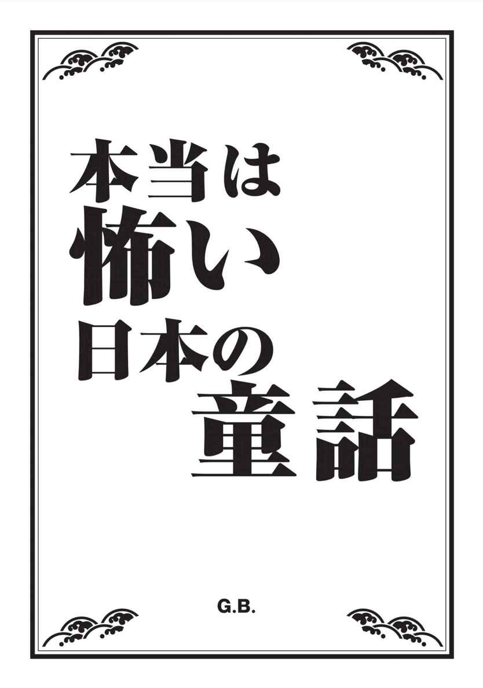
民族のルーツと「死」が指し示す
21世紀の新・日本の童話 ― まえがきにかえて
グリム童話ブームが一段落し、改めて自分たちの祖先が伝承してきた物語へ、熱い視線が注がれている。
「日本の童話」に関する数多くの書物が出版され、日本童話ブームの様相を呈している昨今、本書では「男と女の恐ろしい情念」と、「日本人のルーツ」に焦点を当て、昔話をまとめることにした。
ところで、なぜ昔話を読み解くことで、「日本人のルーツ」
を知ることができるのだろうか？
それは、古来より庶民の口から口へと口承で語り継がれ、伝えられてきた昔話には、正式な歴史的文書では決して残されることのなかった〝暗号"が数多く隠されているからである。
たとえば、庶民の生活に暗く影を落としていた貧困、その苦労によって引き起こされる悲惨な事件、また人間の心に潜む残虐性......。民俗学的知識だけでは語りつくせない人間の心の暗部が、メタファーとして巧妙に形を変え内包されている昔話には、もともと日本人が持っていた感受性や死生観、風俗習性などが色濃く、またいきいきと描かれている。
たとえば、今回本書で収録した﹃かちかち山﹄は、飢えた人間たちによる食人という戦慄すべき事例をタヌキという人間以外の悪者を登場させることによって、「被害者は人間」としてすり替えて語っているし、﹃桃太郎』では、中央政権に従わない異民族に対する征伐を、正義感あふれるヒーローを登場させることにより焦点をぼかして語っている。
物語の中に巧妙に潜む暗号を、読者がそれぞれの見解で読み解いていくおもしろさが、今、まさに日本童話の人気につながっているのではないだろうか。
しかし、時代が進むにつれて、昔話がそうした隠された暗号や教訓的要素を無視し、口当たりのいい娯楽作品として、あるいは子どもに聞かせることのできるハッピーエンドの物語として、広く流布されるにいたったことは残念なことだともいえる。
現在広く流布した健全童話の数々は、ほとんど「死」のにおいなしに語られる夢物語である。本来の昔話には、人間がもつ残虐性、いやらしさ、そして狡猾さも描かれていたし、何より「死」が隠されることなく、自然に語られていた。しかも因果応報な死ばかりではなく突然おとずれる理不尽な「死」も描かれていた。つまりかつての子どもたちは、小さなころから、生きることと同時に「死」を自然なものとして意識することができたのではないだろうか。
昔話に「死」の要素が薄まってしまったことが、現代の子どもたちの自殺率の増加につながっているなどと考えるのは、うがちすぎだろうか。
ともあれ、本書で意識した日本人のルーツと「死」。読者がそれらについて考えるきっかけとなれば幸いである。
童話研究家 桜澤麻衣
人間の俗悪さに翻弄される聖なる鶴
悲しい性を持つ人間の愚かさ
嫉妬に狂った母親に陰嚢(いんのう)を切り取られた美少年の復讐劇
男に心身を捧げた少年の争い
女を利用して長者にまでのし上がったなまけ者の末路
待ち構えていた運命とは......？
少女の性への好奇心が招いた惨劇
その軽率さがおのれの首を絞める
不思議な力を持つ娘を殺された両親の周到な復讐計画
幸せを奪われた者たちの復讐心
生(い)け贄(にえ)として死んだ父と口をきかなくなった娘の悲劇
古くから伝わる悲しい伝説
ぬれ衣を着せられたタヌキが問う「恐ろしい」者とは
中から現れた恐ろしい真実
蝦夷(えぞ)征伐に利用された、正義のヒーローの悲劇
桃太郎は権力者の隠れみの
月からパワーを得た美しい女の末路
かぐや姫の真の姿
荒廃した時代に突如現れる飯を食わない美人女房の正体
人食い鬼の正体は、餓鬼道(がきどう)に落ちた人の姿
吹雪の夜に現れる男に裏切られた女の悲しい復讐
大雪の晩に現れる美しい女の悲しい恨み節
童話が導き出す現代人の深層心理ーー あとがきにかえて
ぱらぱらと小雪がちらつきはじめ、これからふぶきそうな空模様の中、貞吉はわずか一枚の布団を買うために町へと向かっていました。
貞吉は炭焼き職人でしたが、家には平べったいせんべい布団があるだけという貧しい生活で、風邪をひきはじめた母親のために、貞吉はなけなしの百文を握り締め、その歩みを早めていました。
「正月のもち米を買うためにと、こつこつ貯めておいた金だが、おっかあのためだ。しかたがない」
山を下り、見渡す限り続く田畑は、稲の収穫も終わって裸になり、なんだか寂しい光景でした。真っ直ぐに続くあぜ道をただひたすら前へ前へと進むと、貞吉の視線は一羽の鶴の姿を捕らえました。
貞吉ははじめ、鶴が落ち穂をついばんでいるのだろうと思いましたが、どうも様子が違います。鶴は羽根をばたつかせながら、苦しそうにもがいていました。貞吉が鶴に近づくと、鶴は羽根にけがを負っているようでした。
鶴は「キーキー」と痛そうな鳴き声を上げました。貞吉が手当てをしてやろうと近づくと、肩に矢を背負った猟師が貞吉の後ろから声をかけました。
「おまえ、それはわしが仕留めた鶴じゃぞ」
かわいそうに思った貞吉は猟師に聞きました。
「なんとか情をかけて逃がしてやることはできぬだろうか」
すると猟師は、
「ばかいうでねえ。この鶴は真鶴じゃ。町で肉を売ったらいくらで売れると思うちょるんじゃ」
と一喝しました。それでも貞吉は猟師に、
「ここに布団を買おうと思って持ってきた百文がある。どうかこの金と鶴を交換してくださらぬか」
猟師は貞吉の熱心な態度に「そういうことなら」といって、金を受け取ると鶴を譲ってくれました。立ち去るとき猟師は、
「おまえはこの鶴を逃すのか？ ほんにお人よしよのお。真鶴は美味じゃぞ。それに町で売ったら高く売れ、金にもなるぞ。血などは不老の薬というて、お殿様までもが手に入れたがるのに」
ひっひっひっと猟師は意地汚く笑うと金を持ち去って行きました。
貞吉は鶴の体から矢を抜くと、幸いなことに、矢は羽根の端に刺さっているだけで、大した傷ではなさそうです。貞吉は、
「さあさ、もう大丈夫だ。人間の手に二度とかからないようにするんだよ」
といって放してやりました。鶴は白く美しい羽根を大きく広げると、ぴょこん、ぴょこんと貞吉の側を飛びまわり、暗くたれこめた空に向かって飛び立ちました。鶴は貞吉の頭上を三度まわると、どこかへ飛んで行ってしまいました。
貞吉は結局何も買うことができず、今しがた歩いてきた道を引き返しました。
「おっかあ、帰ったぞ」
と薄汚れた扉を開けながら、貞吉は寝込んでいる母親に声をかけました。すると母親が奥からのっそりと顔を出しました。
「貞吉、早かったな。布団はどうした？」
「途中、畑で鶴が矢を射られてけがをしておったんで、猟師に金を払って放してやった」
と貞吉が答えると、母親は、
「またそんなお人よしなことをしおって。だからうちはいつまでたっても金が貯まらんのじゃ」
と、ぶつぶつ文句をいいました。貞吉はきまり悪そうに、
「鶴は豊かな稲穂をもたらす縁起のいい鳥じゃ。何かいいことがあるかもしれん」
といって、母親をなんとかなだめました。
その晩は、案の定、雪が激しく降りはじめ、つくりの粗末な貞吉の家は、ひゅうひゅうと絶え間なくすきま風が吹き込んでいました。そのたびに戸口がガタガタとうるさく音をたてます。母親はぶるぶると大げさに震えて見せ、
「おお、寒い。温い布団があれば......」
と貞吉をうらめしそうな表情でにらみつけました。
ちょうどその時、戸口をトントンと叩く音と同時に「もうし、お願いがございます」と声が聞こえます。
「こんな時刻にいったい何者じゃろう」
ほっとけという母親の声を無視して貞吉が戸を開けると、雪の中に笠もつけず立っている若い女がいました。
「足をケガしてしまい、雪の中で困っています。どうか今晩だけでも、泊まらせてくださいませぬか」
と頼みます。よく見れば、その女は年のほどは十七、八で、抜けるように肌の白い清らかな娘でした。気の毒に思った貞吉は、
「それはおかわいそうに。しかし、うちは温い布団もないほど貧乏な家。なんのもてなしもできぬが、それでもよいなら」
そういって、中へ招き入れました。
母親は（またいらんことをしおって）と内心憎々しく思いました。
貞吉はおつうと名乗るその女に、温かい粥をすすめると、世間話などをしました。
囲炉裏の薄暗い灯りに照らされた女は、目鼻の整ったなかなかの器量のよさです。着物のえり抜きから見える白いうなじは、まるで絹のように滑らかでした。普段、若い女などめったに見ることのない貞吉は、一目でおつうの美しさに魅せられてしまいました。
（こんな女が嫁にきてくれたら、それ以上のぜいたくはあるまい）
貞吉は密かにそう思いながら、おつうを眺めていました。
夜も更け、そろそろ寝ようかという時、突然おつうは話があると、あらたまって切り出しました。
「わたしは身寄りのない貧しい娘ではございますが、おまえ様の嫁としてここにおいてくださいませぬか」
突然そんなことをいわれた貞吉と母親はびっくりしました。
「そうはいうても、うちは見てのとおりの貧乏暮らしじゃ。めとりたいにも養うこともできん。とても無理じゃ」
といって断ろうとすると、おつうは、
「貧乏暮らしには慣れております。一所懸命働いて、母様もきっとご安心させます」
と強くいいます。
貞吉と母親はそんなおつうの熱意に負け、嫁に迎えることにしました。
その晩、夫婦となったおつうと貞吉は、母親とは別の寝間に入り、床を同じくしました。
突然の果報に、貞吉はまるで夢でも見ているのではないかと何度も思いました。
白い着物をはらりと脱いだおつうの姿は驚くほど美しく、しっとりと水分を含んだみずみずしい肌は、触った貞吉の手をつるりと滑らせるほどでした。すっきりとした背中からくびれた腰にかけての線は実に見事で、肉づきのいい尻も貞吉をうならせました。
（こんなに完ぺきな女は、町でも見たことがねえ）
たまらなくなった貞吉がおつうのほっそりと長い首筋に唇をはわせると、おつうは体を少し固くし身を縮めました。
（かわいい女だ）
貞吉がおつうのふくよかでやわらかな胸を揉みしだくと、おつうはうつぶせになってなめらかな曲線を描く尻を高く突き出し、貞吉を迎え入れました。おつうは深いため息をもらし、ふたりはひとつになったのでした。
「おつう、おまえはすばらしい女じゃ。わしにはもったいないほどの女じゃ」
その夜、貞吉はおつうの体に溺れたのでした。
夫婦となったおつうと貞吉、そして母親は三人で暮らしはじめましたが、生活は相変わらず貧しいままでした。正月を迎えようにも、一家はもちを買う金もなく、年を越せるかどうかもわからない状態でした。
ある日、おつうは貞吉にいいました。
「このまま暮らしていても、生活が楽になるということはありますまい。これから六日間、わたしは納戸の中で羽二重を織りましょう。その布をおまえさんは町に行ってお金に換えてください。ただ私が布を織っている間は、決して中をのぞかないと約束していただきたいのです」
「おまえがそういうなら約束しよう。ただ六日間もおまえの顔が見られないと思うと悲しいのお」
貞吉はそういうと、おつうを抱きしめました。
「おまえにまで苦労をかけてすまないね」
おつうは機を納戸に持ち込むと、パタリと戸を閉じました。母親は貞吉に、
「六日もなんて、困った嫁だ。機織りなんてものは、どんなにかかっても三日だよ」
と苦々しい顔をしました。
それから貞吉の家では、毎日のようにキットン、パットンという音が狭い家の中に休む間もなく響きました。音があまりにも休むことがないので、貞吉は心配になり、時々おつうに声をかけましたが返事がありません。何度も食べ物を持って中に入ろうかと思いましたが、おつうとの約束を思い出し、ぐっとこらえて時をやり過ごしました。
六日目になり貞吉がそわそわしていると、突然ぱたんと音がやみました。すると中からおつうが出てきました。おつうの体は以前にも増してやせ細り、ずいぶん疲れているようでした。おつうは手にもった羽二重を差し出すと、
「おまえさん、この布を町に売りに行ってくださいまし」
と弱々しい声で頼みました。
しかし町に行くにも貞吉には旅費の持ち合わせがありません。するとおつうは貞吉に四十文手渡し、
「布はこの四十文の旅費が使い果たされたときに売ると、一番高く売ることができます。それを決して忘れないで」
といいました。
「おつうが休まず織った布じゃ。きっと高く売ってみせるよ」
貞吉は旅のしたくをすると、まだ日の明けぬうちから、はりきって町に出かけて行きました。
貞吉は貧乏でしたので、おつうの織った布の値段がどれほどになるのかわからず、町に向かう途中、出会った男に布を見せてみました。すると男は、
「この布なら、十両だしてもぜひ買いたい」
といいます。貞吉はびっくりして、その布をまじまじと見つめました。
（そんなに価値のあるものなのか......）
貞吉はなんだかきつねにでもつままれたような気持ちでした。
しかしおつうとの約束もあることだし、まだここで売るわけにはいかぬと先を急ぎました。
貞吉は村の富豪の家にも立ち寄ってみました。布を見せると富豪は「この布は四十両の価値は十分にある」といいます。貞吉はそれを聞くとだんだんおもしろくなってきて、そこでも売らず、まっすぐ町へと向かいました。
町にたどり着くと、貞吉は一番羽振りのよさそうな呉服商の暖簾をくぐりました。店の主人は布を見ると、その布の美しさにため息をもらし「八十両出しても惜しくはない」といいます。貞吉は思わず「売った！」と声をかけそうになりましたが、まだ旅費が二十文残っていたので、ぐっとこらえ店を後にしました。貞吉はさらに隣町まで足をのばし、豪勢な店構えの店に顔を出しました。店の主人は布を見ると「いまだかつてこんなにすばらしい布には触ったことがない。百両で買う」といいます。貞吉は目が飛び出るほどびっくりしました。貞吉にとってそれは天文学的な数字でした。「売る」という言葉がのどから出そうになりましたが、旅費があと十文残っていたので、「その額では売れない」と貞吉がいうと、店の主人は「さらに倍出す」といいます。
「倍......ということは、二百両？」
貞吉はもう倒れそうでした。まさかおつうの織った布がそんなに価値があろうとは。貞吉は旅費が残っていたことなどさっさと忘れて、話をつけてしまいました。
貞吉は荷車を手配すると、呉服屋の前に用意させ、二百両の金を積むと、急いで家へと戻りました。家に戻るとおつうと母親に布がいかに高く売れたか話しました。しかしおつうは、
「旅費のつきるところで売れば、三百両で売ることができたのに」
と自分との約束が守られなかったことに文句をいいました。しかしこれだけ高く売れたわけだから、まあよかったとおつうも喜んでくれました。
貞吉と母親はその金で、温かい布団や風邪薬、そしてもち米や酒を買って無事正月を迎えることができました。立派な屋敷も建てました。それでも金はまだまだあり余るほど残っていました。
しかし金が入ってからというもの、貞吉たちの生活は一変してしまいました。貞吉は炭を焼かなくなり、母親もどんどんぜいたくを望むようになってしまったのです。
貞吉は町に遊びに行っては、酒を飲み、博打を打ち、そして遊郭に出入りするようになりました。一方、母親もぜいたくな着物を買い、物見遊山(ゆさん)に出かけたり、若い歌舞伎役者の後援者になったりしました。
また金を増やそうとして、悪知恵の働く人間にだまし取られたりもしました。ふたりとも家を空けることが多くなり、おつうはひとりぽつんと家に取り残されることが多くなりました。それでもおつうは家で飯炊きをしたり、針仕事をして家をしっかりと守り、貞吉や母親に文句をいうこともありませんでした。
普通に生活していれば、一生食べていくには困らないほどの金を得たはずでしたが、貞吉や母親の浪費のため、金は数か月のうちにどんどんと減りました。さらに悪いことに、博打に手を出した貞吉は、町のやくざ者から膨大な借金までつくってしまったのです。
そんなある日貞吉は、布を二百両で買った呉服屋の主人と偶然町で出会いました。
呉服屋は貞吉に、
「あの布は本当にすばらしかった。いったいどこで手に入れることができた？」
とたずねます。貞吉は、
「うちの嫁が六日がかりで織ったんじゃ」
と自慢げに答えました。
「お前の嫁だって？ そりゃすごい。おまえは金のなる木を嫁にしたようなものじゃな」
とその呉服屋はいいます。
「金のなる木だって？」
「そりゃそうじゃ。あんな布を織れば、わしのように数百両で買う人間は決して後を絶たんぞ」
と呉服屋はうらやましそうにいいました。
（そういえばそうだ。わしはなぜそれに今まで気づかなかったのだろう。金がなくなったら、おつうにまた織ってもらえばいいのだ）
そうか、そうかと貞吉は地団駄を踏みました。そうすれば、町のやくざな男から金を借りることもなかったのです。貞吉はにやりとして、呉服屋にたずねました。
「もしあの布がもう一度手に入るとしたら、おまえさんはいったいいくら出すかね？」
呉服屋は少し考えていいました。
「二百五十両出そう」
貞吉はふくらんでいる借金のことを思い出し、
「前金でもらえなければ、その額ではだめだ」
といいました。呉服屋は、
「よかろう。前金で今日中に用意しよう。その代わり嫁には必ず一週間後に布を織り上げさせろ。それができないなら、倍にして金を返してもらうからな」
貞吉は呉服屋に金を用意させ、その足で借金を返すと、そのまま町に繰り出し、夜遅くまで遊び呆けてから、やっと家に帰りました。
その日、酔っ払って家に戻った貞吉は、寝ているおつうを呼び起こしました。眠い目をこすりながら、おつうが起き上がると、
「おまえ、もう一度、あの布を織れ」
と貞吉はいきなり命令口調でいいました。
「まだ十分お金があるはずではありませぬか」
とおつうがいうと、
「わしに口答えする気か！」
といって、おつうの顔を平手で殴りつけました。おつうの体は床に投げ飛ばされ、壁にぶちあたりました。
「おまえはわしの女房だろ。亭主の頼みが聞けないというのか！」
貞吉はわなわなとうち震えながら怒りました。おつうは殴られた頬を手で押さえて、涙を流しながら、訴えました。
「あの布はそう簡単に織れるというものではございませぬ。わたしが身を粉にして織り上げた一反だったのですよ」
すると貞吉は急に哀れっぽい口調でおつうにすがるようにいいました。
「もう一度、あれと同じぐらいすばらしい布を織っておくれ。そうでないとわしは借金で町のやくざ者に殺されてしまうのじゃ。おつう、頼むよ......」
同じように金に困っていた母親も、いっしょになっておつうに布を織れと頼みます。おつうは悲しそうにため息をつくと、
「しかたがありません。もう一反だけ織りましょう。その代わり前と同様、決して中をのぞいてはなりませぬよ」
といい残し、その晩からおつうは納戸の中に入ってしまいました。
またキットン、パットンと機を織る音が家の中に響きました。毎日、朝から晩まで、おつうは休む間もなく、機を織りました。貞吉と母親は、
「やっぱりあの嫁は金のなる木じゃ。金に困った時は、布を織れと頼めば織ってくれるに違いない。身寄りのない女のこと、屋敷を出て行くということもあるまい」
そういって、ふたりは顔を見合わせてにやりと笑うのでした。
五日が過ぎ、布が織り上がる約束の日がやってきました。貞吉はおつうが出てくるのを、今か今かといらいらしながら待っていましたが、なかなか出てきません。納戸の板戸に耳を押しつけ、中の様子をうかがおうとしましたが、聞こえてくるのは、機を織る音ばかり。
そうこうしているうちに、町の呉服屋が貞吉の家の前まで布を受け取りにやってきました。
貞吉は焦って、
「おい、おつうまだか。客を待たすでねえぞ」
と声をかけましたが、返事はありません。呉服屋はそのまま客間で待つことになりました。日もそろそろ暮れはじめ、夜のとばりが下りるころ、一日中待たされた呉服屋は「話が違うでねえか」と怒りはじめました。
「ほんに夜明け前まで待っても、織り上がらんなら、五百両をわしに払う約束だからな」
それを聞いて、貞吉は焦りました。そうです、「倍返し」という約束をしていたのです。
しかし前金でもらった金はすでに借金の返済に当ててしまって、手元にはほとんど残りませんでした。貞吉は「おつう、早くしろ」と何度も声をかけましたが、機織りの音は一定のリズムを刻むばかりで、少しも急ぐ様子もありません。
呉服屋は「ちょっとおまえ、様子を見てこい」と貞吉にいいました。
「こんなに遅いんじゃしょうがねえ。ほんのちょっとだけのぞいてみよう」
そういって、指一本が入るだけ戸を開けると、こっそりと中をのぞいてみました。
納戸の中は薄暗く、中を舞う綿埃でぼんやりとしていました。貞吉は目をこらして奥までのぞきました。
するとどうでしょう。そこにはおつうの姿はなく、一羽の鶴の姿があったのです！
貞吉はあまりのことに驚き、何度もまばたきをしてもう一度見ました。すると鶴が機の前に座り、自分の羽根を一本一本抜きながら、糸を紡いで、布を織っているのです！
貞吉はぱたりと戸を閉じると、母親を呼び「鶴が......、鶴がおった」といいました。貞吉が呆然としていると、すっと納戸の戸が開き、前よりもいっそうやせ細ったおつうが、青ざめた顔をして出てきました。
そして貞吉に布を渡すと、
「おまえさん、あんたは約束を破ってしまいましたね。私は一度契りを交わした夫に、一生かけて従うつもりでした。しかしおまえさんときたら、あれほどのぞいてはいけないといったのに、見てしまったのですね」
おつうは悲痛な面持ちでいいました。貞吉と母親は呆然としておつうを見つめていました。
「正体を見られてしまった今となっては、もうこの家にいるわけにはいきません。わたしは出て行きます」
そういったかと思うと、おつうはばさりという音とともに鶴に姿を変えました。
そして驚く貞吉と母親に向かっていいました。
「私はいつぞやおまえさんに猟師から助けてもらった鶴です。あの時のご恩返しがしたくて、この家にやってまいりました。しかしこれでもうお別れです」
それを聞いた貞吉は、助けてやった鶴のことを思い出しました。
そしてその時出会った猟師の言葉も。
―真鶴は肉だけでなく、血まで高く売れる高級品だべ。
貞吉はさっと顔色を変えると、鶴の姿になったおつうに飛びつきました。
「逃がすものか！」
その目つきは、かつておつうを優しく愛した男とは別のものでした。おつうの恩返しなど、とうの昔に忘れ、貞吉の目に映った鶴の姿は、金にしか見えませんでした。
「おっかあ、この鶴は売れば高い金になる高級品だぞ」
そういうと、母親もあわてて鶴を押さえつけました。
鶴は羽根をばたつかせ暴れましたが、六日間何も食べずに身を削って布を織っていた鶴に、それほどの力はありませんでした。
母親は台所から包丁を持ち出してくると、押さえつけた鶴のほっそりとした首を真一文字にかき切りました。
「きぃぃ」というかなきり声と同時に、血しぶきが母親の顔にびしゃっとかかりました。
鶴はしばらくぴくぴくと細長い足をけいれんさせていましたが、そのうち動かなくなり息絶えてしまいました。
「その血を飲めば、長寿を得られるそうじゃ」
貞吉からその言葉を聞いた母親は狂ったような勢いで、鶴の首から流れるまっ赤な血をちゅうちゅうと吸い上げました。
貞吉はぎりぎりと鶴の手足をしばると、それを背中に背負って町へ向かいました。
「人間に化けおったこの鶴はいくらになるかいのお」
貞吉はにやにやしながら道中を急ぎました。
それからというもの、貞吉の家は借金がかさみ、屋敷も取り上げられて没落し、やがて貞吉と母親は物乞いとなって、そのまま野たれ死にました。亡きがらはやがてカラスがたかってついばみ、白骨だけとなりました。野ざらしとなったふたりの魂は、成仏できないまま、いつまでもさまよい続けたということです。
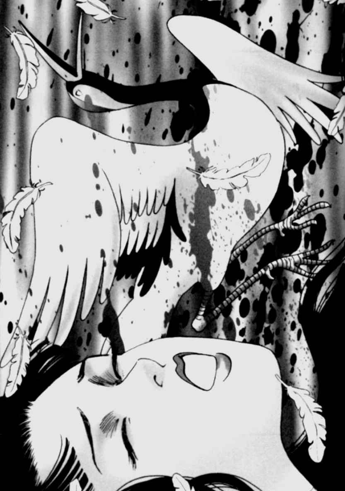
人間が動物や魚など異種の生き物と結婚する昔話は数多くあり、異類婚姻譚と呼ばれる。
日本での異類婚姻譚の大きな特徴は、正体を見破られた時に、人間の夫のもとを去るところだ。『鶴の恩返し』はその代表格といえる。
『鶴の恩返し』はいく通りかの筋がある中で、もっとも一般的な型のものは、木下順二の『夕鶴』に見られるように、助けられた鶴が若い娘に姿を変えて男の女房となり、恩返しに機を織るというパターンだ。鶴は機を織る姿をの
ぞかれて、最後には男のもとを去っていく。
鶴は昔から、稲作と関係の深い神聖な鳥、穀物をもたらす神の化身などと考えられてきた。と同時に、いつも同じ相手とつがいになっている（といわれる）ところから、夫婦のきずなの象徴ともされて、鶴の話が広まったのだ。
他の型としては、東北で見られるように、殿様が出した難題を女房が解くという変わったものもあるが、多くは鶴が正体を見破られ、あるいは理由なく、人間のもとを去ってしまう話が圧倒的だ。
鶴の織る布は、「天の羽衣」や「蓮の曼荼羅」とよばれ、昔話の中で天子や殿様といった身分の高い人に献上される場合が多い。
柳田国男は『鶴女房』や『瓜子姫』など、機を織る女性の登場する話と、巫女信仰との関連を指摘している（『桃太郎の誕生』など）。
古代では池や川のほとりに設けられた機場で、巫女が神衣を織っていた。
また江戸時代の『北越雪譜』には、君に献上する越後上布を、特別高度な技術を持った女たちが、神聖な場所でだれにも見られぬようにして織っていたことが記されている。
こういった習慣が『鶴の恩返し』の中に反映されていると見ることもできよう。
昔話の中でも機織りをする女性はこの世の者ではなく、神に近い存在として描かれていることが多いが、これは機織りが日常に欠かせないものであり、機織りの技術を持った人に畏敬の念を抱いていたということが関わっているのかもしれない。
秋のやわらかな日差しが山々の紅葉を照らす、午後のある日、数えで四十になったばかりとは思えないほど老けた様子の作二朗は、何やらぶつぶつとつぶやきながら家路をたどっておりました。
「今夜もあいつは、わしの体を求めてくるのじゃろうか......？」
作二朗の嫁、お千はまだ三十路を過ぎたばかりの女ざかり。毎夜のように、作二朗に夜の営みを求めてくるのです。甘い猫なで声を出して、しなだれかかってくるお千。果実が熟れて中身を開かずとも、その甘い蜜を想像させるような色気を、体中から発している女でした。しかし作二朗はそれが少しもうれしくありません。むしろそうしたお千のそぶりに悪寒さえ感じてしまうほどだったのです。しかし、そんな悩みを村の男たちに話しても、
「あんな色っぺえ女房をもらっといて、何をいうとるだ」
「毎晩、かわいがってやれよ。なんなら、わしが代わりに面倒みてやろうか？」
と一笑に付されるばかりで、真剣に取り合ってもらえませんでした。
―わしがおかしいだけなのか......。しかし、なぜだかお千が鬱陶しくてしょうがない。
作二朗は道中、夕餉の足しにとお千に頼まれていた山菜採りをするために、少し寄り道をすることにしました。
「少しでもお千とふたりでいる時間を少なくできるのなら」
そんなことをこぼしながら、作二朗は茸など秋の山菜採りに夢中になっていました。
時のたつのも忘れて手を動かしていた作二朗がふとわれにかえると、日はすでにとっぷり暮れ、あたりは暗闇に覆われていました。かさかさと冷たい風が木の葉を揺らし、肌寒さを感じた作二朗は、「そろそろ帰るか」と、観念したように手を止めました。そしてかごを担ぎ、勢いよく立ち上がったその時です。
「あわわわわ」
作二朗は両手をバタつかせ、かごの重みそのまま後ろ向きに倒れてしまいました。
作二朗がどすんと尻もちをつくと、かごはごろんと背中から外れころがりました。と同
時に背負い子の中から、「ぎゃっ」という声が聞こえたのです。
「な、なんじゃ、なんじゃ？ かごの中から声が
あ然とした作二朗は、恐る恐るかごの中をのぞき込みました。と同時に「わっ」という叫び声を上げて後ろに飛びのきました。
「な、なんじゃ、今のは......？」
暗闇の中でよく見えなかった作二朗でしたが、人間の目らしきものが、かごの中からのぞいた気がしました。作二朗は怖くなって、どうしたものかとオロオロしていると、中から「くしゅん」という小さなくしゃみをする声が聞こえました。
「こ、子ども!?」
作二朗は目を凝らしてもう一度よく見てみました。するとどうでしょう。かごの中には、全身びっしょり濡れた小柄な少年がうずくまっているではありませんか。
「これ、これ、おまえはいったいぜんたい、どうしてそんなところに入っておるのじゃ？
かくれんぼをしておるわけでもあるまいに」
作二朗は少年をかごから出してやりながらたずねました。
すると少年はしくしくと泣きながら、こういうのです。
「おらはおっかあに人買いに売られたのじゃ。ところが川を下っている時に、舟がひっくり返り、人買いたちはどこかへ沈んでしまった。おらは必死で岸に泳ぎ着き、山の奥へ奥へと逃げてきた。だけんど寒くて寒くて凍え死にそうじゃった。そしたらおじさんのかごが置いてあった。温かそうだったんで、こっそり中に入って隠れておったのじゃ」
「それはそれは命びろいしたものじゃ。おまえさんは運がいいぞ。それにしてもそのままの格好では風邪をひいてしまうに違いない。どれ、わしの家の囲炉裏で服を乾かしてやろう。いっしょについてくるがよい」
作二朗は、再びかごを担ぎ少年の手を引くと、山をゆっくりと下りはじめました。
粗末な藁葺屋根の家に戻った作二朗は、さっそく奥にいるお千を呼び出しました。
夫の帰りが遅いので、いらいらしていたお千は、作二朗が連れてきた少年を見て顔をしかめました。
「なんだい、この子は。どぶねずみのようなにおいがするじゃないか。汚いったらありゃしない。どこの子なんだい、いったい」
お千はあからさまに嫌悪の表情を顔に出しました。さらに作二朗からことのいきさつを聞くと、いっそう腹を立てて、作二朗に怒りをぶつけてきました。
「人買いから逃げた子をうちに置くだって!?そりゃとんでもない話だよ。見つかったときにどんな目にあわされるかわかったもんじゃない。うちに置くことにあたしは絶対反対だね」
「まあ、そういうな。かわいそうな子じゃないか。それにうちには子どもがおらん。おまえだって、子どもを産まないことで、隣近所からいろいろいわれているんじゃろ？」
作二朗がそういうと、お千は口をつぐみました。
「それはおまえさんがあたしを満足させないからだよっ！腎虚のくせに！」
感情的になって怒るお千でしたが、子どもがいないことで、村人にずいぶんと陰口をささやかれていたのでしょう。最後にはその少年を受け入れました。
お千がしぶしぶながらも納得したことで、作二朗はほっと胸をなで下ろしました。これで、お千とふたりっきりにならないですむからです。
お千と肉体関係を持ちたくない―作二朗が少年を家に置きたいと思った理由は、最初は確かにただそれだけだったのです......。
一方、山から連れ帰った時は泥で汚れ、ずぶぬれだった子どもを、裏の川できれいに洗ってやると、なんとも美しい少年に生まれ変わりました。
肌は初雪のように真っ白で、骨細できゃしゃな体つきに、大きな切れ長の瞳は穢れを知らない少女のようでした。七、八歳の幼い少年は、それまでの暗い過去などあっという間に忘れた様子でした。庭で穀物をついばむ雀のように、きゃっきゃっと朗らかにはしゃぎまわり、子どものいない作二朗をずいぶんと喜ばせました。
少年は幸運をもたらすといい伝えられる白い雀にたとえて「白雀」と名づけられました。
しかし、白雀が成長するにしたがって、作二朗の気持ちに微妙な変化が生じはじめたのです。ただかわいいと思っていただけの白雀のほっそりとした体つき、無邪気な表情、振る舞いをみていると、胸がドキドキと高鳴り、体がほてったように熱くなるのです。
そして何より作二朗自身を驚かせたのは、白雀を見た時に自分のモノが勢いよくそそり立つように反応したことです。こんなことはこれまで一度としてなく、お千との初夜にだって、なんとか反応させるのに苦労したくらいだったのですから。
作二朗はお千がいうように、自分は腎虚だと思ってあきらめていたのです。しかし、実
はそうではなかった―。作二朗は自分が男色であることにやっと気づいたのです。しか
も、少年である白雀に対する思いは、初めての恋を知った少女のように、また運命の恋人
にめぐり合った男のように、喜びに満ちたものだったのです。
これまで生きる喜びなど何も見い出せず老けていく一方であった作二朗が日に日に若返っていく姿を、お千は不思議そうに見つめていました。
しかし、作二朗がその気持ちを抑えきれなくなってしまう日がとうとうやってきました。
数日前からお千は、月のものがやってきたために、村の女ばかりが集まって時をやり過ごす月経小屋にこもっておりました。家には作二朗と白雀がふたりきり。白雀は昼間、遊びまわって疲れてしまったのか、早くから床につき、ぐっすりと眠り込んでいました。
その様子を、しばらくぼんやりと見つめていた作二朗でしたが、白雀の体にかぶせた薄い布団をおもむろに払いのけると、白雀の着物の帯をそっとほどきました。
はらりと前がはだけられ、小さな陰茎があらわになった白雀の無防備な姿は、作二朗を異常に興奮させました。つるつるとした肌に手を滑らせると、ひんやりした肌の奥にある白雀のぬくもりが、てのひらを通して伝わってきました。頬から首へ、胸から腹へ、そして作二朗の手は、白雀の下半身に届きました。そのままそっと包み込むように一物をつかむと、作二朗はそこへおもむろに唇を近づけ......。
作二朗は夢見心地でした。目を覚ました白雀は拒否することなく、作二朗のなすがままでした。白雀もうっとりとした表情で、目は空をさまよっていました。
しかしそんな空気を一度に壊したのは、小屋から戻ってきたお千でした。
お千は家の戸口に立った時、中から妙な話し声がすることに気づきました。
「かわいい白雀、おまえをずっと大切にするよ。わしはおまえのおかげでやっと自分がわかった気分じゃ」
白雀は無言でした。でもその代わりにかすかなあえぎ声が聞こえます。不思議に思ったお千は、戸のすきまからそっと中をのぞいてみました。
するとどうでしょう。とんでもない光景がお千の目に入ってきたのです。
狭苦しい藁葺きの小さな部屋で、前をはだけさせた白雀の下半身に顔をうずめている作二朗の姿！ そしてその作二朗は白雀の陰嚢をぱっくりと口にふくんでいたのです。
「お、おまえたち......っ！」
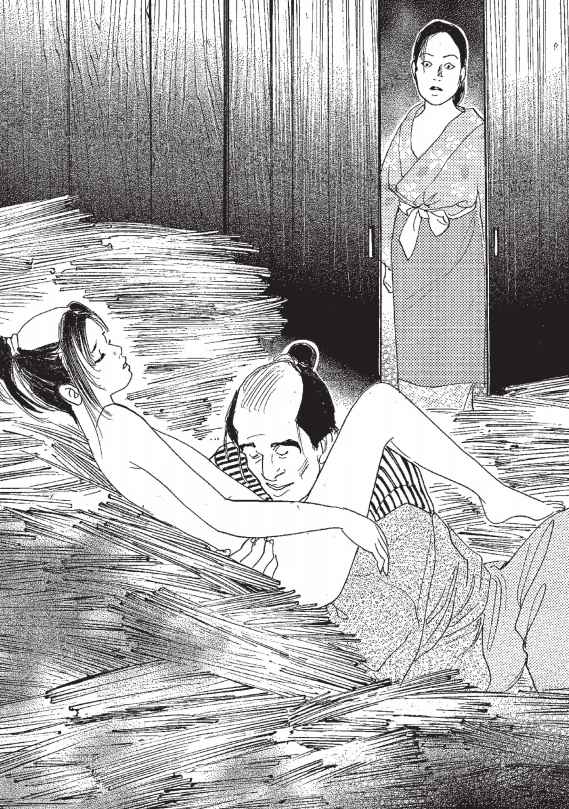
一気に頭に血がのぼったお千が作二朗に飛びついたのは、そう叫んだのとほぼ同時でした。
虚をつかれた作二朗は一瞬、何が起こったのか理解することができず、背中に飛びつかれた勢いで、上あごと下あごを強く閉じてしまったのです！
「ぎゃああああ〜」
白雀は、鶏が首を絞められたような叫び声を上げました。はっとわれに返った作二朗が自分の口元に目をやると、小さな陰嚢の下にあるはずのふくろがざっくりと引きちぎられているではありませんか。そして自分の口の中には、白雀の引きちぎられたふたつの精の玉が......。作二朗は悲鳴とともにそれを吐き捨てました。
壁一面に白雀の鮮血がしぶきのように飛び散っていました。
しかしお千はその血には少しもひるまず、まなじりをつり上げたまま、はあはあと肩で息をすると、作二朗と白雀をにらみつけていました。
白雀は目を白黒させると、その場で気を失ってしまいました。
「お千、おまえ、なんてことを......」
「あんたっ！ あたしに対するこんなひどい侮辱をどうやって償ってくれるのさ！ あたしはあんたの嫁だよ。今すぐこの子を町に売り飛ばしにいかないと、村中に今見たことをいいふらし、ここには住めなくしてやるよ！」
お千は作二朗が吐き出した陰嚢をつかみ取ると、「犬にでもくれてやらあ！」と叫びながら、庭にいる犬に投げつけました。においをかいで近づいてきた犬は、それをくわえるとどこかへ持って行ってしまいました。
そんな激しい出来事があった晩から、作二朗の家には、明るい笑い声が響くことは二度とありませんでした。そうして季節が何度となくめぐりました。
作二朗とお千は、以前にも増して冷たい夫婦生活を続けていました。互いに相手を恨み、憎しみ合う関係―。作二朗にとっては、村で生活するために白雀を犠牲にしたことに対する後ろめたさ、一方、お千にとっては、自分の夫の男色を目覚めさせた白雀に対する恨み、それは埋めることのできないほどの溝となってふたりの間に横たわりました。
そんなある日のこと。作二朗は風のうわさで白雀のことを聞きつけました。
「雀のお宿」という歌舞伎芝居を見せる一座で、町の男たちを惑わすほど美しい女形を演じる男が「白雀」という名であることを知ったのです。白雀は踊りも一級ならば、歌も当代一、なにより十五になっても声変わりせず、雀のような高い声を出すということで、お殿様までもがお忍びで芝居小屋へと足を運んでいると評判でした。
それを聞いた作二朗は、町へ買い物に行くふりをして、こっそりと白雀に会いに行くことにしました。お千のせいで陰嚢を引きちぎられた白雀の体を心配する気持ちに加え、まだ白雀を忘れられないという気持ちが強かったのです。初めて本気で好きになったのが少年であったことを、作二朗は決して悔いていませんでした。
町についた作二朗でしたが、白雀がいるという「雀のお宿」がどこなのかさっぱり見当がつきません。忙しげな雰囲気の町は、村と違って時間の流れも早く感じられ、作二朗は道の途中で立ち往生してしまいました。
ちょうどその時、道端で馬を洗っている男が目に入り、作二朗は近づいてたずねました。
「もしもし、雀のお宿という一座を探しておるのですが、ご存じござらんか？」
馬洗いは、洗っている手を少しも休めることなく、作二朗のことをちらりと見ました。
「おまえさんも白雀がめあてなのかい？」
「めあて......というか、わしはただ白雀という役者の姿を一目見たいと思うてな」
馬洗いにいきなり「白雀」と切り返されたので、作二朗は一瞬、まごつきました。こんな男までもが、白雀を知っていることに驚いたのです。一方、作二朗が男色であることを一目で見破った馬洗いは、ニヤニヤ笑いながら、
「しかしただで教えるというわけにはいかんなあ」
ともったいぶります。作二朗が少しは金を持っていると思った馬洗いは、ふっかける魂胆だったのです。
「おまえさんが五十文出すか、またはこの馬の洗い汁を樽で飲み干すか。どちらか選んだら教えてやってもよいぞ」
作二朗は戸惑いました。ちょうど作二朗の所持金も五十文、しかしここで払ってしまっては、芝居小屋に入れなくなる可能性があると思った作二朗は、馬の洗い汁を飲むことにしました。
「洗い汁を飲もう」
「本気か？ それじゃあ、たっぷり飲んでもらおうか」
弾けるように笑い飛ばした馬洗いは、樽に、まっ黒く汚れた洗い汁をなみなみと注ぎました。
作二朗は白雀に会えるのならと心を決め、ぐっと目をつぶり、虫がわいたその汚水をごくごくと飲みはじめました。汚水はかび臭く、作二朗は何度も吐き戻しそうになりながら、それでも「白雀のためだ、あいつは町に売りつけられ、もっと辛い思いをしてきたに違いない」と自分にいいきかせ、一気に飲み干しました。
「さあ、飲んだぞ。どうか教えてください」
作二朗は馬洗いに詰め寄りました。まさか飲み干すとは思っていなかった馬洗いは、驚きながらも、次のように教えてくれました。
「この道にそってずうっとまっすぐに行くと、突き当たりにあるのが、雀のお宿だ。そこの門番に正吉という男がいるから、そいつに声をかけてみろ。わしはやつの友だちだから、馬洗いに聞いたといってみれば、何か教えてくれるだろう」
作二朗は礼をいうと、急いでその場を立ち去りました。雀のお宿に近づくごとに、作二朗の心臓は、激しく高鳴りました。
︱︱ 別れてしまってから、いったいどのくらい時間がたったのだろう。きっと立派に成長した白雀がこの中にいる。
いわれたとおりに進むと、華やかな芝居小屋らしい建物が現れました。村では見たことのないほどの人垣が小屋のまわりにでき、呼び込みの男の声があたりに響いていました。
作二朗はその華やかさに少し尻込みしながらも、門番をしている男に声をかけてみました。
「もしもし、あなたは正吉さんかな？ 馬洗いの方に聞いたのだが、私は白雀に会いたくて遠い村からはるばるやってきた者じゃ。あなたならご存知だと聞いたのだが」
門番をしている正吉という男は、横目でちらりと不審そうに作二朗を見ました。
「お兄さん、白雀はうちの看板役者だよ。そう簡単にお客に会わせるわけにはいかねえのは、田舎者のあんたでもわかるじゃろ」
「わしは客じゃないんだ。白雀はわしの息子なんじゃよ。元気にやっているかどうか会いたいだけなんじゃ」
「息子だって!? そんなずうずうしいことをぬかすな。白雀はもともと孤児なんじゃ。そ
んなことをいって、おぬし、まさか取り締まりの手の者ではなかろうな」
「とんでもない。わしはただの田舎者じゃ」
作二朗は必死で否定しましたが、男はなかなか信用してくれません。
「わしはさっきの馬洗いの要求どおり馬の洗い汁を飲んでここを教えてもらった。そんなことができるやつは親以外にいるものか」
それを聞いた正吉は、いじわるそうな笑みを唇の端に浮かべると、
「そうか、ならわしもおまえをためさせてもらおう。芝居小屋は肥えがたまって困っている。その肥だめにある糞どもを一樽ぶん、食うことができるかな？ もしできれば、おまえを白雀の父親だと認めて、会わせてやろう」
「に、人間の糞を、く、食うのか......？」
作二朗の顔がさっと青ざめ、額にはうっすらと脂汗が浮かびました。返事に窮していると、男は作二朗を肥えだめに連れて行きました。
肥えだめはむっとするほどの暑さで、吐き気をもよおすほどの悪臭が立ち込めていました。しかし作二朗はまたしても陰嚢を切り取られ、町へ売り飛ばされた白雀のことを思い出し、その男のいうとおり、人間の大小便を一樽ぶんすべて食うことを決心しました。
しかし、今度は馬の洗い汁のようにはいきません。なんといっても人間の大小便です。作二朗はものすごい悪臭と口の中にへばりつく糞の感触に何度も、腹の中のものまで吐き出してしまいました。それでも肥えだめの糞にまみれて何度も倒れながらも、食うのをやめませんでした。まさしく狂ったように食い続けました。そして、なぜこんなことを自分がしているのかも、だんだんわからなくなってきたころ、作二朗の意識は遠のき、肥えだめの中でとうとう倒れてしまいました。
次に作二朗が目を覚ました時、大小便で汚れた体はきれいにふかれ、布団の中に寝かせられていました。
「気がつきましたか？」
優しい声のするほうを作二朗が見ると、そこには子どものころの面影をかすかに残した白雀が座っていました。白雀はまっ白いおしろいをはたいた肌に、まっ赤な紅をほんの一点唇にのせた、本物の女の何倍も女らしい、におい立つほど艶やかな美しい姿をしていました。
あまりの美しさに作二朗は無理な姿勢のまま体を起こそうとしました。
「いたたた」
腹を押さえて、作二朗はまた布団の中に倒れてしまいました。
「無理をしてはだめですよ、父様。それにしてもこんなに辛い思いをしてまで、私に会いにきてくださるなんて」
「白雀、わしはずっとお前に会って謝りたかった。わしらのしたことをきっと恨んどることじゃろう。しかしわしはおまえに知っておいてほしいのじゃ。わしがどんなにおまえのことを愛しく思っていたか、どんなに会いたかったか。いつまでもおまえを大切にして、いっしょに暮らしていきたかった......」
白雀は仏のように静かな表情で、作二朗をじっと見つめていました。
「母様はどうしているのです？」
白雀がたずねると、作二朗はさっと顔を曇らせました。
「お千か......。そうじゃな、とにかく白雀のことを恨んでおってな......。あれのせいでわしはお前がいなくなった後、死んだように生きていた気がするわ」
作二朗と白雀は、空白の時間を埋めるかのように夢中で語り合いました。
そして最後に作二朗は白雀の口なぶりも受け、思いが満たされ幸せな気持ちになりました。
「父様、これはわずかですが、十三の時から私が少しずつ貯めてきたお金です。これで少しでもこれからの人生を楽しんでください」
作二朗はその小袋を受け取りました。すると白雀はこんなこともつけ加えていいました。
「私は母様のせいで陰嚢を切られましたが、実はそのおかげで声変わりもせず雀のような声を売り物に、こうして何不自由なく役者として暮らせているのです。実は母様にもたっぷりとお礼をしたいくらいなのです。ですが私は小屋から離れることを許されていません。もし母様がここにきていただけるのなら、ぜひおいでいただきたい。そのように伝えていただけませんか」
村に戻った作二朗は、さっそくお千に白雀のことを話しました。白雀に会いに行ったことをお千は少し怒るようなそぶりを見せましたが、白雀が自分にお礼をたっぷりとしたいといっているというくだりになると、にんまりと形相を崩しました。
「お殿様のお気に入りというほどの町一番の人気役者なのだから、相当の金を貯めているに違いない。たっぷりとお礼をしてもらおうじゃないか」
お千はさっそく次の日に念入りに化粧をし、これまで作二朗が見たこともなかった着物をたんすから引っぱり出すと、着飾って町へ出かけていきました。
場所は作二朗から聞いていたので、まっすぐに「雀のお宿」の一座にやってきました。「白雀はおるか？ あたしじゃよ、母様じゃ。はるばるおまえに会いにきたぞ」
ずかずかと楽屋に上がり込んだお千は、わざとらしい笑みを浮かべ、白雀にいいました。
「育ててやった昔の恩を忘れずに、わしに礼をしたいそうじゃな。感心なことじゃ」
お千は白雀の手を取り、なでるように触りました。白雀はその手をもとに押し戻す、
「その前に母様にぜひ召し上がっていただきたいものがあります。偶然にも世にもおいし
い飴が手に入ったのです」
「ほうほう」
お千は飴など本当はどうでもよかったのですが、もともと食い意地が張っていたため、白雀の手の飴に見入りました。
「さあ、口を開けて、舌を出してくださいな」
いわれたとおりお千は大きな口を開け舌を伸ばしました。
とその時です。
すばやくお千の舌をつかんだかと思うと、白雀は小刀をさっと振り上げました。
そして舌を思いっきり引っぱると、根本からざっくりと切り取ってしまったのです！
「うぐおう！」
お千のくぐもった悲鳴とともに、あたり一面に鮮血が飛び散りました。痛さに転げまわるお千に向かって白雀は吐き捨てるようにいいました。
「雀百まで踊り忘れずというが、白雀は百まで恨みを忘れませぬよ......」
そして床にのたうちまわるお千を荒縄で縛ると、通りに引き出して叫びました。
「お役人さま！ 手配中の女盗賊・かささぎのお光を、白雀がただ今捕えましたぞ！」
白雀の声を聞いて、番屋から役人が、そして周囲のやじ馬がばらばらと集まってきました。
「この女がかささぎのお光だというのか？」
「左様でございます。われら一座の者を脅して金子を盗もうとしておったのです。雀のお宿の一座の者、みんなが証人です」
「そういわれてみれば、なんとなくあくどい顔をしておる。どうじゃ、かささぎのお光、申し開きがあるか」
しかし舌を切られたお千は何もいい返すことができず、必死に首を横に振るばかりです。
それを見たやじ馬たちは、お千に石を投げつけ、罵声を浴びせかけました。
お千は役人に引っ立てられると、市中を騒がした女盗賊として、牛に首、両手、両足を引き裂かれる八つ裂きの刑で無残な最期をとげたのです。
白雀はお千を始末してしまうと、その後、作二朗を呼び寄せ、作二朗が死ぬまで面倒を見ました。ふたりはお互いを大切にしながら幸せな人生を送ったということです。
中国などから伝わった「鳥が幸福をもたらす」という古代人の信仰が反映されている『舌切り雀』は国民的童話といわれるほど、各地で伝承されている。江戸時代の赤本で普及し、明治以降は赤い鳥運動の鈴木三重吉が創刊した童話・童謡の雑誌『赤い鳥』や国定教科書に採用された。赤本としての『舌切り雀』が次々と起こる難題のない型だったため、あくのない報恩譚としての形が主流になってはいるが、実は赤本とは別に口承で伝承したものは、地方によって細部がかなりバラエティに富んでいておもしろい。
たとえば、今回この物語を読んで「なんて、汚らしい！」と眉をしかめた読者もいるかと思うが、雀を探す爺が、牛馬の糞尿や汚れた血、泥水などの汚物を飲まされたり、服を脱いでいばらの中を転げまわったり、と爺が難題に挑む型の『舌切り雀』は、日本各地で語り継がれてきた話なのだ。
それに日本中に混在する『舌切り雀』を見てみると、最終の復讐シーン以外でも、雀だってなかなかしたたかな顔を見せているのである。たとえば、洗濯糊を自分で食べてしまったのに、婆に聞かれた時に、隣の猫のせいにしたり、婆をもてなすふりをしながら、茶わん代わりに便所のふた、箸の代わりに尻を拭く木片を使わせて、蛇の刺身や蝦蟇(がま)の煮染め、ミミズの酢づけなどを食べさせたりもする。
ちなみに地方独特のものとしてユニークなところをあげてみると、福井県では舌切り雀だけでなく、鼻切り雀や耳切り雀も登場する。雀の鼻や耳とはいったい......？ 絵本でぜひ見てみたいものだ。広島では、爺は雀に「何がほしい？」と聞かれて「米倉(こめくら)」と答えると、立派な米倉がぼーんと現れる。それをまねた婆も「こめくら」と答えると、小さい盲が現れて「杖をくれ」といったという。童話の持つ差別性をかい間見ることができる。 京都ではこの雀が、娘や嫁である場合もある。洗濯糊を食べてしまった娘や嫁の舌を、婆が怒ってはさみで切ると、雀に姿を変えて飛んでいってしまうのである。
しかし、ここで注意深く、その婆と雀の確執を拾っていくと、何か見えてくるものがないだろうか。雀の正体が実は嫁であったという話が残っていることからも、これは人間同士の確執を描いた作品としてとらえることが可能なのだ。
本話のように男が愛してやまぬ雀を女がそこまで嫌うからには、そこに何か重大な秘密が隠されていたと考えられなくもない。体が雀のようにきゃしゃで小さく、声が雀のように可憐で、体の一部を切り取って追い出したいほどに憎んだ相手は、まさに白雀のように、幼く成長しきっておらず、中性的な雰囲気を持っていた少年だった、という推理もあながちはずれてはいないのかもしれない。
「本当におまえはいくつになっても働こうともせんで！ そんなことでは嫁のきてもないぞ」
―ああ、うるさいのう。なぜ働かねばいかんのかのう。だれか口うるさいことをいわずに、養ってくれる者がおらんかのう。
美しい容姿を持つ友二郎は働くことが嫌いでした。年のころは二十歳を過ぎた立派な大人でしたが、年老いた母親の手伝いをしなければ、などという気持ちを持ったことは一度としてありませんでした。
母子ふたりの生活を支えているのは、年老いた母親が耕す小さな畑で採れるいくばくかの野菜だけでした。友二郎は、母に小言をいわれながらも、食っては寝、食っては寝を繰り返し暮らしておりました。しかしある日とうとう母親がぽっくりと死んでしまいました。
友二郎は母親が死んでしまうと、だれも自分の世話をしてくれる人間がいないので、困りました。そこでしかたなく、母親が残した小さな畑に出かけました。
この村の外れに、おみのという早くに亭主に死なれた年増女が住んでいました。おみのは働き者でしたが、醜女だったので後妻の口もなかなかかからず、ひとりで田畑を耕してさびしく暮らしておりました。このおみのの畑は、友二郎の畑の隣でした。おみのと友二郎の母親は言葉を交わしたり、たがいの仕事を手伝い合ったりする仲でしたが、怠け者の友二郎はこれまでいっぺんも畑に出たことがなかったので、顔を合わせたことさえありませんでした。
さてこの友二郎、畑に出たのはよいものの、なにせ畑を耕したことがないので、どこからどう手をつけてよいのかわかりません。考えるのも面倒なので、手もとに転がっていた藁を一本口にくわえると、あぜ道にごろりと横になり、ぐうぐうと眠り込んでしまいました。どれほど時がたったころか、いい気持ちで眠っていた友二郎は人の気配にふと目を覚ました。
目を上げると、浅黒い顔の女が、上から友二郎を見下ろしています。目覚めた友二郎と目が合うと、女は急にどぎまぎとした様子で目を泳がせていいました。
「あんた、ひょっとして、おいねさんの息子の友二郎さんかい」
「ああ、そうじゃが、おまえさんは」
「あたしはおみのだよ。あんたのおっかさんに生前ずいぶんよくしてもらったんだ」
おみのは友二郎のわきに腰を下ろしました。ふたりはしばらく世間話などをしました。
友二郎はおみのが時々、ほつれた髪を気にするしぐさがうるさく思われたので、口にくわえていた藁をおみのに差し出しました。
「おみのさん、ほら、これで結わえるといい」
そしておみのの髪を藁で結わえてやりました。後ろにまわった友二郎の口からもれる息がうなじにかかると、おみののしみだらけの黒い肌が紅潮しました。体の奥底でしばらく眠っていた何かが目を覚ますのをおみのは感じました。それにたとえ差し出されたものが藁であっても、あまり人にやさしくされたことのなかったおみのは、天にものぼる心地がしました。
その晩、畑で採れた大根を持って、おみのは友二郎の家を訪れました。
「友二郎さん、昼間はどうもありがとう。これ、藁のお礼に」
それからしばらくたって、着物の胸元をかきあわせながら、人目を忍ぶようにおみのが外に出てきたのは、夜もだいぶふけてからでした。
やがて、友二郎はまた畑に顔を見せなくなりました。その代わり友二郎の家にいそいそと出入りするおみのの姿が、村人の目にとまるようになりました。村人たちは好奇の目でその姿を見ておりました。
「おみのはすっかり友二郎にいかれちまったようだなあ」
「友二郎も罪な男じゃ。せっかく庄屋様がおみのの後妻の口を苦労して見つけてこられたのに」
「じゃが、ほれた男のために、ああして働いているぶんには幸せなんでねえのか」
「友二郎に捨てられるようなことがなきゃよいがのう」
人々は無責任にうわさし合いました。しかしそのうわさがやがて現実のものとなってしまう日がきてしまったのです。
ある日、おみのが畑仕事に行く前に届けてくれた遅い朝餉を友二郎がひとりで摂っていると、ぱらぱらと雨が降り出しました。するとそこに戸を叩く音がして、若い女の呼びかける声が聞こえました。
「もうし、すみません。旅の者ですが、急に雨が降り出して困っています。雨がやむまで少しの間、雨宿りをさせていただけませんか」
友二郎は戸の内側から声をかけました。
「どうぞお入りなさい」
がらっと戸が開いて、ふろしき包みをかかえ、すげ笠をかぶった旅姿の女が入ってきました。
「助かりました。わたしは京の都へ反物を届けに行くところなのです。天子様に献上する反物なので、雨に濡れては一大事となるところでした」
「それは難儀なことじゃった。さあ、お上がりなされ」
ずっと家にこもりきりの友二郎は、おみのを見た時も、自分のおっかあよりもずっと若い女だと思いましたが、この女はそのおみのよりもさらに若い娘でした。肌はおみのと同じように化粧っけもなく浅黒いのですが、おみののたるんだ肌とは違って、ぴんとしたはりがあります。世間を知らない友二郎の目には、この女がこのうえもなく美しいように思われました。そして見ているうちにそのやわらかそうな肌に触れてみたくなりました。
「そうじゃ、のどは渇いておらんか。このみかんは甘くてうまい。ひとつ食べるとよい」
友二郎は、かごに盛ってあっただいだい色のつややかなみかんを女にひとつ差し出しました。それは、おみのが丹精をこめてつくったみかんでした。水を汲むのもめんどうがる不精な友二郎を思って、のどが渇いたときのためにと、おみのが置いていってくれたものだったのです。
女が礼をいって受け取ろうとしたとき、女の指と友二郎の指が触れ合いました。女はぎこちない様子で、急いで皮をむくと、飲み下すようにみかんを食べました。友二郎は女ののどぼとけがごくりと上下するのをじっと見ておりました。そして女がみかんを食べ終わるのを見計らって、また声をかけました。
「もうひとつ、いかがじゃ」
女は友二郎のほうを向きました。そこには、何かを確信している、美しい男の顔がありました。女は無言で手を伸ばしました。ふたりの指がまた触れ合ったと思うと、今度はからみ合いました。みかんが鈍い音を立てて床に転がり落ちました。
日が暮れて、畑で採れた新鮮な野菜を友二郎に食べさせようとかごいっぱいに入れて、おみのが友二郎の家を訪ねると、友二郎は家からこつ然と姿を消していました。そしてひとり寝の後にしては不自然に寝乱れた夜具が、土間に敷きっぱなしになっていたのでした。
そのころ友二郎は、京へ反物を届けに行くという女といっしょに、旅の宿におりました。
互いの肉体をむさぼり合ってしまうと、友二郎はこの女と別れるのが惜しいような気がしてきました。また女も、この男と離れがたく思うようになりました。そこで、ふたりはおみのが畑で汗を流しているすきに、手に手を取って抜け出してきたのです。
女は名をたえといい、年は十九でした。年端もいかないうちから、江戸の反物問屋に奉公に出て、長いこと陰ひなたなく働いてきたため、主人夫婦にも実の娘のようかわいがられ、しかるべきところに縁談をまとめてやる、といわれておりました。たえは、これが最後のご奉公になるし、とても大切な仕事なので絶対に失敗できないのだ、と友二郎に打ち明けました。
道中、たえはすれ違う他の女たちが、うらやましそうな視線を自分と友二郎に送ってくることに気づいておりました。たえはこの反物を無事に納めたら江戸に戻り、主人夫婦にわけを話して、友二郎と所帯を持ちたいといいました。
一方友二郎は、はじめは目を奪われる美貌に思えたたえが、特別美しい女ではないことにすでに気づきはじめていました。そして他の娘たちが自分に投げかける視線から、自分が娘たちの心を容易にとらえることができる男だということも、敏感に感じていたのです。
京に向かう道中、だんだん友二郎のたえに対する態度が変わっていきました。
もうすぐ京に入るという日のことです。その日の宿で、たえはつれない友二郎の気をひこうと、それまで大事にしてきた包みを開けて見せました。現れたのは、この世のものとは思われぬ華麗な反物でした。友二郎はまばゆいばかりの布地に目を輝かせました。
「おお、これはすごい。天子様というものはいつもこんな着物を召されているのか」
「ええ、そうですよ」
たえは久しぶりに友二郎が言葉らしい言葉を発したので、うれしくてうなずきました。
そんなたえの思いをよそに友二郎は、しばらく沈黙したのち、こういいました。
「おい、これでわしの着物をつくってくれ」
それは頼みごととは思えない横柄な口調でした。たえは困惑しました。
「これは天子様のもの......。勝手に手をつけたらどんなおとがめを被ることになるか」
「ならもういい。その代わりおまえともこれまでだ」
たえは青ざめました。そこで、ついこういってしまったのです。
「わかりました。着物をつくってあげましょう。その代わり、寸法の足りなくなった反物を献上することができないのだから、あんた必ずわたしといっしょになってくれるわね？」
たえは必死の思いでした。たえにとっては、天子様への献上物よりも、今は友二郎を失わないことのほうが大切だったのです。
「ああ、いいとも」
男はやさしくたえの背中をなでながら、忙しく考えをめぐらせました。
翌日、たえは着物を縫いました。それを着ると、友二郎はさらに人目をひくような美形になりました。その姿を見てたえは、長い間世話になった主人夫婦の信頼を裏切ることになっても、この男を選んでよかったと思いました。
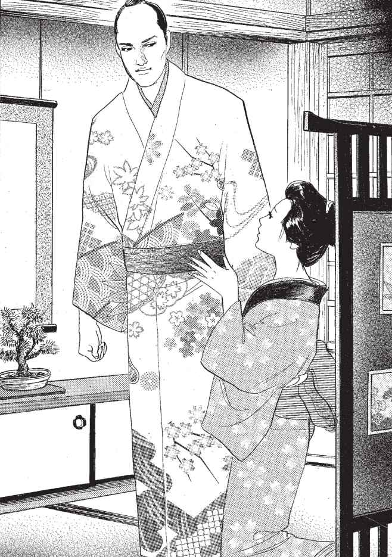
ある日友二郎は、この着物を着て歩いている時、大きな屋敷の前で呼び止められました。
その男は「申し訳ないが、その着物を少しの間、貸してはもらえないだろうか」という
のです。この家は馬を育てて、武家におさめるのが仕事でした。そしてこの日、一頭の馬をある屋敷に届けることになっていたのですが、武家に出入りするためにしつらえた正装の着物が間に合わなくて困っているというのです。友二郎は主人が帰るまで、好きなだけ家にいていいといわれ、この話を受けることにしました。
―たえの待つ宿屋に帰るのも気が重い。これはちょうどいい宿屋が見つかった。
友二郎がこの主人に借りた着物を着て、客間でくつろいでいると、この家の娘が茶菓を運んできました。このころにはだいぶ女たちを見慣れてきていた友二郎ですが、ゆきというこの娘は、愛くるしく、はつらつとしてとても魅力的でした。年を聞いてみると、十七とのこと。父親の仕事を手伝って、馬の世話をするじゃじゃ馬娘ながら、弾けるような若さに友二郎はたいへんひかれました。
友二郎が、このまだ初恋も知らぬうぶな娘をものにするのは、あっけないほど簡単でした。母親を早くに亡くしたこの家では、父娘の他には、通いの使用人がいるだけです。ふたりは夕方使用人たちが帰ってしまうと、そそくさと奥の部屋に行き、着物の帯を解くのももどかしく、毎晩明け方までからみ合うのでした。
ゆきは、友二郎の肩に頭をもたせかけながらいいました。
「友二郎さん、あんたあたいと夫婦になって、この家で暮らそうよ」
友二郎は考えました。
―ここの生活は決して悪くはないが、正式に婿入りするとなれば、わしも馬の世話をしなければならないだろうなあ。それもおっくうだなあ。
そこで、ゆきの求婚をのらりくらりとかわしては、あいまいな言葉で逃げておりました。
やがて、ゆきの父親であるこの家の主人が帰ってきました。ゆきは友二郎の返事も聞かぬまま、父親に友二郎といっしょになりたいと申し出ました。留守の間のふたりの関係を知った父親は苦虫をかみつぶしたように渋い顔をしました。
「せっかくよい土産話を持ってきたというのに......。実は将軍家に献上する馬を育てている家の息子との縁をすすめてくれる人があってな」
先方は、馬の世話のできる娘をぜひに、と望んでいるとのことでした。
「そういうことならばしかたがありません。おゆきさんの幸せのためにわたしは身を引きましょう」
友二郎はそういいながら、これで責任を取らずにすむ、と内心ほっとしました。しかし、気丈なゆきはあきらめませんでした。泣きわめき、時にはおどし、ついには父親を説き伏せてしまったのです。
父親も、ひとり娘のたっての希望ですし、すでにきれいな体でない娘のこと、このまま友二郎といっしょにさせるべきか、と折れたのです。それによくよく考えれば、友二郎もあれだけ立派な衣装を身にまとっていたのですから、悪い家柄の出のはずがありません。
「しかたない。だが、そうなると馬の育て方を覚えてもらわなければならん」
翌日からさっそく、馬に飼葉をやったり、馬の体をたわしで洗ったりといった仕事がはじまりました。友二郎はすぐに嫌気がさして、主人の姿が見えなくなると、藁の上にごろりと寝転がりました。すると父親の気が変わるのを心配したゆきが、こっそりと友二郎の仕事を手伝ってくれるのです。そうしてだらだらと日を過ごすうちに、友二郎はふと思い立ちました。
「おゆき、わしに馬の乗り方を教えてくれんか」
「友二郎さん、馬に興味が出てきたんだね」
ゆきは喜んで、たづなの握り方から鐙への足のかけ方など、一生懸命に教えました。
こうして友二郎がやっと一人前に馬を乗りこなせるようになったある日、家から友二郎の姿が消えました。この家で育てていた中で一番の名馬とともに......。
友二郎はどこへ行くあてもないまま、東へと馬を駆っていました。怠け者の友二郎には、馬に乗っているだけでもたいへんな労働でしたが、ここはゆきの家からの追っ手につかまってはたいへん、とばかりに馬にむちをあてて、懸命に走りました。
やがてどこかの城下町に入ったのでしょう。さまざまな店が立ち並ぶ姿が目につくようになりました。友二郎は、行き交う人々の間を馬で歩くのがけっこう難儀なので、店の途切れた小道の川べりの木に馬をつなぎ、ごろりと横になりました。そうして、うつらうつらと舟をこいでいると、だれかに呼びかけられました。
「もうし、そこのお方」
友二郎が薄目をあけると、立派な袴姿の侍が立っていました。
「お休みのところ失礼つかまつる。この馬は、ご貴殿の馬であるか」
友二郎は、ちょっと考え、相手に調子を合わせてみることにしました。
「いかにも。拙者の馬でござるが......」
侍は少し離れたところで待っているかごを指していいました。
「実は、あのかごに乗っているわが主君が、ぜひこの馬をじっくり拝見したいと申しておられる。お手数だが、城までごいっしょいただけませぬか」
どこへ行くというあてもない身です。友二郎は承諾しました。
この殿様の城は、これまで友二郎が入ったどんな建物よりもずっと立派なものでした。
城の中で友二郎は、昔の自分の家の畑よりも、広い居間に通されました。居間には高そうな掛け軸や壺が飾られていました。そして友二郎は、これまたこんな贅沢な食事があったのか、というほどの酒肴でもてなしを受けました。
友二郎は、ここの殿様が友二郎の馬がほしくてたまらない様子なのを見てとりました。
友二郎にとってあの馬自体は大して価値のない、人にあげてもさして惜しくないものでした。しかし、唯一の財産となれば、そこから最大の価値を生み出すように使わなければなりません。友二郎は、会話の中から、この城に年ごろの姫君がいることを聞き出しました。
―わしに幸運をもたらしてくれるのは女だ。その姫とまみえる日までは、馬は手放すまい。
その自信が幸運を招き寄せたのでしょうか。友二郎の思惑どおり、姫君仕えの腰元が友二郎を呼びに参りました。どうやら数日前に友二郎のためにもよおされた宴の席で、友二郎の美貌が遠目にも姫君の目に止まっていたようです。それからというもの、姫はちょくちょく友二郎を呼び出しては、無聊を慰める相手として遇している様子でした。
殿様はふたりが時折密会していることは承知しておりましたが、馬を手に入れたいという一心でむしろこの状況を喜んでおりました。姫君は輿入れの決まった身であるし、まわりには腰元もたくさんひかえています。そんな状況が殿様を油断させていました。
しかし、友二郎はもっと智恵者でした。姫君に上手に取り入ると、姫君を操って人払いをさせ、あっというまにこの固いつぼみをものにしていたのです。御歳十五になられる姫君は、初々しく、庶民の娘たちにはなかった気品もありました。手入れの行き届いたつややかな黒髪、陽にあたったことのない透きとおった肌は、この家という条件を除いても、十分魅力的でした。
侍女たちは友二郎と姫君の交わりの印を見つけましたが、そうすると、逆に自分たちの失態がばれるのを恐れて、殿様の目から覆い隠すために友二郎のいいなりになるようになりました。
やがて、固いつぼみだった姫の体が、だんだん敏感になっていき、平素の上品な姿からは思いも寄らぬほど、友二郎の愛撫に千々に乱れるようになっていきました。姫はやがて、友二郎なしでは生きられない体になっていたのです。
その見極めをつけると、楽しみに溺れる一方で、贅沢な暮らしへの冷静な目を失っていなかった友二郎は、姫にある智恵を授けました。
ある日、姫君があらたまって父親である殿様にお目通りを願い出て、友二郎を婿に迎えたいと告げました。殿様はこの展開に度胆を抜かれました。
「何をいうか。おまえは来春、ご本家筋に輿入れすることが決まっている身なのだぞ」
しかし、友二郎に入れ智恵されていた姫君はこう答えました。
「父上、わたくしは友二郎といっしょになれないならば、懐剣でのどをついて死にまする」
友二郎は、娘を愛する父親にとってはこれが何よりの説得法だと確信していました。庶民とは違って、娘が自分と肉体関係を持ったと知れば、父親はあきらめる前に逆上してしまうでしょう。
この作戦は見事に功を奏しました。
「しかたない。娘に死なれてしまってはもとも子もない。ここはひとつあの馬を手に入れることでがまんするか」
こうして、友二郎は自らの美貌を武器に、次々とただの怠け者から一国の若主人におさまってしまったのです。そして、新居となった城の中でも食べては寝て、動くのは姫君とたわむれる時だけ、という日常に埋没していきました。そして三年ばかりの月日が流れました。
ある日、ひとりの若い武士がこの屋敷にやって参りました。武士は西国からやってきた、この家よりもさらに格が上の大名家に使える者で、眉目秀麗のりりしい若者でした。武士は、殿様とひそひそと額を寄せて話しておりました。やがて殿様が、その若い武士をつれて友二郎と姫君の寝所を訪れました。今やふたりは、四六時中ここで過ごすようになっていたのです。
「これ婿よ、大事な話がある」
友二郎は寝そべっていた体を起こしました。殿様はいつになく厳しい口調でした。
「お前が乗っていたあの馬は、こちらのお屋敷からある馬方に預けておいたもので、ゆくゆくは将軍家に献上するはずの馬だったとか......。その馬を横取りしたとあっては、私の家までとり潰しになってしまう。あの馬はこちらの使者の方に託して将軍家に献上する。ついては、盗人をここに置いておくわけにはいかないので、おまえもここを出ていってもらいたい」
友二郎はしらを切りとおそうとしていいました。
「それはとんだいいがかりを。あの馬は知人にもらったものです。うそだと思うなら、聞いて見なさるがよい」
殿様と使いの若い武士が目を見合わせました。殿様が先に口を開きました。
「その知人とはゆきいう名のおなごではござらぬか。ゆきは男に騙され、大切な馬も盗まれ、父親に申し訳ないといって、水に入って死んだそうだ」
友二郎はあくまでも強気でした。
「いくらお殿様がいけないと申されましても、姫君が承知いたしますまい」
―ふん、肉欲に溺れた姫君が今やわしを手放そうなどとするものか。
けれど、後ろに控えた姫君は、はっきりといい放ちました。
「わたくしはかまいませぬ、父上」
友二郎は驚いて姫君を振り返りました。姫君は友二郎を見てはいませんでした。姫君は目をうるませて、父君の後ろにかしこまっている使いの若い武士の姿をじっと見つめていいました。
「ついては、そちらの方にもう少しくわしいお話などをうかがいたいので、こちらに残っていただいてもよろしいでしょうか」
動くことなく、毎日贅を味わいつくしてきた友二郎は、この三年の間にぶくぶくと肉が醜く顔や体を覆ってしまい、かつての面影はほどんとありませんでした。それでも友二郎は自分が開花させた姫の欲望のために、姫が自分の虜であると慢心しておりました。けれど、姫君はそれゆえにかえって、友二郎だけでは満足できなくなっていたのです。
こうして、友二郎ははじめにこの屋敷に持ってきた上等の着物だけを持って、追い出されてしまいました。
友二郎はさっそく食うに困って、この着物を質屋に持ち込みました。
「おお、この着物は......」
質屋の主人は長いことためつすがめつした後、かなりの額を渡してくれました。友二郎は上機嫌で、その晩は旅籠に泊まりました。その後をこっそりつける者がいたとも知らずに......。
次の日、この旅籠に数人の役人がやってきて友二郎を捕えました。昨日、友二郎の後をつけてきたのは、この着物をつくったたえでした。たえは、友二郎に去られた後、元の反物問屋に戻ることもできず、この質屋に転がり込んでいたのです。いわくつきの品物を数々見てきた主人夫婦はたえの話を聞くと、同情して住み込みで働かせてやるようになりました。そして昨日、特上の反物でつくった着物が持ち込まれてきた時、主人はこっそりたえを呼んで確かめました。
たえは物陰から見て、その男が変わり果ててはいても、友二郎であることがすぐにわかりました。けれど、以前胸をときめかせた面影はどこにも残っておらず、たえの心の中で揺れ動いていたのは復讐の炎だけでした。たえは旅籠の場所をつきとめると、その足で番屋にかけ込みました。そして天子様の反物を横領した男として友二郎を密告したのです。
友二郎は、ぼろぼろの体を引きずるようにして歩いておりました。昨日しょっぴかれてから、一昼夜明けるつい先ほどまで、役人たちにさんざん痛めつけられました。
―どこでどうしてばれたものか。
思いつくのはあの質屋だけでしたが、友二郎にとって、たえがそこにいるなどということは思いもよらぬことでした。やがて、友二郎は青い田の広がる道端で行き倒れました。しばらくすると、そこを巡礼姿の女が通りかかりました。女は倒れている男を見つけると、走り寄って声をかけました。
「もうし、どうされました。大丈夫ですか」
そして、うつぶせになっていた友二郎を仰向けに抱きかかえました。
「く、苦しい。水を飲ませてほしい」
友二郎は絞り出すような声でいいました。女の目がきらりと光りました。
「はい、お水ですね、今、たくさん飲ませてあげますよ」
女はこういうと、男の体を田の脇をちょろちょろと流れる用水路に、落としました。すでに自分で動けなくなっていた友二郎は、跳ね上がった泥がもうもうと舞う水の中で、女が自分を助け起こすのを待ちながら、次第に息を詰まらせていきました。
友二郎の体がぴくぴくと苦しげに動くのを、巡礼姿の女、おみのの目がぴたりと見つめおろしておりました。
一本の藁を次々と高価な物に交換し立身出世していく男の物語、『藁しべ長者』には、大きくわけてふたつのパターンがある。
ひとつは、「観音祈願型」と呼ばれるもので、藁がみかんなどの果物、果物から反物、反物から馬、馬から田畑に変わっていくものだ。こちらの型の話の発端は、出世したいと願う男が、「目が覚めて最初に手に触れた物」という夢の中の観音様のお告げによって手に入れた藁からスタートする。これは、観音の霊験を示す色合いが強いことから、観音菩薩の信仰を広めるために語られた話とも考えられる。
もうひとつは、「三年味噌型」と呼ばれるもので、藁が木の葉に、木の葉が味噌に、味噌が名刀に、とレベルアップしていく。主人公の男は、手に入れた名刀で、自分の知らぬうちに化け物を退治してしまい、その刀を欲しがる身分の高い人にこれを献上した返礼に千両をもらうというものだ。こちらは、はじめに親に藁一本を手渡され、「これを千両に変えてこい」といわれるのが物語の発端だ。
このふたつの物語は同一のものでありながら、不思議なことに流布された地域が混じり合っていない。後者は日本の北と南に見られ、前者は中央部にまんべんなく広がっているのだ。
これと似た話は、インド・ベトナム・朝鮮といった東南アジアに多く見られる。ヨーロッパでは数は少ないものの、ひと粒の穀物から鶏、豚、牛、老婆の死体、王女と交換してゆく『有利な交易』などの話も見られる。またドイツでは逆に、出稼ぎで稼いできたお金を、次々と価値のない物に交換してしまう男の話もある。
日本で語られる『藁しべ長者』はヨーロッパの話とは関係がなく、インドから伝わったものではないか、と考えられているが、はっきりとはわかっていない。
ところでいかにも童話的な夢物語というイメージのこの話だが、登場する藁や木の葉などの小道具を、感情を持った生身の女に置き換えてみるとどうだろう。働く意欲のない男が、とんとん拍子にのし上がっていく。その背景を普通に考えるならば、その裏には女の影があることが容易に想像できる。
容姿端麗な若者が、たまたま持っていた安価な物で、女の心をとらえる。そしてその女に貢がせた物を使って同じことを繰り返し、自分の地位や生活を向上させていく。そう考えると現代にあてはめても十分に通用する物語なのだ。
しかし、男が自分のものであればこそ、男のために犠牲を払い献身的に尽くしてきた女が、それを踏み台にされ、男に手痛い裏切りを受けた時......。
はたして女はその男を許すことなどできるのだろうか。
「ほんにきれいな子に育ったのお」
おじいさんが目を細めて、瓜子姫を見つめました。
「ええ、ええ。まさか川から流れてきた瓜から生まれたこの子に、庄屋様の家との縁談が持ち上がる日がくるなんてねえ」
おばあさんもうれしそうにうなずきました。
「瓜子姫に恥ずかしい思いをさせないよう、できるだけ立派な嫁入り道具をそろえてやらんと」
瓜子姫は、長いまつげをふせていいました。
「まだ早いわ、おじいさん。決まったわけでもないのに」
「はやすぎるなんてことがあるものですか。あちらさまはもうすっかりその気のようよ」
「今日は町まで出かけて、おまえの衣装を早めに見つくろってこよう」
おじいさんもおばあさんも、瓜子姫の言葉がまったく耳に入らぬようでした。
「留守の間は、しっかり戸閉りをして一歩も外に出るんじゃないよ」
そうきつくいい残すと、ふたりは連れだって町に出かけていきました。
しかし、ふたりを見送った瓜子姫の心は、婚礼をひかえた娘のように明るいものではなく、鉛がつまったように重いのでした。
瓜子姫は、庄屋様の家に嫁ぎたくなどなかったのです。だって互いに思い合う源太という男がいるのですから。おじいさんとおばあさんには、申しわけないとは思うけれども、外出しないという約束を守ることはできないだろうと思いました。
庄屋様への嫁入り話が舞い込んでからというもの、おじいさんもおばあさんもすっかりうるさくなってしまって、もう以前のように気ままに出歩くことはできません。
だからふたりそろって留守のこんな日には、愛しいあの方に会いたい思いは増すばかりです。
瓜子姫はひとりになると、さっそく機織りに向かいました。
瓜子姫の織る布はとても上等で、高い値で売れます。はじめは、おばあさんのお手伝い程度のものでしたが、年老いて老夫婦が畑を満足に耕せなくなった今では、瓜子姫の織る布が貧しい三人の生活を支えているのでした。
瓜子姫もそれは痛いほどわかっています。だから、機織りを休むことはできません。
―早くあの人に会いたい。できるだけ早く今日の分の機を織ってしまおう。
そう考えて瓜子姫は夢中で手を動かすのでした。
夢中になってパッタントン、パッタントンとどれくらい織ったころでしょうか。
トントントン、トントントン。
木の扉をたたく音がしました。瓜子姫はふと手を止めて、小首をかしげました。
「おじいさんとおばあさんが戻ってくるには早すぎるわ。いったいだれかしら」
どうしたものかと困っていると、戸をたたく音が強くなりました。
ドンドンドン、ドンドンドン。
「おれじゃ、おれじゃ、開けてくれ」
瓜子姫は答えました。
「こんなしわがれ声には覚えがないけれど......」
瓜子姫はそっと戸の脇の格子戸から、外をのぞきました。
すると、愛しいあの人が立っているではありませんか。
瓜子姫は急いで戸の内側のつっかえ棒を取ると、戸を開けました。
「まあ、どうなさったの」
驚きながらも、喜びで顔が輝いています。
「おまえのじいさんとばあさんが出て行くのを見かけた。そしたらもう、いても立ってもいられのうなって......」
「まあ、あきれた方。それにしてもそのがらがらした声はどうなさったのかしら」
「おお、少し大声を出しすぎたようじゃ」
「とにかく中にお入りになって」
「いや、中に入るところを見られては、よくないうわさが立つ。それより人目につかない河原にでも行こう」
外出を禁じられている瓜子姫は少しためらいましたが、その言葉に従うことにしました。
―どうせ、夕刻には家を抜け出すつもりだったんですもの。
ふたりは足早に河原をめざしました。少し上流まで足を伸ばせば、ぼうぼうと生い茂った背の高い夏草が、ふたりの姿を隠してくれるでしょう。
やがて、いつもの場所までくると、男は振り返って瓜子姫を見つめました。
いつものように涼しい目元ではなく、心なしか、ぎらぎらしているように思えます。
瓜子姫は顔が火照るのを感じました。
「おまえの嫁入りのことを考えた」
瓜子姫は息をのんで相手の顔を見つめました。
ふたりは、瓜子姫の縁談が持ち上がってから、今日までなんとかふたりがいっしょになれる方法はないかと、ひまを見ては相談していたのでした。
「きっと、おまえのじいさんは、わしのことを認めてはくれまい。だから、先におまえと契りを結んでしまおうと思う」
瓜子姫は、その小さな心臓が内側から胸をたたいているような心持ちがしました。
「それしか方法がないのならば、わたしはあなたに従います」
瓜子姫は、きっぱりといいました。
男はしわがれ声をかすれさせ、瓜子姫をいきなり抱きかかえると、深い草の上に横たえました。今まで味わったことのない感じにぼうっとなり、警戒心のなくなっていた瓜子姫はされるがまま帯を解きました。なで肩の肩からするりと赤い着物が落ちて、まっ白い肌が現われました。
着物で隠れていた時にはわかりませんでしたが、ふたつのふくらみは熟れてはいないものの、形よくふっくらとおさまっていました。そして一面の雪の中に、早咲きの梅のような紅がふたつ咲いているのでした。男は梅のにおいをかごうとするかのように顔を近づけました。
「ああ、ああ、なんて美しいんだ」
男が瓜子姫の耳もとでささやきました。
瓜子姫の耳から足先へと、ぞくぞくしたものが走りぬけました。
しわがれ声でも耳もとで聞くと、不思議にすてきに響きます。
男の手がふたつの丘を存分に遊びまわって、徐々に下におりていきました。
そして、春まだ浅きころの茂みにわけ入ると、こんどはそこで遊びはじめました。
瓜子姫は時折、体をぴくんぴくんと震わせました。
瓜子姫は夢を見ているような気分でした。この喜びを男に伝えたいと思うのですが、小さな唇からは言葉にならない、吐息のような声が出るばかりです。
瓜子姫は、愛しい源太の髪をかき抱きました。
ずるっ。
源太の髪が、瓜子姫の細く白い指に絡みついたまま、ごっそりと抜け落ちたような妙な感触がありました。
甘い陶酔の中でも、いぶかしく思って、瓜子姫は薄目を開けてみました。
すると、荒く熱い息づかいで瓜子姫の顔に迫っていた顔は、赤く血走ってぎょろりとむき出した目、空気の出入りする穴だけが、ぽっかりとふたつ開いている鼻、ごわごわとしてしわが寄った分厚い唇......。
そんな醜い顔の造作を取り巻いているのは、枯れ木のように干からびて黄色く濁ったごわごわの皮膚でした。
その不気味な顔のあちこちに、ねっとりとした赤い点々が浮かんでいます。
「ひいいいっ〜、おまえはあまのじゃく」
瓜子姫は、のしかかっていた化け物を振り落とそうと、もがきました。
ふと、気づいて手に絡みついたものを見れば、それは黒々とした頭髪です。
そして、その下に続いているのは、農作業でむらなく日に焼けた、瓜子姫の愛する源太の顔の皮だったのです！
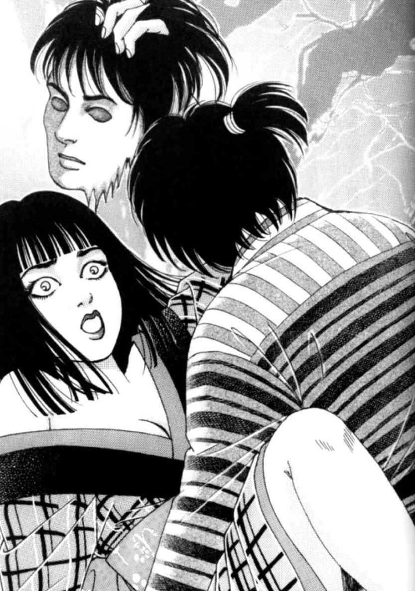
瓜子姫はすべてを一瞬にして悟りました。
そしてさまざまな感情が波のように押し寄せました。愛する者が殺された悲しみ、殺した者への怒り、今自分を襲っているあまのじゃくへの恐怖......。けれどとにかく今はこの場から逃れなければ......。
瓜子姫は必死で、手足をもがきました。けれど、源太の力ですらかなわなかったあまのじゃくの力には、とてもかなうはずなどありません。
相手が愛する者だと思えばこそすてきに思えた行為が、とても汚らわしく忌まわしく、うとましいものに思えました。
あまのじゃくは、分厚い唇を瓜子姫の体中にはわせ続けました。
瓜子姫は涙ながらに、むせるような草いきれの中に横たわっておりました。
愛する者もいない。もっとも憎むべき相手と無理にとはいえ、交わりも持ってしまった......。
おじいさんとおばあさんがすすめていた縁談を受け入れることも、愛する男といっしょになることもできないのです。なんだか、生きていたくはないような気さえしておりました。近くを流れる川のせせらぎが、瓜子姫を誘い込むように聞こえます。
やがて、草をかきわけ近づいてくる足音がしました。
あまのじゃくが戻ってきたのです。瓜子姫は、もう逃げる気力も残っていませんでした。
青草の間から、あまのじゃくがにゅっと顔を出しました。瓜子姫はうつろな目で、あまのじゃくを見つめました。
それは怒りや憎しみというより、むしろ侮辱の意を込めているかのようでした。
あまのじゃくは、粗末な自分の着物を持っておりました。
川原の泥土で汚れてしまった瓜子姫の着物の代わりにかけてやろうと思って、家に取りに帰ったのです。ゆがんではいたけれども、あまのじゃくは瓜子姫を愛しておりました。
その面ざしの醜さゆえ、いつのころからか本当の名前では呼ばれなくなり、村中の者から「あまのじゃく」といわれ、嫌われてきました。
娘だけでなく、男衆からも村八分にされていたあまのじゃくでしたが、村の若者がふざけて話していることを耳にしたことがありました。
「おい、いいからまずものにしちまえよ」
「女なんてのは、体の交わりを持っちまうと、ころりとまいるもんだぜ」
その言葉はあまのじゃくにとって、衝撃でした。
―女とはそういう生き物なのか。それならば、あの美しい瓜子姫を自分のものにすることもできるのではないか。
生い立ちと容貌で心根のねじまがっていたあまのじゃくの心の中で、悪が大きく育ちはじめました。
あまのじゃくは、朝な夕なに瓜子姫がひとりになる機会をうかがいました。
けれど、庄屋様の家への縁談話が持ち上がっている瓜子姫のこと。絶えずおじいさんかおばあさんが、娘を守るようにそばについていて、なかなか好機が訪れません。
たまに、ひとりになる時があれば、瓜子姫はそそくさと出かけて行き、村一番の好男子である源太と逢引をしています。
あまのじゃくはいつも物陰から、狂おしいほどの嫉妬に身を焼きながら、この様子を凝視していたのでした。
―あの男さえ、いなくなれば......。
やがて、その憎しみは揺るぎない殺意へと変わっていきました。
あまのじゃくはある日、瓜子姫のことで話があると源太に持ちかけ、だれにも内緒でこっそりと河原に呼び出しました。瓜子姫の庄屋様への家への嫁入りの話で、驚くようなねたを仕入れた、と嘘をついたのです。そうすれば、いくら嫌いな相手に呼ばれても、無視することはできない、と同じ恋をする者として、あまのじゃくはわかっていたからです。
ある日の夕刻、あまのじゃくは河原で自分を待っていた源太の背後からしのびより、鎌でひと突きにしました。
男は振り向きました。驚きを露にして見開かれたその目でさえ形の美しいことに、あまのじゃくはさらに憎しみをつのらせました。
そして、瓜子姫の心をとりこにしたその面を、傷つけないようにはがす時になって初めて、あまのじゃくは打ち震えるような恍惚を覚えました。
あとは、源太の顔のむかれた死体を見つからないように河原に埋め、瓜子姫がひとりになるのを心待ちにしておりました。
そして、時は意外にも早くきたのです。
あまのじゃくは、源太の面の皮を取り出すと、それを醜い自分の顔に張りつけて、瓜子姫のもとをおとずれたのでした。
瓜子姫への思いを遂げてから、あまのじゃくは瓜子姫の心も自分のものになるだろう、と思っていました。
想いを寄せる男も死に、体も汚れた今、瓜子姫が自分を好きになれば、瓜子姫の育ての親である、おじいさんもおばあさんも、しぶしぶとはいえ、自分との仲を認めるはずだ、と考えていたのです。
あまのじゃくは、いつになくやさしい気持ちになりました。
そして、瓜子姫の自分への視線が好意的なものに変わっていることを確信しながら、河原へと戻ったのです。
ところが、出迎えた瓜子姫の目は、うつろながらもはっきりとあまのじゃくを拒絶していました。
憎しみや憤りといった激しさよりも、そこには侮蔑の表情がありありと見て取れたのです。
はじめは憎しみが多少はあるかもしれない、という考えが頭をよぎったことはありましたが、侮蔑というのはまったく予想外でした。
汚れた瓜子姫のほうが蔑まれることはあっても、なぜ瓜子姫を征服した自分がそんな目で見られるはずがありましょう。
あまのじゃくは狼狽しました。
そして、村の若者たちの言葉を思い出しました。
「女なんて交わってしまえば、ころりとまいるもんだぜ」
そんな言葉が、笑いさざめきとともに蘇りました。
そして、あまのじゃくはふいに思い出しました。彼らは笑いながらこう続けたのです。
「よっぽど醜くないかぎりはな」
あまのじゃくの胸に激痛が走りました。
瓜子姫の侮蔑の視線とぶつかった今こそ、あまのじゃくは思い知らされました。
自分が人並みはずれて醜い男であったことを。
あまのじゃくは、皮膚がたるんで水かきのようになった両手で、瓜子姫の首を絞め上げました。
醜くかさついた自分の手と、汚れのない雪のような瓜子姫の首の対照が、自虐的な快感をもたらします。
「お願い、殺さないで。殺さないで......」
懇願する瓜子姫の言葉は、あまのじゃくの耳を素通りしていきました。
あまのじゃくは自分の手がしびれてもなお力を緩めませんでした。
そして気がついた時には、瓜子姫の細い首が、不自然な角度にまがっていました。
息が絶えていることは明らかです。
われに返ったあまのじゃくは、片頬をゆがめました。
それは泣いているような、笑っているような、なんとも判断のつかない顔でした。
―ここまでやっちまったんだ。どうせなら、とことんやってやろう。今さら謝ったってどうせ生きられるもんじゃないさ。
あまのじゃくは暗くなるのを待って、人目につかないように瓜子姫の死体をかついで帰りました。
そして、暗い納屋でぼんやりとした月の明かりだけを頼りに、愛おしい瓜子姫の顔の皮をよく研がれた包丁で、はいでいきました。
瓜子姫の家では、おじいさんとおばあさんが町から戻ってみると、大切な瓜子姫がいないので心配していました。
「だれか悪い者にさらわれたんではないでしょうか。庄屋様に相談して、探していただきましょう」
おばあさんがおろおろしながらいいました。
「いや、もう少し待ってみよう。何しろ嫁入り前の身だ。無事だった時に大騒ぎになってしまっては、縁談にもさしつかえる」
こうして、ふたりは落ち着かぬまま時折、外に出ては瓜子姫の姿を探しました。
しかし、夏の長い日が沈んでも、瓜子姫は帰りません。
「こうなっては、しかたがない。縁談よりも瓜子の身が先だ。庄屋様にお知らせしよう」
あがりかまちに腰かけていたおじいさんが、腰を浮かしかけたその時です。
「遅くなりました」
瓜子姫がうつむきがちに戸を開けて入ってきました。
両手には土なべを持っています。
「おお、瓜子姫や。いったいどこに行っていたんだ。わしとばあさんがどれだけ心配したことか」
「ごめんなさい、おじいさん。隣町のお稲さんが、小豆粥のつくり方を教えてくれるというものだから。思ったよりも手間がかかって、遅くなってしまいました」
「まったく、それならそうといいおいてくれればよいのに」
おじいさんは、安堵からついきつい口調で叱りました。
「まあまあ、おじいさん。瓜子姫も無事だったのだから。それに小豆粥のつくり方を覚えるのは、お嫁入りのためにもよいではありませんか」
おばあさんがとりなしました。
「本当にごめんなさい。悪気はなかったんです。これ、おふたりにぜひ食べてもらいたくて」
瓜子姫は、そういって土なべを差し出しました。
おばあさんがふたを取ると、もうっと温かい湯気が立ちのぼりました。
土なべの中は、赤い汁がひたひたとしていました。
おじいさんは、まだ不機嫌な顔をしていましたが、おばあさんが素知らぬふりで声をかけました。
「おじいさん、冷めないうちにいただきましょう。せっかくの瓜子姫の心づくしですから」
三人は、とにもかくにも食卓を囲みました。やがて、三人は夢中で箸を動かしました。
「ところで、瓜子。おまえ、風邪でもひいたんじゃないのか。声がしわがれているぞ。こんな時間までふらふらするからだ」
あまのじゃくは、ぎくりとしました。
「いえ、たいしたことはありません。さて、私は昼間さぼってしまった分、これから機を織らなければ」
あまのじゃくはそういって、そそくさと部屋を出ると機織りのある納戸へと入りました。ぼろが出ないよう、とにかく逃げてはみたものの、機など織ったことのないあまのじゃくは、まったくどうしてよいやらわかりません。
見よう見まねで、なんとか機を動かしてみました。
ギートンギーギートントン。
耳をおおいたくなるような不快な音が起こりました。
母屋では、おじいさんとおばあさんが、首をかしげていました。
「なんだか、いつもの音とはだいぶ違うようですねえ。やはりどこか体が悪いんでしょうか」
「もう少し様子を見て、それでもおかしいようなら、今日は機織りをやめさせ、早めに休ませよう」
そんな相談をしているところへ、戸をたたく者がありました。
戸を開けると、立っていたのは、村の若い衆でした。
男は息をはずませながら、老夫婦にたずねました。
「源太の姿がずっと見えないんだが、知らんかの」
「何、知るわけがなかろう」
「それでも、源太はおまえのところの瓜子姫と......」
「めったなことをいうな。瓜子姫は嫁入りがひかえているんだ」
「とにかく瓜子姫に、聞いてくれないか」
「いい加減にしろ」
おじいさんは怒って、戸を閉めてしまいました。
おじいさんとおばあさんは不安そうに顔を見合わせました。
納戸からは、相変わらず不興な音が響いています。
それを聞いているうちに、ふたりの胸のうちにも大きな不安が首をもたげてきました。
おじいさんもおばあさんも、納戸の瓜子姫のことを口に出さずにじっと固まっていました。
それからいっときほどたったころ、
どんどんどん。どんどん。
今度はもっと大きな音で戸をたたく者がありました。
戸の開くのが待てなかったのか、来訪者は返事も待たずにいきなり戸をがらりと開けました。
それは行方知れずの男が死体で見つかったという知らせでした。
「顔のない死体でな。河原の土に埋められておったんじゃ」
「な、何っ」
おじいさんは立ち上がりました。
おばあさんは手を口に当てて、がくがくと震えました。こうなっては、体裁がどうのとはいっておられません。
おじいさんは、毅然とした顔で納戸へと入って行きました。がくがくとひざを震わせたおばあさんも、村の若い衆に支えられながら後に続きました。
「瓜子姫や。ちょっと話を聞いておくれ」
瓜子姫はぱたり、と機を織る手を止めておじいさんを見ました。
「つい今さっき、源太がたいへんな姿で発見されたのじゃ。おまえは今日、源太と会っていたか」
「いいえ、今日はさっきお話したように、隣町へ行っていたから、あの方にはお会いしていません」
おじいさんは、ふうと息をもらしました。けれど、おばあさんはわなわなと体を震わせました。
女親の勘というものでしょうか。
あれほど好いていた男の話を聞いても、眉ひとつ動かさない瓜子姫におばあさんは、おかしなものを感じました。そして、ふと嫌な予感が胸をよぎりました。
「瓜子姫や、ちょっとこっちにおいで」
瓜子姫は機織りの椅子から腰を上げて、こちらに近づいてこようとしました。
その時、長い髪が機織り機に引っかかりました。
あまのじゃくはそのことに気づきませんでした。
二、三歩踏み出した時、長い髪に引っ張られて、瓜子姫の顔の皮がずるりとはがれ落ちました。
そこに現われたのは、血まみれになったあまのじゃくの顔でした。
「ひっ」
おばあさんは白目をむいて、気を失いました。
「やや、おまえは......。まさか、まさか、おまえは、うちの瓜子まで......」
正体がばれたことがわかると、あまのじゃくは開き直っていいました。
「そうさ、瓜子姫はさっきおまえらが粥にして食っちまったのさ。ひゃっ、ひゃっ、ひゃっ！」
怒りにわれを忘れたおじいさんは、あまのじゃくにつかみかかりました。
あまのじゃくも逆におじいさんに挑みましたが、後から駆けつけていた村の衆に取り押さえられてしまいました。
あまのじゃくは後ろ手に縛られて、村の衆の目の前に引き出されました。無数の憎悪に満ちた視線があまのじゃくの体に突き刺さります。
しかしあまのじゃくは、そのことになぜか深い満足を覚えていました。
「こいつをどうしてくれよう」
「もちろん生かしておくわけにはいかないさ」
「こいつに殺されたふたりと同じように顔の皮をはいでやろうぜ」
「やめておけ、そんな醜いつらが残るだけでも吐き気がする」
それまでせせら笑っていたあまのじゃくが、目の色を変えました。
「なんだと、もういっぺんいってみろ」
それを見た村の衆は、にわかに殺気立ちました。
口々にののしりながら、石をぶつけ、足であまのじゃくの体中を蹴りつけました。
肉をうつ鈍い音がしばらく続きました。
あまのじゃくは、鎌でズタズタに切り刻まれ、踏みにじられ、後には大量の血と、もとの姿もわからないちぎれた肉片だけが残りました。
化け物と呼ばれ、他の人間と同じようには一度も扱ってもらえなかった、あまのじゃくの体から流れる血も、他の人と同じように赤い色をしていました。
そのまっ赤なまっ赤な血は、そこに生えていた葦(あし)の根を赤く染めて、地面に吸い込まれ
ていきました。
この物語は、室町時代に書かれた『瓜姫物語』が起源だといわれている。
しかし、伝承する間に、語り手によって脚色されたのか、東日本と西日本とでは、大きく結末が異なるのが特徴だ。
ここで紹介した物語は、東日本のものをもとにしている。あまのじゃくが瓜子姫を殺し、その顔の皮をはがしてかぶる、という残酷さは西日本では見られない。西に伝わる話の多くは、あまのじゃくは瓜子姫の着物を着て、瓜子姫になりすますだけで、瓜子姫を殺しはしないのが一般的。木に縛られていた瓜子姫は、最後には救出されるのだ。
この違いはどうして出てきたのか。考えられるのは、西にくらべて気候の厳しい東日本では、穀物の生産も少なく、その貧しさゆえに、間引きや子殺しが頻繁に行われていたという社会背景だ。瓜子姫の結末は、現実に近いものに手を加えられ、変化していったのではないか。
それはあまのじゃくという存在にも表れている。悪者のイメージは共通しているものの、その度合いは地方によって異なる。
西ではただのよこしまないたずら者という意味合いが強いのにくらべ、東に行くほどその凶暴性は増し、東北では人を食い殺す恐ろしい存在として語られることが多い。 ところが不思議なことに、最後にあまのじゃくが受ける制裁は、東よりも西のほうが残酷度が高いのだ。
当時の農村は共同体としての結びつきが強く、とても排他的だった。それは、だれかが罪を犯せば連帯責任をとらされる社会制度の結果でもあろうし、また近所同士で助け合わねば、やっていけない生活の厳しさのせいともいえよう。
だから、法規を乱す者や見なれない者（よそ者）は、要注意とされた。あまのじゃくとは、妖怪や鬼といった超自然的な存在ではなく、こういう人物を暗に指していたのではなかったか。
また、異性への瓜子姫の好奇心の強さも、悲劇に一役買っている。道徳の厳しい時代にあって、男と密会するような娘であった瓜子姫だからこそ、はみだし者のあまのじゃくにだまされ、河原について行ったのだから。
トメはうろうろと、隣の家のまわりを歩きまわっていました。
「ちっ、あいつらいったいこんな時間からそろいもそろってどこに行っちまったんだい」
トメはもともと黒いのか、垢がたまっているのか、黒くくすんだ肌に、切り込みを入れたような細い目をつり上げて、舌打ちしました。顔のまん中でどんとあぐらをかいている鼻に大粒の汗が浮いています。垢でてらてらと光る着物の襟にも、汗がじっとりとしみ込んで、茶色いしみをつくっています。トメは、三十にはまだ間がある女ざかりであるはずなのに、十も年をとっているように見えました。
トメは気晴らしに隣の家にやってはきたものの、この家の親子の姿が見えないので、いらいらが抑えきれず、とうとう勝手に戸を開けてみることにしました。
「邪魔するよ」
そういいながら、だれか見ている者がないか、あたりに目を配るのを忘れていませんでした。
家の中は、トメの家と変わらぬ狭さ古さながら、いつもと同じように、あるべき物がきちんとあるべきところに片づけられ、こざっぱりと掃除されておりました。囲炉裏のそばには、ぼろぼろになった人形が置いてあるのが目につきます。この家の五歳になる娘、はなの物です。トメはそれを拾い上げると、じっと見つめました。人形の着物の柄は、トメの見たことのある物でした。おそらくセツが古い着物をほどいてつくってやったのでしょう。
「ふん、なんだい、こんなぼろ人形」
トメは、人形を堅い板敷きにたたきつけると、戸口を出て今度は、裏庭にまわりました。そこには、清吉がつくった頑丈な物干しがあり、大きな布団が一組と小さな布団が一組干されて、やわらかい太陽の陽ざしをいっぱいに吸い込んでいました。
これを見ると、さらにトメの嫉妬の炎がいっそう強く燃え上がりました。またその布団はトメに、昨夜のぞき見た光景を思い出させました。
昨夜のことです。このところすっかり夜の営みが疎遠になってしまった亭主の五助は、短くごわごわと毛の生えた手足を薄い布団から突き出して、先にぐうぐう眠りこけていました。トメは、顔にはあばたが浮き上がり、だらしなく開いたぶあつい唇を、よだれでぬめぬめと光らせている五助を見下ろすとつぶやきました。
「まったくこいつときたら、おつむも弱いし、醜いし。取り柄といったらあっちのほうだけだったのによ。ここんとこ、すっかりご無沙汰じゃないか」
そして身をもてあまして起き出しました。いつもならこの時間は、まだ隣の夫婦は、夜なべ仕事で起きているはずです。簡単に身づくろいをして、隣家の戸に手をかけようとした時、トメははっと身を固くして、動きを止めました。そしてそっと戸に耳を当てました。しかし物音が聞こえなかったのかそこから離れ、足音を忍ばせると、この家のまわりを歩きました。やがて、壁に破れ目のある場所を見つけると、そこに目を当てました。はじめは薄暗がりの中で、もぞもぞと何かが動く気配しかしませんでしたが、そのうち目が暗闇に慣れてくると、そこには仰向けになったセツの白い裸体が浮かび上がりました。普段、着物を着ている時にはきゃしゃに見えていたのに、セツのむき出しの胸は、熟れるように豊満でした。そしてそこから見事な曲線を描いてくびれたセツの腰に手をあて、ふたつの果実を清吉のもう片方の手と唇が、やさしく激しく愛撫するのでした。
明かり取りの窓からもれてくる月明かりに、ぼうっと照らし出されたセツの白い顔には、なんともいえない、恍惚の表情が浮かび上がり、その唇からは、それまでトメが聞いたことのないようなセツのせつなげなあえぎ声がもれておりました。時おり、清吉がセツに何かささやきかけるように、セツの耳もとに唇を寄せると、セツの顔に幸せそうな、そして満足そうな笑みが浮かぶのでした。
やがて、清吉の手がセツの体をまさぐりながら、だんだん下へと降りていき、そこで律動しはじめると、セツのあえぎ声はだんだん高まっていきました。そして、それに誘われたかのように、清吉がセツに覆いかぶさりました。
トメはその一部始終をしっかり見てしまったのでした。
むつみあう夫婦の隣では、はなが微笑を浮かべた表情ですやすやと眠っておりました。セツの声がもし聞こえなければ、はなの安らかな寝息が聞こえたことでしょう。
夫婦として当然のこの営みに対して、トメには関係のない他家のこととはいえ、激しい憎しみをトメは覚えたのです。
「おもしろくないったらありゃしない。なんでこいつらばっかり......」
さて、トメがいらいらしながら留守にしている隣家を物色していたちょうどそのころ―。
当の親子三人は、山道を歩いておりました。
「はな、そんなに急ぐと疲れちまって、てっぺんまでたどりつけねえぞ」
清吉が娘のはなに呼びかけました。清吉の浅黒く日焼けした顔から白い歯がきらりとのぞきました。はなは振り返って、そんなおっとうの笑顔を見ると、これもまた満面に笑みを返して走り出しました。そして、少し行っては振り返って、おっとうとおっかあが仲よく、肩を並べて追いついてくるのを待つのでした。
「はなは山に登るのは初めてだっちゅうに、まるで道を知っていて、おれたちを案内してるみてえだな」
汗をふきふき清吉が女房のセツにいいました。年のころは二十歳をひとつふたつ出たばかりのセツは、化粧っけもないながら、この土地の女には珍しく抜けるような白い頬に、ほんのりと紅をはいたような赤みがさし、それはもう人目をひかずにはいられない美しさなのでした。
「本当に不思議な子ですねえ」
その日、親子は山に冬を越すための薪を採りにきたのでした。はじめは清吉がひとりで山に入る予定でしたが、聞きわけのよいはなには珍しく、足をばたつかせて自分も行くといってだだをこねます。そこで、夫婦は秋の収穫の後の休養も兼ねて、三人で山に入ることにしました。
今なら、きれいな赤や黄色の錦のような紅葉が山を彩っています。そんな景色をはなにも見せてやりたい、と思ったのです。もし、途中ではながぐずるようなら、セツがはなを連れて山を下りればいい、夫婦はそう話し合い、子づれで山へと出かけてきたのでした。 しかし、清吉が心配したほどのこともなく、はなはいつも清吉が薪を採る場所までへこたれずに登り切ってしまいました。あたり一面、まるで朱を散らしたようにまっ赤で、清吉がはなに見せてやりたいと願っていた風景が広がっていました。
「どうれ、はな、ひと休みするか」
清吉は持ってきた竹筒の水でのどをうるおしました。そして、しばらく休んだ後、仕事にかかろうと腰を上げました。するとはながいいました。
「おっとう今日は薪を採らんほうがええ。そのかごには入りきらん」
清吉とセツは顔を見合わせました。
「入りきらんてどういうことね。かごの中はからっぽじゃよ」
母親のセツが首をかしげてたずねると、はなはにっこり笑って、ふたりの後ろのほうを指差しました。
ふたりが振り向くと、りっぱな角を持った見たこともないような大きな牡鹿が、木々の間から顔をのぞかせていました。
「こっちさこー、こっちさこー」
はなが歌うようにそう呼びかけました。するとその牡鹿はまるで魅入られたようにゆっくりとした足取りで親子のほうへと近づいてきて、清吉の足もとに座りました。そして、殺してくれとでもいうように、そのしなやかに伸びた首を清吉のほうへと差し出したのです。
清吉は持ってきた鉈で牡鹿の首を打ちました。そしてまもなく眠るように息の絶えた牡鹿を背負いました。ところがいざ山を下りようとすると、はながぐずり出しました。
「足が痛いよう。おっとうおんぶしておくれよう」
「おっとうが背負ったら重すぎるで、おっかあの背中にお乗り」
そういってセツが腰をかがめましたがききません。子煩悩な清吉はぐずるはなを、片手で軽々と抱き上げました。はなは小さな手でおっとうの着物を握りました。
「あんた、大丈夫？」
女房のセツが亭主を気づかいました。
「なあに、はなはまだまだ軽すぎるくらいじゃ。もっともっとたあんと食べて大っきくならにゃあいかんぞ、はな」
親子は笑いさざめきながら、山道をたどるのでした。
その日、終始、不機嫌だったトメは、隣家の親子が家に戻った気配を感じると、さっそく家を飛び出して、隣家にかけ込みました。「火を貸してくれ」と、いつもと同じ口実でがらりと戸を開けると、なんともいえない、いいにおいがトメの鼻をつきました。隣家ではこの日、獲ってきた牡鹿で鹿汁をたくさんつくって、囲炉裏を囲んでいるところでした。
いつもはトメを鬱陶しいと思う夫婦でしたが、この夜はふたりとも上機嫌だったので、どちらからともなく、昼間の出来事をトメに話しました。いつもは子どもの生まれないトメの気持ちを思いやって、子どもの話をなんとなくひかえている女房のセツも、そんなことには気がまわらず、娘自慢をしてしまう亭主の清吉も、かわるがわる昼間の話をするのでした。トメは話を聞くと、自分がこの夫婦に憎しみを感じていたのも忘れ、猫なで声でいいました。
「ほう、そんなにすごい力があるなら、明日一日はなを貸しておくれよ。わしもうまい鹿汁が食いたい。五助はうすのろだが力はあるから、はなを連れて行けば、鹿を獲って帰るだろう」
ふたりは、今日一日山を歩きまわったので、はなは疲れているから無理だと断りました。
しかし、トメは食い下がりました。
「心配いらねえ。五肋にかごをしょわせて、行きも帰りも乗せてってやる」
夫婦は、それでもはなを貸したくはなかったのですが、断る理由も見つからず、しぶしぶ承諾しました。
「その代わり、くれぐれもはなには無理をさせないでおくれ」
翌朝、はなは出かける時になって、ふたりのほうをくるりと振り向くと、にっこりと笑いました。いつもと変わらないその笑顔が、ふたりの脳裏に後日、何度もくり返し浮かび上がってくることになることを、夫婦はどちらも気づいていませんでした。
五助は見送る清吉とセツから見えないところまでくると、はなを下ろし、怖い形相になり、はなに自分で歩くように命じました。おまけに、たった五歳の子に鍬の入ったかごを背負わせました。はなはふらふらする足取りで、懸命に山を上りました。途中で少しでも休もうとすると、五助がこづいたり蹴ったりしました。
はなはおびえました。五助がいつもの五助と違うからです。五助は頭が弱いなりに、そういった勘は働くのでしょう。自分より強い者に対しては、おとなしく従順でしたが、相手が自分より弱いとみると、突然豹変するのです。
はなは、おっとうやおっかあといっしょの時はあんなに足も軽かったのに、五助といっしょだとなぜこんなにつらいのだろうと思いながら、小さな足でふんばり山道を進みました。かごのひもが小さな肩にくい込み、足のまめがつぶれましたが、なんとか歩きとおしました。
はなは昨日の場所まで着くと、肩からかごを下ろし、草の上に寝転がりました。そしてはあはあと大きく息を吸い込みました。疲れた時はそうすると疲れが早く逃げていく、とおっとうが教えてくれたことがあったのです。
―息がもとに戻ったら早く鹿をつかまえてしまおう、そうすれば、早くお家に帰れる。でも、帰りは鹿まで背負わされるのだろうか。
五助は、手ぶらで歩いてきたので、少しも疲れていませんでした。かたわらに寝そべっているはなを見下ろしました。そこには、トメの薄汚れた黒くて、がさがさとした肌とは違う、白いすべすべした体が息づいています。五助はこれを見ると、体の芯からもやもやとしたものが込み上げてくるのでした。そして、鹿のことなど忘れ、夢中で小さな小さな少女の上にのしかかっていったのです。
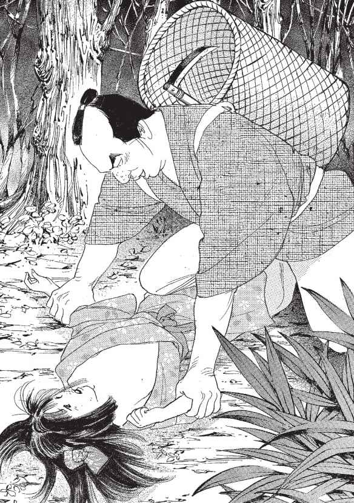
「おっとうにいいつけてやるから」
はなはまっ赤に泣き腫らした目で、きっと五助をにらむと、そういいました。すでに欲望をとげて落ち着いていた五助は狼狽しました。少し智恵の足りないところのあった五助は、自分よりも弱い者には何をしても大丈夫だと思っていました。「いいつけられる」という考えはそれまでまったく浮かばなかったのです。しかし、はなにそういわれて清吉の怒った顔を思い出しました。すると急に怖くなりました。
―いいつけさせるもんか。いいつけさせるもんか。
五助は気がつくとはなの首を力いっぱい絞めていました。はなはあっという間にぐったりとしてしまいました。五助は、はなの小さな体を抱えると、少し斜面になっている場所に放り込み、一目散に山を下りました。
清吉とセツは日暮れが近づくと、五助と出かけたまま帰らないわが子を心配して、かわるがわる家の外に出ては、山のほうを眺めておりました。
「はなは大丈夫かのう、やっぱり五助に貸したのはまちがいじゃったんじゃないかのう」
「なに、五助は頭は弱いがトメとは違っておとなしい。大丈夫、今にきっと帰ってくる」
清吉は自分にいい聞かせるようにいいました。
やがて山のほうに人らしい黒い影が見えてきました。
「あんた、帰ってきたよ」
「そら、わしのいったとおりだろう」
しかし、人影が近づくにつれてふたりの不安は高まっていきました。なぜなら、ふたつあるはずの人影がひとつしか見えなかったからです。その人影は村の入り口までくると、ふたりが待っている小道とは反対の方角に折れていってしまいました。
「あれ、あれは五助ではなかったのか？」
ふたりの胸にえもいわれぬ不安が渦巻きはじめました。
「あんた、はなは帰してきたのかい？」
土間でわらじを脱いでいる五助に向かって、トメが聞きました。期待していた鹿を五助が獲ってこなかったので、トメはたいそう不機嫌でした。
「はなは死んだ」
五助はぼそっとつぶやきました。トメは驚いて、五助を問いただしました。五助の話は要領を得なかったものの、質問を重ねていくと、トメは五助がいたずらしたうえ殺してしまったことを知りました。
「あんたなんてことをしてくれたんだい。そんなことが知れたら、わしまで処罰されちまうよ」
トメは怒りました。そこに血相を変えた清吉がやってきました。
「おい、五助は帰ってるのか、はなはどこだ？」
五助はおびえて頭を抱え、隅にうずくまりました。さっきまで五助を叱っていたトメが間に入りました。ここは五助を叱るのを後まわしにして、なんとか保身のために、しらばっくれなければいけません。
「はなは鹿を呼ぶどころか、気味の悪いへびばかり呼ぶので怒ったら、ふてくされて、ぷいといなくなっちまったんだとさ。悪いのは、はなのほうだよ。母親はちゃんとしつけをしないのかね」
清吉は顔面を蒼白にしてこぶしを握りしめました。不安な思いが適中しそうな予感がしました。怒りで体中がわなわなと震えます。しかし、今はここで怒っているよりもはなを探すほうが先だ、と考えて急いで家に戻りました。
清吉とセツのふたりはまんじりともせずに夜を明かすと、まだ暗いうちから山へわが子を探しに出かけました。名前を呼びながら、先日親子三人で楽しく登ったその同じ道を、不安を抱えながらたどりました。やがて鹿を捕えた山の奥地までたどり着きました。
「はなあっ、はなあっ」
ふたりは声の限り叫びましたが、叫んだ自分の声がこだまとなって、むなしく返ってくるばかりです。どれほどそうしていたでしょうか。
「あ、あんた、あれ......」
セツが清吉の背中に倒れかかるようにしていいました。震えるその指が差すほうへ、清吉が視線を向けると、小さな小さなぞうりが片方、転がっているのが見えました。
「あ、あれは......」
清吉がかけ寄って拾い上げると、それはまぎれもなくはなのものでした。しばらく前に、清吉が自分の手で編んでやったぞうりです。セツの古い着物を裂いて、鼻緒のところに赤い色の飾りをつけてやると、はなは飛び上がらんばかりに喜んだぞうりでした。
そのぞうりの転がっていた場所から、少し離れたところに小さな白い足が見えました。
「はなっ」
清吉は草木が肌を切るのもかまわず、夢中でそばにかけ寄りました。はなは枯葉の積み重なった上にうつぶせに倒れていました。小さな着物のすそがもものあたりまでめくれ上がっていて、露出した白い足がとても寒そうに見えました。清吉ははなを抱き起こしてくるりと仰向けにすると、ひいっと声にならない叫び声を上げました。
首に青々としたあざが残っていたのです。
後から急いで追いついてきたセツは、清吉の後ろからそのさまをのぞき込むと、気を失って倒れ込みました。清吉ははなの変わり果てた遺体を抱き締めて号泣しました。
ふたりはその足で村の庄屋様のところに出かけ、そしてはなのことを洗いざらい話し、五助とトメの夫婦に罰を与えてもらおうと思いました。
「そうでなきゃ、はながうかばれねえ」
しかし、はじめははなの死んだことに驚いてともに嘆いてくれた庄屋様も、話が五助たちを罰するということに及ぶと、突然歯切れが悪くなりました。
「いや、罰するといっても、のう......。五助が本当にはなを殺したかどうかもわからんし......。はなと五助は山の中ではぐれて、はなが足を滑らせただけかもしれん」
「足を滑らせただけで、あんな青黒いあざが首につくというのですか」
「いや......。足をすべらせた拍子に山芋のつるか何かに首が絡まってしまったのでは......」
はなが死んでいたあたりにはそんなものはなかった、といくら説明しても、庄屋は煮え切らぬ態度を崩しませんでした。
「なあ、清吉どん、気持ちはわかるがおまえたちは隣同士だし、今までもいろいろと助け合ってきたじゃろ。今後のためにも、どうか今回だけはわしに免じてこらえておくれ」
清吉とセツは納得の行かぬまま、庄屋様の屋敷を後にしました。
「きっとあのうわさは本当なのじゃ。五助は、庄屋様がどこかで生ませてしまった隠し子だという......。だから本当は、はなが五助に殺されたのだろうと思っても、五助を罰さないのだ。これでは人殺しの五助は野放しではないか......」
清吉の目は血走っていました。
「あんた......」
はなが死んでから、魂が抜けたように黙りこくっていたセツが、初めて不安そうな顔で清吉に呼びかけました。
いっときは五助の不始末に、なりをひそめていたトメも、あれ以来清吉とセツの夫婦から何もいってこないので、だんだん気がゆるんでいきました。そしてしばらくするとすっかりほとぼりが冷めたつもりになりました。
―はじめはまずいと思ったけれど、こうなってみると、かえっていいざまではないかね。
あんまり自分たちの幸せを見せつけるようなまねばかりするからさ。天罰だよ。
そして性懲りもなく、このふたりの家のまわりをうろつきはじめました。やがてふたりに拒絶されないのをいいことに、毎晩のように隣家を訪れるようになりました。清吉とセツは娘を失った悲しみの色は隠せないものの、以前と同じようにトメに接しておりました。
今度の一件をうすうすと勘づいて、清吉夫婦に同情しながら、遠巻きに見ていた村人たちは、そんな清吉たちを見て、不思議に思いました。
「あれ、清吉さんたちの怒りは解けたのかのお」
「五助は庄屋様の息子じゃというしなあ......。たとえ娘の仇とはいえ目をつぶらないことには、この村で生きては行けないんじゃろうかのう。気の毒よのう」
ある夜、トメが訪ねて行くと、清吉夫婦はうまそうな米やら魚やらの夕餉を食べていま
した。
「その臼でもちをついてみたらな、米やら魚やらがざっくざっくと出てくるんじゃ。はなの墓の近くにあった木からつくった臼だけに、はなが出してくれるんじゃろ。あの子は生きとる時から不思議な子じゃったからのお」
トメは清吉夫婦にとって不幸を呼んだはずのはなの死が、意外な利益をもたらしていることに驚きました。トメには、はなが生きてむだ飯を食うよりも、ふたりにとっては幸せな結果になってしまったようにさえ思いました。
しかし、臼を借りて帰れば、自分たちもそのわけ前にあずかれるというものです。トメはさっそくその臼を借りてくると、五助にもちをつかせました。しかし、貴重なもち米を炊き上げてその臼に入れ、五助が力いっぱいついたところ、臼が割れて中から馬糞やら牛糞やら汚いものがぱっと飛び散って、せっかくのもちまでも台無しにしてしまいました。五助は怒って、その臼を叩き割ると、囲炉裏にくべて燃やしてしまいました。翌日その臼を取りにきた清吉は残念そうな顔をしていいました。
「これははなの形見だったんじゃが、しかたないのお。なら、せめてこの灰をもらっていこう」
ある夜、トメがまた清吉夫婦の家に入って行くと、ふたりがぐつぐつと煮えるうまそうな雁なべを突ついておりました。そして壁には雁の首がずらりと並んでぶら下がっているではありませんか。
「あれ、そんなにたくさんの雁をどうしたのじゃ」
トメが聞くと、清吉が答えました。
「この雁はな、はなの形見の臼を燃やした灰を使うといくらでも獲れよる。そうじゃ、明日わしが行って、取り方を教えてやるから、五助といっしょに待っとれ」
トメは大喜びでした。そしてしゃあしゃあとふたりに向かっていい放ちました。
「はなは生きてるより死んだほうが役に立つではないかね」
翌日、約束どおり清吉がやってきました。手持ちの桶には灰がいっぱい入っていました。
清吉は五助とトメにいいました。
「五助はな、なるたけ高い木の上に上って、空に向かってこの灰を撒くんじゃ。雁の目さ入れ、入れって念じながらな。そうすると、この灰が空を飛んでる雁の目さ入って、おもしれえように雁がばたばたと落ちてくる。そしたら、トメの出番だ。この鉈を持って木の下で雁の落ちてくるのを待つんじゃ。そうして、雁が落ちてきたら、すぐに首根っこを刈ることじゃ。そうしないと雁がしばらくするとすぐ飛んでいってしまうのでな」
三人は村の外れにある大木のところまでやってきました。そして五助は清吉にいわれたとおりにしました。五助は灰を高く高く撒きました。落ちてきた灰が自分の目に入りました。下で待っているトメの目にも入りました。
「痛いよ、痛いよ、清吉どん。灰が目に入るよ」
ふたりは口々に叫びました。
「うまい物を食うにはちっとくらい辛抱せい。目が見えなくとも大丈夫だ。わしがころ合いを見て声をかけてやる」
五助は目の痛みをこらえながら、灰をまた放り投げました。清吉はふたりの風上に立って空を見ていました。空には雁どころか一羽のカラスさえ飛んではいませんでした。
「それっ、今だ、五助、灰を撒け、撒け。雁がたくさん飛んでくるぞ」
灰はまた五助とトメの目に入りました。視界を失った五助の体がぐらりと揺れ、平衡を保つことができなくて、どすうんと地面に落ちました。清吉はトメに声をかけました。
「それっ。雁が落ちたぞ。トメ、首を刈れ」
トメは急いで鉈を降り下ろしました。
「まだまだ切れてないぞ。もっと切れ、もっと切れ」
そばで清吉が声をかけました、トメは必死に鉈を振り続けました。最後に鉈の先ががつんと固い地面にぶちあたる手ごたえがしました。
「ふ、とうとう、刈り落としたぞ」
と清吉がいう声が聞こえました。トメは灰でまだ見えない目をこすりながらいいました。
「そんなにたくさん獲れたのかい」
一瞬の沈黙があって、清吉がいいました。
「ああ、たくさんの血が流れているよ」
やっと灰が涙で流れてあたりがぼんやりと映りはじめました。清吉のきっとつり上がった瞳が、ひたとトメをとらえていました。トメは満面に笑みを浮かべました。
「さあ、あたしの獲物を見せておくれ」
「足もとに転がってるよ」
トメはこぼれる笑みを抑えきれぬまま、地面に目を移しました。そして、そのまま笑みが凍りつきました。足もとに転がっていたのは、雁などではなく、首のないずんぐりとした胴体と、少し離れたところにある、驚いたまま目を見開いた五助の頭だったのです。
「あんた！ 清吉め、騙しやがったな」
いくらずんぐりでも、おつむが弱くても、たったひとりのトメの味方であった五助の首を自ら切ってしまったのです。五助の頭をなくした胴体の端は、ささくれたようになっていて、トメが何度も何度も蛇を降り下ろした形跡がはっきりと残っていました。
「覚えといで。五助を殺したのは、あんただっていいふらしてやるから。はなが死んで気がふれたんだって」
清吉が落ち着き払って、ゆっくりとした口調でいいました。
「さあ、それはどうかな。あんなに生き証人がいちゃあなあ」
トメは驚いてくるりと後ろを向きました。
村の知った顔がいくつもそろって遠巻きに眺めていました。その中に能面のように表情のないセツの顔もありました。ただただ狼狽している様子の庄屋の顔もありました。みなこわばった顔でトメをにらんでいました。トメの顔からさっと血の気が引きました。
「ちくしょう、罠にはめられた！」
清吉とセツは、はなの墓に手を合わせました。
「はな、これで成仏しておくれ」
あの日、庄屋の屋敷を出たふたりは、このままではおさまりがつかない気持ちでした。小さなはなの体には、首の青黒い傷の他に、五助にいたずらを受けた傷があったのです。
ふたりは五助が裁かれないと知った時、自分たちの手で制裁を加えることに決めました。
そこで、時間をかけじっくりと策を練ったのです。
はなは勘の鋭い子でしたが、人智を超えるような力を持っていたわけではありませんでした。臼から米や魚が飛び出したとか、灰で雁を落としたというのは、すべてつくりごとでした。米や魚、雁の肉などを清吉がわざわざ町で買ってきました。臼にはあらかじめ馬糞や牛糞をつめた上に薄い板をしいておき、杵でついた時にこの板が割れて、あたりに飛び散るように細工しておきました。
トメと五助をうまく罠にかけるために、はなが死んで以来、ふたりのまわりに不思議な出来事が起こる、とトメに信じ込ませたのです。
こうした下準備のために、ふたりははなが嫁入りする日のためにと思って、爪に火をともすようにしてためていた金をすべて使い果たしていました。ふたりとも少しも惜しくはありませんでした。
五助が死んだ後、不思議なことに、はなが埋葬されている墓のすぐそばの、もう長いこと枯れ木と思われていた桜の木が、季節外れに満開の花を咲かせました。その木は、五助が雁を獲るために登った木でもありました。
その桜の花びらは、それまで人々が見たこともない、赤に近いほど濃い色をしておりました。まるで、地面にしみ込んだ五助の血を吸ったかのように......。
『花咲かじい』には、『雁取りじい』という類話がある。ラストで枯れ木に花を咲かせる代わりに、灰を撒いて雁を獲るというものだ。この時、目の中に灰が入って落ちてきた爺の首を、下で待ち受けていた婆が切ってしまう。婆はそうとは知らずに爺汁を煮て食ってしまい、くにゃくにゃとしてかみ切れない耳を吐き出して初めて、爺を殺してしまったことに気づくのだ。
このふたつはもとは同じひとつの物語だったと考えられる。ただ『花咲かじい』は早くから童話化されているので（江戸時代に赤本で流布）、統一された形で全国的に広まっているのに対し、『雁取りじい』は口承で伝えられたため、詳細にばらつきがあり、主に東北と九州に分布している。
さて、川から流れてきた桃や木の根、竹などから生まれた犬が不思議な能力を発揮して爺婆に幸せをもたらす『花咲かじい』の類語は、ヨーロッパには見られないもので、日本をはじめ、中国や朝鮮など、東アジアで語り伝えられてきた。これは東南アジアの国々では、犬が水神としての性格を持っているという考え方があるせいだろう。
この類話の中で、もっとも日本らしい特徴が、最後に花が咲くというモチーフだ。実は、この花を桜だと明記している本は意外に少ないのだが、今や日本ではそれが桜として定着している。それは、日本人の美意識と関係しているのだろう。春になるとぱあっと一面、薄ピンクの花が咲くあのイメージが、日本人の美意識に訴えて、これほど国民的な童話になったのかもしれない。他国でも枯れ木に花のモチーフがないわけではないが、これが中国では、牡丹や芍薬になる。
また、悪い爺婆の結末で、おもしろくも恐ろしいものがあるので紹介しておこう。隣の爺をまねて灰を撒いた爺が、褒美をもらってくるのを今か今かと侍ら構えていた婆は、やがて赤い着物を着て帰ってくる爺を見つける。
「ああ、爺さんがご褒美の赤いべべ着て帰ってきた」と喜んだが、爺は殿様や家来の目に灰を入れた罰で、殴られ蹴られ、着物が血でまっ赤に染まっていたのだ。
さて、この昔話を、一度現実と照らし合わせて考えてみよう。わが子のようにかわいがっていた犬を殺され、さらにその形見も焼かれ、はたして人は何ごともなかったように許せるものだろうか。昔話では、因果応報のように、
悪い爺婆に自然と天罰が下っているが、そこまで行きつく過程で、よい爺と婆は本当に、恨みや怒りを覚えなかったのだろうか。生身の人間なら、いくらお人好しでも、心から許せるはずはない。
本話のように、登場人物に感情を与え、再構築した物語によって初めて、本来のストーリーの裏に浮かび上がる、人間の複雑な心理を読み取ることができるのではないだろうか。
そろそろ夜が明けはじめ、どこかで遠く鶏の鳴き声が響いていました。
狭い廃屋の隅では、お千代が両腕で自分の体を抱きかかえ、ガタガタと体を震わせていました。殴られた頬の傷は痛々しく、ぽってりとした丸い足先からは血がだらだらと流れていました。お千代は破り捨てられた着物を引き寄せると、うつろな目つきで空を見つめていました。
（なぜこんなことになってしまったの......）
お千代は父のあの真剣な表情を思い出していました。
―お千代、余計なことは一切しゃべるでないぞ。
あれが父の最期の言葉でした。
あの日以来、お千代の頭の中には父のその言葉がこびりついて離れませんでした。
お千代の父、嘉六は、おしゃべり好きの気のいい男でした。嘉六のおしゃべりの話題はもっぱら十六歳になったばかりの娘、お千代のことで、年々増して行くその容姿の美しさが最大の自慢の種でした。
「お千代はかぐや姫にも負けない美しさだ」
「おっとりとした物腰はお屋敷のお姫様にも劣らない」
「これほど思いやりのあるやさしい娘はどこを探してもおらん」
と、村人をつかまえてはとくとくと聞かせるのでした。
確かにお千代の美しさは、貧しいこの村に不釣合いなほどきわだち、輝いていました。
その肌の美しさ、しっとりと濡れた黒い瞳、ふっくらとした白い腕や足は、古びた小袖を身につけていても、日々の野良仕事で泥にまみれていても、そのなまめかしさを損なうことはありませんでした。
村の男たちは、こっそりとお千代の姿を盗み見ては、あらぬ妄想をふくらませ、そのやわらかな体を抱きしめたい衝動にかられては、昂ぶった股間をひとりで慰(なぐさ)めるのでした。
ですから嘉六の自慢話に反感を抱く者はありませんでした。だれもがお千代の美しさは認めるところだったのです。
しかしただひとつ、村の者が聞き捨てならない嘉六の言葉がありました。
―お千代は庄屋様の息子の嫁にと声がかかっておるんじゃ。あれはおらを貧しい生活から救い出す天女じゃ。
村人たちにとって、それはおもしろくない話でした。
同じ冷や飯を食らっている貧相な小男が、美しい娘によって、贅沢な暮らしを手に入れようとしている―それは特に若い男たちの妬みと怒りをいたずらに煽りました。
―おまえだけこの貧しさから抜け出せると思っているのか！
男たちは心の底でそう叫んでいました。
みなが等しく貧しいのなら、それはそれで苦しみにも堪えられようというもの。
しかし、そこからひとり抜け出そうとする者があれば、寄ってたかって引きずり下ろす、それは貧しい村の悲しい現実でした。
嘉六のそんな夢物語が、自分の死んだ後まで娘を苦しめることになろうとは、だれも知るよしもないことでした。
当時、村人たちは苦しい生活を強いられていました。
川の近くに位置するこの村は、水に恵まれ、作物がよく育つ反面、長雨のたびに川の氾濫に遭っていたのです。
川の氾濫は民家や人々を流し去り、農作物を腐らせ、疫病をはやらせました。
村には子どもや年寄りの死体があふれ出し、その腐乱臭が風にのってあたりに漂いました。それはまるで地獄さながらの光景でした。
それでも年貢の取り立てが緩むことはなく、自分たちの食いぶちもままならぬ状況で、村人たちは毎年のように庄屋から借金を重ねる悪循環を続けていました。
川は豊かな生命の源であるはずが、村にとってはその元凶となっていたのです。
しかし村人たちは、ただひたすら神仏に祈り、疫病神を祀(まつ)ることぐらいしかできませんでした。人々は自然の脅威のもとにひれ伏すばかりだったのです。
それでも村人たちは、なんとか洪水を防ぐ堤(つつみ)をつくろうと努力しました。
しかし土木技術の発達していなかった当時、村人たちのつくる堤といえば粗末なものばかりで、川の氾濫を防ぐことはおろか、建設も途中で流されるなど、完成させることもままならぬほどだったのです。
もうすぐ稲も収穫というある秋のことです。
夏の忘れ物のような大きな台風が村を襲いました。くる日もくる日も、暴風雨が吹きすさび、村のそばを流れる川は、ごうごうとうなりを上げています。
このまま降り続けば、昨年村でつくった堤はぷっつりと切れ、泥まじりの大水がものすごい勢いで村に流れ込むのは、火を見るより明らかでした。
激しい雨が降りしきる晩、村の男衆は寄り合いを開き、話し合いを持つことになりました。深いしわを顔に刻んだ長老は、渋い顔をして重い口を開きました。
「わしらの生活を苦しめる川の氾濫はなんとしても食い止めねばならん。しかしわしらがつくった堤は、毎年のように洪水であっという間に押し流されてしまう。なんとかして、140
しっかりとした堤をつくる手立てはないものか」
さまざまな意見が出されましたが、みなが納得する解決法はなかなか見つかりません。
そんななか、嘉六は珍しく押し黙ったままいらいらしていました。
（早く話し合いが終わらぬものか）
その日はお千代の母親の命日でした。
朝からお千代は母親の話を嘉六にせがみました。母親が死んだのはお千代がまだ三つのころで、母親の記憶がほとんどないお千代を、嘉六は不憫に思っていました。
男たちの真剣な話し合いにも、どこか上の空で落ち着かない様子の嘉六に、長老が声をかけました。
「嘉六、おまえは普段からよくしゃべる男だが、今夜はどうした。何かいわぬか」
突然、自分に話がふられて、嘉六はあせってまごつきました。
（そういえば......）
嘉六はずいぶん前に町に出かけた時に出会った僧侶の話を思い出しました。あの僧侶はずいぶん徳の高そうなじいさんだったな......。
「おらが町に行った時に出会った僧侶から聞いた話なんじゃが、堤や橋を丈夫にするには人柱を立てるのが一番ということらしいぞ」
嘉六はあまり深くは考えず、ただ早く家に帰りたい一心でそんなことを口にしました。（おらたちのつくった堤なんて、人柱を立てたところで、結局どうなるものでもなかろう......）
嘉六は家でひとり寂しく父の帰りを待つお千代のことを思い、胸が痛みました。
普段はあまり口にしない母親のことを、今朝はしつこいまでに問うたお千代。これまで父を気づかい、母親がいない寂しさを口に出さず、ずっと我慢していたに違いない。
嘉六は一刻も早くこの寄り合いが終わることを望んでいました。
しかし長老は嘉六の言葉を聞くと、暗く沈んだ顔をぱっと明るくしました。
「さすがは嘉六！ それはよい考えじゃ。わしも人柱を立てる話は、以前に隣村で聞いたことがある。人柱は堤を強くするというでの。川の氾濫がぴたりとなくなるといううわさじゃ」
人柱―それは水の神への生け贄でした。橋や堤を丈夫にするために、生きた人間を人柱として埋めたり、荒れ狂う川を鎮めるために、人を川に流したりしました。そういうことが川に近い地域ではよく行われていたのです。
話し合いに行き詰まっていた男衆はみな嘉六の意見に飛びつきました。
「そうじゃ、そうじゃ。人柱を立てるのが一番いいに違いねえ」
しかしその盛り上がりに水を差すように、村のだれかがぽつりとつぶやきました。
「いったいだれが人柱になるんじゃ？」
嘉六の意見に賛成の声を上げていた者は、一斉に口をつぐみました。だれもが生け贄になるのは嫌にきまっています。
また長い長い沈黙が続き、話し合いは暗礁に乗り上げました。みなじっと押し黙ったままです。
（また沈黙じゃ。いったいいつになったらおらは家に戻れる？ まったくどいつもこいつも能無しばかり。なんでもよいじゃろ、決める方法なんて）
そう思った嘉六は口から出まかせにいいました。
「着ているもんに横縞のつぎのある者がなるという決め方はどうじゃ？」
そのひと言にみなの動きが一瞬止まりました。そして互いの着物を見まわしました。
「おらは違うぞ」
「わしにもない」
男たちはほっとしたような口調で口々にいい合いました。
「みなが違うというなら、その条件では決められんな」
と嘉六がいうと、
「嘉六、おまえのひざ小僧に横縞のつぎがあるでねえか」
だれかが声を上げました。
嘉六ははっとして自分のひざを見た瞬間、恐怖で凍りつきました。
なんと横縞のつぎがあったのです。
「しまった」と思った時にはすでに遅く、まわりの男たちは、その横縞のつぎを決して見逃すまいと冷めた視線を嘉六に向けていました。
「お、おらはあくまで、たとえ話をしてみただけじゃ。な、何もこれで決まりというわけでは......」
嘉六のそんな言葉に同調する者はだれもおらず、男たちはみな押し黙ったままでした。
「ま、待ってくれ。おらにはかかあがおらん。みなも知ってのとおり、まだ嫁にやっておらん娘っこがひとりおるんじゃ。おらがもしいなくなったら、お千代はどうやって生きていく？ おらはまだ死ぬわけにはいかんのじゃ！」
嘉六はなんとか人柱になることを避けようといいわけをしましたが、男たちの顔に変化はありませんでした。
「嘉六、大丈夫じゃ。お千代の面倒はわしら村の者がみんなでちゃんと見てやる。心配には及ばんぞ」
男たちがにったりと笑いました。
その不気味な笑いは嘉六をぞっとさせました。しかし自分がいい出したこととあっては、もう後に引くことはできませんでした。
寄り合いを終え、家に戻る嘉六の落ち込みようは、端で見るのも無残なほどでした。
がっくりと肩を落とし、顔面は蒼白で、目もうつろにとぼとぼと歩くその姿は、まるで物の怪に取りつかれているかのようでした。
晩遅くに家に戻ってきた父親を戸口まで迎えたお千代は、父親の力のない姿を見て驚きました。
「おとっつぁん、どうしたのさ。おっかさんの命日にこんなに遅いなんて、おとっつぁんらしくない。それに外の男たちはいったいなんの用ね？」
お千代が声をかけても、嘉六は返事ひとつしません。
家の外には嘉六が夜のうちにお千代を連れて逃げ出さないよう、交代で見張りが立ちました。
その晩、嘉六は一睡もせず、またお千代とひと言も口をききませんでした。
次の朝、お千代が目を覚ますと、嘉六はきちんと着物に着替え、お千代の寝顔を黙って見ていました。
「おとっつぁん、どうしたね。驚くでねぇか」
目を覚ましたお千代がびっくりしていうと、嘉六は、
「お千代、ここに座れ」
とあらたまっていいます。お千代がもぞもぞと起き上がり、嘉六の前に座ると、嘉六の顔はまるで死人のようにまっ白けでした。
「お千代、ようく聞け。おらは余計なことをしゃべったがために、命を落とすことになった愚かな父親じゃ」
お千代はびっくりして父親の顔をまじまじと見つめました。
「おらはこれから堤の人柱として埋められる。お前はおらの夢じゃった。それも今日ですべておしまいじゃ」
「おとっつぁん、どういうことじゃ。人柱って......」
「お千代、おとっつぁんの言葉をよく覚えておけ。余計なことは一切しゃべるでないぞ」
そういい終わるのを待っていたかのように、戸口から男たちがずかずかと上がり込むと、嘉六の両腕をつかんで外へ連れ出しました。
「おとっつぁん！」
お千代は裸足で外へ飛び出し、必死で嘉六の体にしがみつきました。
「おとっつぁん、おとっつぁん、行かないで！」
しかし男たちから無理やり引き離されると、嘉六はまるで刑場へ連行される罪人のように肩を落とし、降りしきる雨の中、河原に向かって連れて行かれました。
お千代は美しい顔を雨と涙でぐしゃぐしゃにしながら、ただ呆然と戸口に立ちすくみ、嘉六の後ろ姿を見つめていました。
相変わらず雨は激しく降り続いていました。
河原では村の長老をはじめ村人たちがすっかり集まって、嘉六が現われるのを今か今かと待ち構えていました。
川の水かさは普段の何倍にも増し、まっ黒い水は、ごうごうとうなりを上げながら流れ、今にもあふれ返らんばかりです。
川の流れもまた嘉六が人柱になることを待ち構えているようでした。
堤の上には、崩れを防ぐために太いマルタが一尺の間隔をあけて杭打たれています。
そのうちひとつだけ丸太の埋め込まれていない、ぽっかり大きな穴のあいた場所がありました。
地獄への入り口のようなその穴は、黒く大きな口をあけて嘉六を待ち構えていました。（おらはここに埋められるのか......）
嘉六は自分の墓場となる場所を絶望的な気持ちで見下ろしました。そして長老に向かって狂ったように訴えました。
「苦しめてくれるな。さっさと殺ってくれ！」
しかし長老は嘉六の顔を見て静かにいいました。
「嘉六や、おまえは選ばれた者だ。水神様の依代になるのだ。そのためには神事をせねばならぬ」
どこからかまっ赤に燃やした鉄箸を持った男が現われました。男が長老の側に立つと、長老は威厳のある低い声ではじまりの言葉をつぶやきました。
「ただ今より、人柱の神事を行う」
わけもわからぬまま嘉六は両腕を後ろ手にされ、縄で丸太にしっかりとくくりつけられると、その場に膝を折って座らされました。
そしてその体を男たち四人ががっしりと押さえつけると、まっ赤な鉄箸を持つ男が嘉六に近づいてきました。
ちょうどその時、雨の中を嘉六に向かって、駆け寄ってくる者がありました。
娘のお千代でした。
「待ってくれ、おとっつぁん......！」
「お千代、くるでねえ。見ちゃだめだ！」
長老が止めましたが、その声は雨の音にかき消され、お千代の耳には届きませんでした。
鉄箸を持った男はお千代には目もくれず、くくりつけられた嘉六に近づくと、その鉄箸を嘉六の左目をめがけて一気に突き刺しました。
「うぉおお......」
嘉六はこの世のものとは思えぬうめき声を喉から搾り出しました。
鉄箸の先端は嘉六の後頭部を刺し貫き、まっ黒い血がしぶきのように噴き上がりました。嘉六の残された右目は鬼でも見たかのように大きく見開かれ、まっ赤に血走っていました。
男は「ぐじゅっ」という音とともに、鉄箸を抜き取ると、続けざま大きく見開かれたもう一方の目をめがけて、もうひと突きしました。滝のように赤黒い血が嘉六の両目から流れ落ちました。
「許せ、嘉六。これもみな村のためじゃ。おまえは両目が見えない盲人となり、依り代となって、水の神に捧げられるのじゃ」
眼前で自分の父親が両目をくし刺しにされる光景を見たお千代は、ふらふらとよろめきその場で失神してしまいました。
玉串を手にした神主が祝詞をぶつぶつと唱えると、村の男たちは嘉六を丸太にくくりつけたままの状態で、大きな穴に差し込み、穴の底に置かれた大きな石の上に足を折り曲げ座らせました。
嘉六はもはや動くこともうめくこともできず、ただ男たちにされるがままでした。
村人たちはその穴めがけ、石や岩を投げ入れはじめました。穴の底に重い物を入れるのは、堤を安定させるためでした。
投げられた石が嘉六の顔や頭に当たり、ごつっごつっと音がします。中には大きな石を投げ入れる者もあり、ばきっと骨が砕ける音もしました。
嘉六の体が半分ほど石で埋まると、今度は掘り起こした土を穴の中に戻しはじめました。
男たちは空気が入らないように、上から念入りに土を踏みならしました。
途中、押された土の圧力によって、ブスッと変な音がすると、だれかが残酷な笑みを浮かべてつぶやきました。
「胃袋が破れただ」
嘉六の体の埋められた穴が、しっかりと踏み固められることで儀式は終わり、村人はぞろぞろとそれぞれの家へと戻りはじめました。嘉六は人柱として村の犠牲になり、神に捧げられたのでした。
帰りぎわ村人のだれかが、
「口は災いのもととはよくいったもんだ」
とぼそりとつぶやきました。
その年、嘉六が目を突かれ、生き埋めにされた堤が崩れることはなく、村は洪水の被害に遭うことはありませんでした。
一方、たったひとりの肉親である父親を目の前で殺されたお千代の心は、悲しみで固く閉ざされてしまいました。嘉六が人柱にされたいきさつを長老から聞いたお千代は、父の死にぎわのいいつけを守り、それ以来まったく人と口をきかなくなりました。
嘉六が死んでからというもの、村の男たちの話題はもっぱらお千代に集中していました。
男たちは嘉六が生前よく口にしていた自慢話を思い出しては、笑いの種にしました。
「あやつはお千代をだしに、自分だけ幸せになろうとした報いで人柱にされたんじゃ。いい気味じゃて」
「たいした働きもせんやつが、大きな口をたたくとこういう目に遭うんじゃ」
「あの父娘はわしらを見下しておった」
「お千代はわしらを虫けらを見るような目つきで見よるぞ。その証拠にわしらとはひと言も口をききよらん。何様やと思うとるんじゃろ」
「いまだあいつは、自分はどこぞのお屋敷の姫様になれると勘違いしとるんじゃなかか」
「一度、自分の置かれている身というものをわからせてやらにゃならんのお」
相変わらず貧しさと飢えによる鬱屈を日々抱え込んでいた男たちは、いつかお千代が本当に庄屋の娘としてもらわれていくのではないか、自分たちと同じ貧しい生活を抜け出すのではいかと、どこかで恐れ続けていました。
男たちは暴力でその恐怖に打ちかとうとしました。
嘉六が生きているうちから、お千代の体を狙っていた輩は村にいくらもいました。
男たちは昼のうちに示し合わせ、日が暮れるとお千代の家にひっそりと忍び込み、後ろからふたりがかりで押さえつけました。
暴れるお千代の顔を殴ると、男たちは村はずれの廃屋に運び込みました。そこにはすでに四、五人の村の男たちが集まっていました。
お千代はこれから起こる出来事をとっさに想像すると、ガタガタと震えはじめました。「お千代、そんなに怯えるな。おまえのおとっつぁんはわしらに面倒を見るように頼んで死んだんじゃ。みなでしっかりおまえの面倒を見させてもらうがや」
ひとりの男が着物を脱ぎ捨て、ふんどし姿になると、にやりとひきつった笑みを浮かべ、近づいてきました。
身の危険を感じたお千代はとっさに逃げようとしましたが、男に髪を引っ張られ、思い切り腹を殴られました。
床にたたきつけられると、おもむろに腰紐を引き抜かれ、丸裸にされました。
男はお千代の両手、両足を押さえつけ、足を思いっ切り左右に広げると、獣のような声を上げてお千代を犯しました。
体が半分に引き裂かれるような激痛を感じ、お千代は悲鳴を上げました。
ひと筋の涙がお千代の白い頬を流れ落ちました。
最初の男が終わると、他の男たちが代わる代わるお千代を犯しました。
男たちは満足すると、今度は口々にお千代をののしりはじめました。
「ふんっ、何がお姫様だ。こんなけがれた女、どこの男が拾ってくれるというんだ。身寄りのないおまえなど、もうだれも相手にすることなどあるまい」
その言葉を合図に、男たちの暴力が一気に爆発しました。
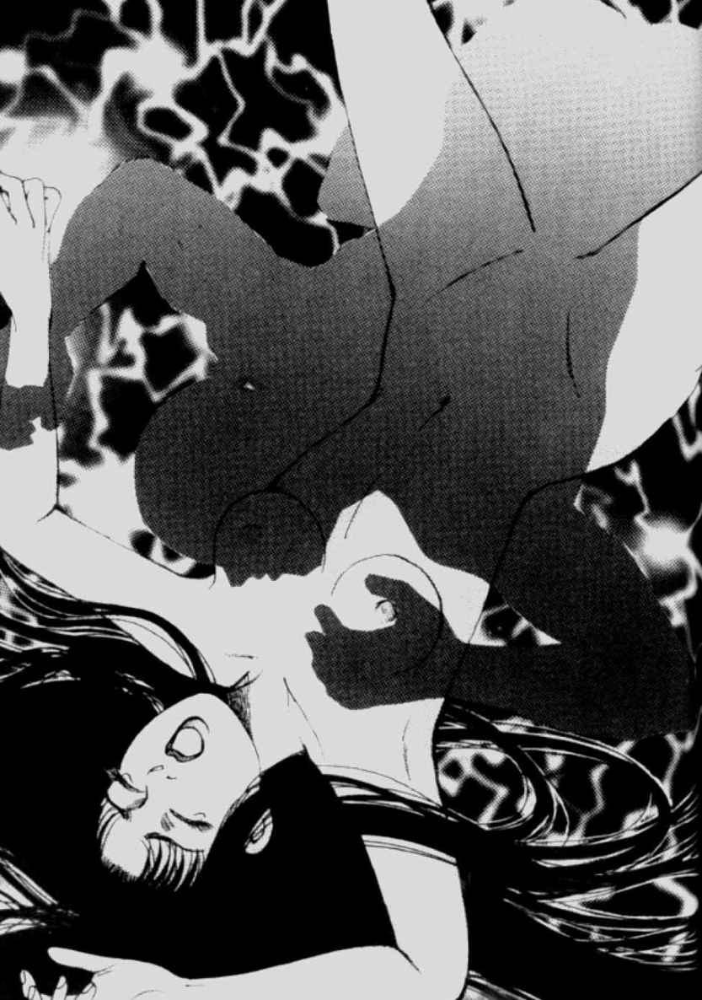
（なぜこんなことに......）
お千代は痛みをこらえながら、必死に考えました。
（おとっつぁん、なぜあの晩、人柱のことなどしゃべった？ 村のために死んだのにこんな目に遭うのはなぜ......？）
「さあ、お千代、おまえのその美しい顔を土間にこすりつけて許しを乞うてみろ！」
男はお千代の顔に平手打ちをしながら叫びました。
しかしお千代は決して口を開こうとはしませんでした。
男たちは殴られるばかりのお千代に辟易したのか、唾を吐きかけると、廃屋にひとりお千代を置いて出ていきました。
外は白々と夜明けの気配が漂いはじめていました。
次の日、お千代のあざだらけの姿を見た長老は、廃屋での一夜を容易に想像することができました。
長老は不幸なお千代の身を案じ、またうしろめたさも手伝って、なんとか生前の嘉六の夢をかなえてあげようと思いました。
そして近隣の村を歩きまわり、お千代の縁談を探しはじめました。
しかし美しいとはいっても、なんの身寄りもなく、口をきかない貧しいお千代を引き受けるという家はどこにもありませんでした。
長老はしまいには山に住む猟師にまで縁談を持ち込み、なんとか話をとりまとめました。
母親とふたりで暮らす腕のいいその猟師は、
「口うるさい醜女より、よっぽどましだ」
といってお千代を嫁に迎えました。
忌々しい思い出のある村から離れたお千代は、まじめに猟師のもとで働きました。
夫はお千代がひと言も口をきかないことを不思議がりはしたものの、生来のおおらかさで、さほど気にせずふたりは仲良く暮らしていました。
しかしいつまでたっても口をきかないお千代は、夫の母親から嫌われ、だんだん夫もかばいきれなくなってしまいました。
一年後、とうとうお千代は村に戻されることになってしまいました。
夫はしかたなくお千代を連れて山を下りました。
（またあの村に戻るのか）
お千代は絶望していました。またあの村の男どもの慰みものにされたら、どうすればいいのだろう。無骨だけれどやさしい夫と離れるのは心が引き裂かれるようでした。
とその時、藪の中で｢ケーン｣というキジの鳴き声がしました。
猟師である夫は反射的に銃をさっと構えると、飛び立つキジの姿を狙って、間髪いれず引き金を二回引きました。
バサバサと虚しい羽音がして、キジが落ちてきました。
それを見たお千代ははらはらと涙を流し、だれにいうともなくぽつりとつぶやきました。
「キジも鳴かずば撃たれまいに......」
それを聞いた夫は、お千代がしゃべれることに驚きました。
ひと言しゃべったためお千代は呪縛から解き放たれたように、これまでのいきさつを一気に夫に語り出しました。
父が口走ったひと言で人柱にされたこと、自分が父のいいつけを守り口をきかなくなったこと、村の男たちに受けた陵辱や暴力など、すべてを洗いざらい話したのです。
夫はお千代の話を聞き、ともにひとしきり涙を流すと、不憫(ふびん)な妻をしっかりと抱きしめ
ていいました。
「おまえの村の者は大ばかじゃ。お千代のきれいな心をこんなに汚すとは」
ふたりはきた道をともにゆっくりと戻りはじめました。
道中、夫はお千代にぽつりといいました。
「初めて聞いたおまえの声がそんなに美しかったとはな」
父が死んで以来、初めてお千代の顔に笑顔が広がりました。
堤防や橋などをつくる時に、神への捧げ物として人を生き埋めにしたという「人柱伝説」は、日本各地に残っている。特に、豊かな水量を誇る淀川流域には数多い。
危険がともなう土木工事で、生け贄となった人の霊が、工事を成功させてくれると考えられていたからだ。
昔話だけではなく『日本書紀』の昔から、人柱伝説はよく登場する。
伝説では犠牲者を決めるのは、夢や占い、あるいは、六部・巡礼・盲僧の進言によるところが多かったと伝えられる。
実際『日本書紀』には、仁徳天皇が夢でお告げを聞いて、河内の堤防を築く際の人柱を決めたと記されている。
人柱にされるのは、巡礼の母子や瞽女、遊女など、女性や子どもが多く、埋められた人たちは後に水神として祀られたという。
それに対して昔話となると、いい出した張本人が人身御供にされることが圧倒的に多い。ここで紹介したように、本人が意図せず自分を指名してしまう話の他に、庄屋などが自らを犠牲にするために、故意に自分にだけあてはまる条件を出す、という感動的な話も伝わっている。
人柱の悲劇が口をきかない娘の物語へとつながるが、これはふたつの伝承がひとつに合わさって、でき上がった昔話のようだ。
この話の結末は、余計なことをいわなければ災難に遭わずにすんだのに、という意味の「キジも鳴かずば撃たれまいに」という慣用句と結びついていることが多い。
しかし、余計なおしゃべりを戒めるこの句がこの話から出たものであるか否かは明らかではない。
さて、人柱の習慣は、世界を見まわすとさまざまな国に見られる。外国で多く見られるのは、壁にまつわるものだ。壁を強くするために壁の中に人を塗り込めたという。
最後に日本での人柱の習慣は立証されていないながら、関東大震災後の復興作業中に、皇居の二重櫓の敷地の下から、十数体の直立姿勢のままの人骨が発見されたことがあったことをつけ加えておこう。
平作はほとんど何も植えられていない畑を、今日も鍬で耕していました。何か作物を育てようとして、そうしているのではありません。ミミズやいなごなど、なんでもよいから食べられる虫がいないかと探していたのです。飛んでいるアブでさえも、すばやくひっつかまえると、てのひらで握りつぶし、口の中に放り込み、腹の足しにするほどでした。
平作が身につけている着物は、ほとんど衣服の態をなさず、ただのぼろきれが体にまとわりついているだけのように見えました。人間の骨格が、皮膚を破ってしまいそうなほどごつごつとそのまま飛び出し、まさに骨と皮だけになったその体は、すっかり干からび、生ける屍といっても過言ではないほど悲惨な姿でした。
平作の家には、まったく食べる物がなかったのです。
続く飢饉や日照りのせいで、村のどこの家もみな飢えていました。他人の世話をするような余裕のある家はどこにもなく、弱い者から死んでいくのは、もはや時間の問題でした。
畑に生えていた雑草さえも掘り起こして食い尽くしてしまい、村にはすでに家畜や犬さえも姿を消していました。
夏の陽射しは、ただでさえ体力が衰え、飢えた人間の残り少ない活力を、根こそぎ奪っていくほどの勢いで、じりじりと照りつけました。めまいを感じながら、平作は定まらない視線を、晴れた青い空に向けました。
平作の頭は暑さのためか、朦朧としていました。そのぼんやりとした頭の中にあるのは、
ただ〝食う〟ということだけでした。
―さて今晩はいったい何を食おう。床でもはがして食えば、腹の足しになるかいのう。
と、その時、平作の名を呼ぶ声が聞こえました。妻のおみよでした。
もともとふっくらとした色白のおみよでしたが、平作同様、満足に食べられず、今や、がりがりにやせ細ってしまいました。おみよはふらふらと、畑を横切りながら平作に近づいてくると、
「おまえさんたら、そんな何もない畑を耕したところで、ミミズ一匹出てきやしませんよ。涼しくなるまで、家に戻って少し休んでいなさいな」
平作のよどんだ目が、おみよの姿をぼんやりと蜃気楼のように捕えました。
―ああ、うまそうな肉が近づいてくる......。
平作の敏感な鼻がひくひくと動きました。
―ああ、食ってしまいたい。もっともっと近づいてこい！
なんの返事もしない平作に、いらいらとした口調でおみよがいいました。
「おまえさんたら聞こえているの？ そんなことで無駄に力を使わないほうが......」
おみよがそういいかけた時、平作は手にした鍬を胸に構えると、くるりとおみよのほうに踏み出しました。そして狂ったような目つきでおみよを見たかと思うと、いきなり鍬を高く振り上げたのです。
「あ、あんた......、まさか......！」
ざくっ。
平作の鍬がおみよの頭のてっぺんに勢いよく振り下ろされました。おみよはほとんど悲鳴を上げる間もなく、小さな驚きの声を口の中で発したかと思うと、その場へ崩れ落ちるように倒れました。白目をむいて、だらりと舌を出したおみよは、頭から血を流しながら、すでに息絶えていました。
平作はよだれを垂らしながらにやりと笑うと、おみよのわきを両手で抱えて、ずるずると引きずりながら家へ戻って行きました。
―ああ、今晩は肉汁だ。久しぶりにうまい食事にありつけるぞ。
平作の目はぎらぎらと異様に輝いていました。
かまどの床にしゃがみ込んだ平作は、おみよの着物をはぎ取りました。そして斧で死体をバラバラに刻むと、一片の肉をわしづかみにし、黄色い歯で肉と骨を引きちぎりました。骨に残った肉を時々しゃぶりながら、平作はかまどに大量に流れる血にも、生臭い肉のにおいにも少しも構わず作業を続けました。少しの肉も無駄にしないよう......。平作の顔はまるで幽鬼のようでした。
―肉汁じゃ、肉汁じゃ、たっぷり肉の入った肉汁じゃ。
ところが、そんな平作の姿を、じっとのぞき見ている者がありました。
山から下りてきた性悪タヌキです。タヌキは、平作が畑でおみよの頭に鍬を振り下ろした時から、その様子をじっと見ていたのです。
しばらくすると、かまどの窓から湯気が立ちのぼりはじめました。温かく、胃袋を刺激するそのにおいは、家の外まで漂いはじめ、タヌキの胃袋を刺激しました。
「そろそろ食べごろかいな」
平作がなべのふたをひょいと持ち上げると、平作の顔を湯気がもわっと包み込みました。
汁を味見してふんとうなずくと、平作はなべを火から下ろし、おもむろになべごと肉汁をすすりはじめました。
あまりの空腹のため肉の味はよくわかりませんでしたが。ただ、肉の塊がのどを通り、胃袋に落ちていく感覚だけが、平作の体と心を満たしていくのでした。腹が落ち着くにつれ、ほとんど野獣と化していた平作の心に、少しずつ人間の感覚が蘇りはじめました。
「わしはとうとうおみよまで食ってしまったのか......」
自分が犯した動かしがたい事実を、平作は知っていました。平作はその事実を考えると、胃袋が引きつった感じがしましたが、その意に反して、飢えた肉体は、必死でその栄養分を吸収しようと、決して平作に吐き戻すことを許しませんでした。
その時です。
じっと見続けていたタヌキが、ケタケタと笑いながら、平作をはやし立てました。
「うまそうな肉汁を食っておるじゃねえか、平作どん」
はっとわれに返った平作が戸の外を見やると、大きなタヌキがうす汚い笑みを浮かべて家の中をのぞき込んでいました。
「わしにも少し食わせてくれんかのう」
タヌキはそういうと、ずかずかと家の中に入ってきました。
「だれがおまえなんぞに、この肉汁を食わせるものか。これはわしの肉じゃ」
平作がそういって、なべを両手で覆い隠すと、タヌキは少しもひるまず平然として続けました。
「そんなら、わしが村の者に触れまわってやるだけじゃ。おまえがおみよを殺して汁にして食っちまったとな」
ケタケタケタと笑うと、タヌキは一目散に山へ走って逃げて行きました。
後にひとり残された平作は舌打ちすると、吐き捨てるようにいいました。
「あの性悪タヌキめ。まったくなまいきな。しかし、村の者に触れまわられるのは、なんとしても引き留めねばならん。おみよのことをしゃべられては都合が悪いでの」
そういいながらも、残った汁をすすりつくしてしまおうとなべを持ち上げたその時、となり村に嫁に行った娘のお雪が、戸口に姿を見せました。
「お雪、おまえどうしてここに？」
突然のお雪の訪問に、平作はたいそう驚きました。慌てて鍋を隠そうとしましたが、もう間に合いません。
「この不作続きじゃて、父ちゃんと母ちゃんのことが心配でな。ほれ、みやげの里芋じゃ。ところで今しがたタヌキが畑を横切って行ったけれど、いったい何があったと？ それに母ちゃんが見当たらんけど？」
お雪はそういうと、うさぎのように白くてかわいい顔をきょとんとさせて、あたりを見渡しました。
―父ちゃんが食べてしまった、などとは口が裂けてもいえんわな。
平作はとっさにお雪を騙さねばならないと思いました。
「さ、さっきのタヌキが、タヌキがな、母ちゃんを殺して汁にしてしまいおったのじゃ......」
打ちひしがれた表情で、平作は涙さえ浮かべていいました。
「えっ？ さっきのタヌキが？ なんておぞましいことを！」
お雪の顔はみるみるうちにまっ青になって、へなへなと腰を落としました。
「しかもわしはそのタヌキに騙されて、母ちゃんの肉汁を食ってしまったんじゃ。わしはいったいどうしたらいいのじゃ」
平作は床に突っ伏してわんわんと声を上げて泣き出しました。あまりに残酷な話に驚きの色を隠せないお雪は、うろたえながらも父親の体を抱きかかえ、いっしょになって泣きました。平作はそんなお雪の姿を見て、内心にやりと笑いました。
そしてこんなことをいったのです。
「お雪よ、父ちゃんはもうそんなに若くない。どうか母ちゃんの仇として、わしの代わりにあのタヌキを討ってくれんか」
唐突な話でしたが、お雪はそれを聞くと表情をきっと引きしめ、きっぱりといいました。
「父ちゃん、安心して。あたしがきっと母ちゃんの仇を討って、その憎いタヌキを殺してくるから」
おうおう、さすがはわしの娘よ」
「でも父ちゃん、仇を討つとはいっても、いったいどうしたらいいの？」
うさぎのようにか細いお雪は、狩りなどしたことがありませんでしたから、どうやってタヌキをしとめたらよいのか想像もつきません。
平作はふっと顔を上げると、お雪の耳に口を近づけました。
「それには人間の智恵を使ってな......、こうすればいいのじゃ......」
お雪は平作にいわれたとおり、山道をどんどん進んでいきました。すると性悪タヌキがごろりと横になって昼寝をしているのに出くわしました。お雪はこっそりとタヌキに近づくと、そばに生えている茅をおもむろに刈りはじめました。
その様子に気づいて、タヌキはのっそりと起き上がると、興味深そうにお雪の姿を眺めていました。
「おいおい娘さんよ。おまえはいったいそこで何をしているのじゃ？」
平作のいったとおり、タヌキはお雪の行動に興味を持ち、近づいてきました。
「見てのとおり、茅を刈っているのでございます」
平然とした口調でお雪は答えました。
「それはいったいなんのためだ？」
「立派な屋根を葺くためでございます」
「ふむ。それは、わしのねぐらにも葺くことができるかね？」
「もちろんですとも。茅で屋根を葺いたタヌキのねぐらなど見たことがありませんから、おまえ様はきっと立派なねぐらを持つタヌキとして、だれもが一目を置く存在として知られるようになることでしょう」
タヌキはそれを聞くと、どうしても茅で屋根を葺いたねぐらがほしくなりました。
「よう、娘さん、わしにもそれをひとつ、つくってくれないか」
タヌキが頼むと、お雪は笑いながらいいました。
「それでは、まずは茅を刈ってくださらねば」
タヌキはさっそく茅刈りをはじめました。お雪は一把だけ刈り、タヌキは欲張って三把刈りました。そしてそれを担ぐと、タヌキのねぐらに向かって歩き出しました。
前をのんきに歩いているタヌキを見て、お雪は心の中であざ笑いました。
―父ちゃんのいうとおり、所詮タヌキはタヌキじゃ。
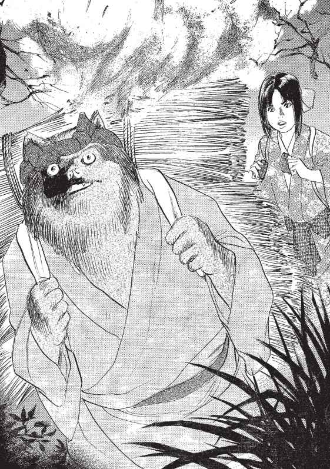
お雪には最初から茅葺きのねぐらなどつくってやるつもりは、さらさらありませんでした。それは、タヌキを捕えるための口実に過ぎなかったのです。お雪はタヌキが背負っている茅に火をつけようと、背後で火打ち石をカチカチとならしました。
前を歩きながらその音を聞いたタヌキは、不思議そうにお雪にたずねました。
「娘さんや、カチカチという音が聞こえたが、ありゃなんの音じゃろう？」
「あれは山の......カチカチ山のカチカチ鳥が鳴いている声でしょう。それほどうまい鳥じゃあありませんから、気になさるな」
と知らん顔をして答えながら、茅にそっと火をつけました。乾燥した茅は、ボウボウと音をたて勢いよく燃えはじめました。
「娘さんや、今度はボウボウという音が聞こえるが、ありゃなんの音じゃろう？」
「あれはボウボウ山のボウボウ鳥が、鳴いている声でしょう。それほどうまい鳥じゃありませんから気になさるな」
そのうち火はどんどん燃え盛りました。お雪は少しタヌキから離れると、木の陰に隠れて、タヌキが背負った茅が焼ける様子をこっそりと眺めていました。
―どんどん燃えろ。母ちゃんの仇の性悪タヌキめ。
そうこうしているうちに火が背中まで達しました。熱さでやっと自分の背中の状況に気がついたタヌキは、叫び声を上げながらのたうちまわりました。
―ふふふ。そのまま燃えろ、もっともっと燃えろ。
お雪はさらに火が勢いよく燃えるように、自分の背負っていた茅も投げつけました。
タヌキは地獄の底に引き込まれた罪人が断末魔を上げるような、恐ろしい雄叫びを上げながら、崖の下へ転がるように落ちていきました。
「おうおう、落ちてしまいおったわ。そんならあたしも下まで下りて、タヌキの焼け具合でも見てやるとしようか」
お雪が崖から身を乗り出して眺めると、ちょうど河原に転がっているタヌキの姿がありました。お雪はゆっくりと山を下りはじめました。
一方、崖を転げ落ちる間に背中の火を消すことができたタヌキは、なんとか命びろいをしました。
しかし、背中の毛はちりぢりに焼け焦げ、皮膚はまっ赤にただれていました。しかも崖を転げ落ちる時に、体中に無数の傷を負ってしまいましたから、全身がヒリヒリと痛み、血まみれになっていました。
タヌキはまったく身動きをすることができず、しばらく河原に横たわっていました。
やっと動けるようになると、川の中に体を浸し、体の熱をさまそうとしました。
水に浸かりながら、タヌキはぼそぼそとこぼしました。
「それにしても危なかったわい。あのかわいい顔した娘には、まんまと騙された。もうちょっとで焼き殺されるところだった」
タヌキはそれでもなんとか命びろいできたことで、ほっとため息をもらしました。
「それにしても、人間という生き物のなんと恐ろしいことよ」
―他の動物を殺して食うばかりか、自分たちの仲間まで、腹がへったら食ってしまう。
しかもみな知らん顔しているのだから、まったくもって恐ろしい。そのうえ悪知恵が働くときたもんだ。
タヌキは平作がおみよを汁にして食う以前にも、母親のサチを殺して食う姿を目撃していました。タヌキは村にいたずらに出ては、そんな光景を目のあたりにしていたのです。
何も平作だけが特別ということはありません。どこの家でも同じような光景が繰り広げられていたのです。そして食い終わったあとみな一様に、自分たちにいい聞かせる呪文のように、こういうのです。
「山の性悪タヌキに騙されて食っちまった！」
一方、お雪は山から下りてくる途中に、蓼を見つけるとたくさん葉を摘み取りました。
蓼の汁は魚を殺す毒として使えましたから、それで魚も捕えて帰ろうと思ったのです。
「川まで漁にこれない父ちゃんのために、持って帰ってやろう」
父親思いのお雪はそういいながら、山を下り河原へ出ました。
するとちょうどタヌキが川の水に浸かり、やけどを癒している姿が目に入りました。お雪は舌打ちすると、
「タヌキめが、まんまと助かりおったか。丸焼きにしてみなで食ってやろうと思ったのに......。しかし、まだまだ手はあるぞ」
そうつぶやきながら、タヌキに近づきました。そして猫なで声を出すと、ぬけぬけといいました。
「まあまあ、タヌキどん。さきほどは災難でしたな。いったいどこからあんな火が出たのでしょう。山が乾燥している時は怖いもんですね」
そのとぼけぶりに腹を立てたタヌキはいい返しました。
「よくもわしを騙して火をつけてくれたな！」
「何を根拠にそんなひどいいいがかりをつけるのです。あたしがおまえさんを騙したりなんてするものですか。このとおりおまえさんの体を心配して、やけどの薬を摘み取って、持ってきてやったというのに」
そういってお雪は摘み取ってきた蓼の葉を見せました。
すると背中のやけどがひりひりと痛むタヌキは、川の中から飛び出しました。
「娘さんや、おまえさんを疑って悪かった。頼むからそのやけど薬をわしにくれ」
「もちろんですとも。なんならあたしがそっとぬってさし上げましょう」
このままほうっておくと、死んでしまうかもしれないと思ったタヌキは、お雪に背中を向け、薬をぬってもらうことにしました。
ところが薬をぬってもらった箇所に、ピリピリとまるで針で突き剌されたような痛みが走りました。赤くただれた部分は、より赤く腫れ上がりました。
「娘さんよ、本当にそれはやけどの薬なのか？」
やけどの傷から蓼の汁が染み込み、あまりの痛みでかってに涙があふれ出しました。 タヌキはとうとう我慢できず、薬を洗い流そうと川に飛び込みました。
「うわああああ」
水の中でタヌキはその尋常でない痛みにうめき声を上げました。
するとお雪が静かな口調で、うすら笑いを浮かべながらいいました。
「タヌキどん、本当のことを教えてあげましょうか。それはやけど薬ではなく、あたしが
川の魚を殺そうと思ってとってきた蓼の葉だよ。つまり毒ということさ」
それを聞いたタヌキが水面を見ると、魚が次々とぷかぷかと浮かんできました。
おそらくタヌキの背中につけた蓼が水中に溶け出したのでしょう。
「ううう、やはり騙したのか！」
タヌキは水の中で身動きができないまま、悔しがりました。
「タヌキどん、なぜあたしがこんなことをしたかわかるかい？ これは復讐だよ。母ちゃんを殺して汁にしたばかりか、それを父ちゃんに食わせるなんてひどいじゃないか。どんなに腹がへって飢えていたって、そんな恐ろしいことはタヌキにしかできないよ」
それをきいたタヌキは苦しみながら、たいそう驚いていいました。
「お、おまえはもしかして平作どんの娘か？」
「ああ、そうさ。父ちゃんにおまえのことを聞いて、こうして仇を討ちにきたというわけさ」
すでに毒が体にまわって、どろんとした目つきのタヌキはそれを聞くと、うすら笑いを浮かべていいました。
「人間の考えそうなこった。いつだって人間はそうなんだ。なんでもおれたちのせいにしちまうのさ。おまえの母ちゃんのおみよだって、殺したのはおれじゃねえ」
「おまえじゃなければいったいだれがそんなことを？ あたしはおまえがうちから走って逃げて行くのをしかとこの目で見たんだよ」
徐々にかすれた声になりながらタヌキは最後の力を振り絞っていいました。
「本当のことを最後に教えてやろう。おみよを殺し、そして食ったのは......、それはおまえの父親なのさ......」
そういうと、タヌキは口から血を吐き出し、息絶えました。
お雪はタヌキの死骸を担ぎ、蓼の毒で浮いてきた魚を河原に引き上げると、村に持ち帰りました。それを見た平作はたいそう喜び、お雪が親の仇のタヌキを仕留めたといって、村人にタヌキ汁を振るまうことにしました。
お雪はタヌキが最期につぶやいた言葉が心の中にひっかかって、平作にたずねました。
「タヌキは死ぬ間際に、父ちゃんが母ちゃんを食うために殺したのだといったけど、そんなのうそだよね」
平作はにっこりと笑いながら、お雪にいいました。
「どこに自分の妻を自らの手で殺して食う男がいるものか。それこそタヌキの考えそうな浅はかなことじゃ。余計な心配はせんでいいから、おまえもこのタヌキ汁を食って精をつけておけ」
それを聞くとお雪は安心した表情で、ほっと息をつきました。
お雪がよいにおいとともに、温かい湯気の上るなべに近づくと、すでに村人たちは必死の形相でタヌキ汁をすすっていました。
村人たちは口々に、「うちのじいさんもこのタヌキに殺された」「わしの娘もこのタヌキに食べられた」と訴えるようにつぶやきながら、食い続けていました。
そして、村人といっしょにタヌキ汁をすするお雪の姿を、後ろで平作がじっと見つめていました。
捕らえたタヌキに騙され、婆を殺されたうえ、その婆の肉でつくった婆汁まで食わされてしまった爺。その爺を助けて仇を討とうとウサギが爺さんを助けて、最後にタヌキをさんざんな目に遭わせるこの昔話。
発祥は不明だが、滝沢馬琴の時代にはすでに今日の形で登場する。近代以降になると、国語読本や唱歌にも採用されて今や日本中に知られている代表的な昔話である。
にもかかわらず、タヌキが婆を殺し、爺に食べさせるくだりでは、こんな残酷なシーンがあったっけと首をかしげる人も多いのではないだろうか。童
話から残酷なシーンを取っていく流れの中で、消されてしまったエピソードは多いが、これもそのひとつ。しかもタヌキはかなり残酷であった。婆に化けるにも、葉っぱをかぶってドロンというようなかわいらしいことはしない。殺した婆の顔の皮を包丁で剥いで、その婆皮をかぶって化けるのだ。
そんな残忍で狡猾なタヌキが後半に豹変する。あきれるほどマヌケになってしまうのである。
ここになんとなく違和感を感じないだろうか。
前半では人間を騙すほど狡猾な智恵の働くタヌキが、後半になるとウサギの子ども騙しの手口に何度もひっかかっているのだ。あれ、タヌキってこんなマヌケだったっけ......？
そう、大人の目で冷静に読んでみれば、前半と後半とではタヌキの性格があまりにも違ってしまっていることに気づくはずである。
実は、それも当然なのである。
この話はもともと、ふたつの独立した話だった。それがなぜひとつの話に融合されたのだろうか。前半と後半がそれぞれ独立した話だとあまりにも双方が救われないので、タヌキの婆殺しには罰を、ウサギのタヌキいじめには正当な理由を与えるためにくっつけられたという。柳田国男以来、この説が通説となっている。
しかし、本話ではその定説とは別の考え方を示しているようだ。
それは、食人を隠すための話だった、というものだ。日本では、食人の風習というものは、記録としては残っていないが、飢饉などで食物が不足して、間引きが頻繁に行われたような時代に、はたして死人の肉を人間が食さなかったといい切れるだろうか。そして人肉を食すことで飢えを満たし、やっと人間らしい理性を取り戻した時、人はその自責の念を取り除くために、そんないい訳のような話をでっち上げた、としたら......。
ひょっとすると、当時の人たちが、つくり話で覆い隠したかった真実を、暴き出しているのが本話かもしれない。そして、これが真実ならば、人間は二重三重に罪を犯していることになる。食人、事実隠蔽、責任転嫁、と......。
みな互いの罪を知りながら、口をぬぐい、あくまでとぼけた顔で、その秘密を墓場まで持って行っていたのだとしたら、本当に残酷で怖いのは、だれだろう。
「いいかげん、あんた、きこりの泰平さんの頼みどおり、仕事を手伝ってあげたらどうね。それほどたくましい体つきをしてるというのに、もったいなくねえか」
女は、筋肉がくっきりと浮き出て、たくましく半分に割れた桃太郎の腹を、てのひらでやさしくなでながらささやきました。ふうっとため息を吐き出しながら、桃太郎は面倒くさそうにいいました。
「何がもったいないことがあるか。きこりなんぞの仕事をしたからというて、どれほど生活が豊かになるというんじゃ。そんなみみっちいことをするくらいなら、わしはおまえとこうしておるほうがよっぽどええわ」
桃太郎はそういいながら、女の着物のすそに手を差し込むと、すでにしっとりと濡れた女の下半身に指を滑らせました。女は桃太郎を上目づかいで見つめると、
「そりゃ、そうだけどン......、でも、あんだだって......一旗揚げたいんでしょう？」
と、体をよじらせ、時々あえぎ声を上げて続けました。
「あんたの怪力は、村の者でかなう者などいないでねえの。都にだって、あんたよりも力の強い男なんて決していないはずだで」
「まあな。おれは桃から生まれた桃太郎だからな。もともと不思議な力がこの体に宿っているのさ。普通の人間とはそこから違うんだ。それはおまえも体で知ってることじゃろうがっ！」
そういうと、桃太郎は女の体に覆いかぶさり、勢いにまかせてその白く豊かな乳房にむしゃぶりつきました。
桃太郎のものぐさぶり、女好きは、村では有名でした。どんな仕事を頼まれようと、あまり気のりしない調子で、のらりくらりと話をかわして働こうとしないのです。たとえ仕事を受けても、およそてきぱきとは働かず、だらだらと居眠りをして過ごすというありさまでしたから、村の者はほとほとそのものぐさぶりにはあきれ果てていました。しかし、桃太郎が怪力の持ち主だということは周知のことでしたので、桃太郎のもとには、ひっきりなしに仕事の依頼が寄せられました。それでも桃太郎は相変わらずの寝ぼけ調子で、一向に重い腰を上げようとせず、女遊びにばかりふけっていました。
爺と婆が年老いてから、裏川に流れてきた桃から生まれたという桃太郎は、たいそう甘やかされて育ちました。だからこんなにぐうたらになってしまったのだと、村の者たちは陰口をたたいていました。
しかし、そんな桃太郎でしたが、実は内に秘めた大きな野望があったのです。
―いつかでっかいことをして、英雄として国中からあがめ奉られる人物になってやる！
それは単なる夢物語などではなく、確信として桃太郎の心の中にしっかりと根を下ろしていました。しかし、いったいどうしたらその好機をつかむことができるのか、その答えを見つけ出すことはできませんでした。
桃太郎は日々働きもせず、毎日ぼんやりとそんなことばかり考えていたのです。
そんなある日のこと―。いよいよ、桃太郎に人生の転機が訪れたのです。
それは久方ぶりに山に柴刈りに出た時のことでした。
柴を刈り終え、山を下っていると、その視線の先に、大きな岩が道を塞いでいるのが見えました。岩はまるで壁のように桃太郎の行く先を阻んでいたのです。
おそらく前日に吹いた強い風にあおられ、崖から落ちてしまったのでしょう。
その岩を前にして、桃太郎は途方に暮れてしまいました。
「困ったなあ。ここをとおれないともう一度山に戻って、別の道を探さなければならない。まったく迷惑な岩だ......」
ものぐさな桃太郎は、きた道をもう一度戻るなんて面倒なことはしたくありません。
「したかない。一丁、この岩をどけてやるか」
桃太郎はぺっとてのひらに唾を吐きつけると、気合いを入れました。普段は、面倒がってあまり出すことのない怪力で、岩をどけることにしたのです。
桃太郎の体のゆうに倍はありそうな大きな岩でしたが、両手をいっぱいに広げ、むんずとつかむと、桃太郎はぐっと腰を落としました。そして歯を食いしばり、腹に力を入れました。
桃太郎は顔をまっ赤にすると、首に青筋を立てて踏んばりました。そして今にも血管がぶっちりと切れてしまいそうなほど力を入れると、
「ていやあっ！」
というかけ声とともに、道のわきに岩を投げつけました。
ごん......ごん......ごん......。
大きな音を立てて、岩はわき道に転がり、そのまま近くを流れる川までごろごろと移動して行きました。そして、
ずどどどどどど............ん。
という、まるで地震でも起きたのかというほどの地響きとともに、地面が揺れ、岩は川の中に落ちました。
桃太郎は、ふうっと息を吐き出しました。
「さあ、これで遠まわりをせずに家に帰れるぞ」
桃太郎はまたのんびりとひとりで道を歩き出しました。
桃太郎が村へ戻ると、村人たちの間では、さきほどの地響きの話題で持ち切りでした。
「山に鬼が出たのではないか」
「いや、あれは山神さまがお怒りになって、地面を割ったのだ」
「きっと大なまずが現れて、地面を動かしたに違いねえ」
村人は口々にそんなことをうわさし合っていました。
そこへ山から桃太郎が戻ってきたので、みな口々に桃太郎にたずねました。
「おまえは山にいたようじゃが、何か見たか？ いったいあの地響きの正体はなんなのじゃ？」
すると桃太郎は笑いながらいいました。
「あれはなんでもないわい。わしの行く手を阻む岩があったから、どけようと思って投げたら、転がって川に落ちてしまったのじゃ」
村の者はたいそう驚き、その岩の大きさを想像して、やはり桃太郎はただ者ではあるまい、とんでもない怪力を持った男だとうわさし合いました。
そのうち、桃太郎の怪力ぶりは、桃太郎が働く荘園の領主の耳にまで届き、そしてその領主の口から、さらに都の帝のお耳にまで入ることとなったのです。
そしてある日、帝のお使いの者が勅命を持って、爺と婆、そして桃太郎の三人が暮らす粗末な小屋にまでやってきたのです。
帝から文をもらうような生活とはまったく縁のない暮らしでしたから、三人はたいそう驚きました。
文字の読めない三人は、お使いの者にその勅命を読んでもらうと、なんとそこには〝鬼退治を桃太郎に頼みたい〟という文面がしたためられていたのです。
その〝鬼退治"とは―。
文面はこう続きました。
「そちの怪力のうわさは朕の耳にまで届いている。今、朝廷では、東北に位置する陸奥の国に住む、『蝦夷』という〝鬼〟たちに悩まされている。ぜひとも、そちにその鬼たちを残らずすべて退治してほしい。成功のあかつきには、もちろん十分すぎるほどの褒美を取らせよう」
これを見た桃太郎の心は「まさにこれだ」と喜びで打ち震えました。
―わしが求めていたのは、まさにこうした任のこと。わしはこの〝鬼退治〟で国の英雄となるのだ！
桃太郎はさっそく、
「『蝦夷』という鬼がいったいどんな鬼かは皆目見当がつきませんが、きっと恐ろしい形相をしているのでしょう。私が必ずや、お上の仰せのとおり、鬼退治をしてご覧に入れましょう」
そうした言葉とともに、陸奥へと出発することを帝のお使いの者に伝えました。
そして、婆にきびだんごをつくってもらうと腰にくくりつけ、もう片方の腰に刀を差すと、陸奥に向けてたったひとりで旅立ったのです。
おともも仲間もいない桃太郎でしたが、それでもどこかに静かな自信がありました。必ず憎き鬼を征伐できると確信していました。
―この瞬間をどんなに夢見てきたであろうか。これまでぐうたらだと罵ったやつらを見返すためにも、桃から生まれた桃太郎がいかに常人離れした能力を持っているか、今こそ世に知らしめてくれる！
桃太郎の心の中には、どのように大きな体をした赤鬼や青鬼を退治してやろうかと、残虐な思いがふつふつとわき上がっていました。
陸奥への旅の途中、桃太郎の鬼退治の話を聞いて、おともをしたいと申し出る者も出てきました。
最初に声をかけたのは、猟犬を飼いならしている犬飼部でした。猟犬三十三匹を引き連れた犬飼部は、犬をまるで人間を操るように動かすことができる超人的な力を持っていました。
たとえば、犬飼部が犬たちに「酒を持ってこい」といえば、犬たちはどこかの店から酒をくわえて持ってきたり、また「急所を狙え」といえば、犬たちは相手の股ぐらに食らいつくなどまったくその言葉どおりに動くのです。
桃太郎はこれは鬼退治をするうえで、きっと力になってくれるだろうと、犬飼部と三十三匹の犬を仲間にしました。そのしるしとして、きびだんごをみなにわけ与えました。
また少し行くと、今度は猿飼部が猿三十三匹を引き連れて、仲間にしてくれと申し出てきました。
猿飼部も犬飼部同様、猿を操ることは完ぺきでした。さらに猿は犬よりも器用でした。
たとえば猿たちは刀剣を扱ったり、弓を引いたりすることができるのです。まさしく猿飼部の一団は、軍隊のように統制がとれていました。
そしてまた猿たちは芸をすることができましたので、宴をもよおす時には、余興としてさまざまな芸を披露をして、場を盛り上げることができるのでした。
桃太郎は彼らにも仲間となったしるしとして、きびだんごをわけ与えました。
またしばらく行くと、今度は鳥飼部が雉三十三羽を連れて仲間にしてくれと申し出ました。
雉たちは聴覚と視覚に優れていましたので、危険をいち早く感じ取ることができる存在でした。自由に空を飛ぶことができるため、伝達役としても桃太郎には重要だと思われたので、彼らも仲間にすることにしました。
そうして桃太郎の仲間となった犬飼部と犬、猿飼部と猿、鳥飼部と雉たちの一行は『蝦夷』という鬼征伐のために、陸奥を目指したのです。
都を出てから二十日ほど旅を続けたころでしょうか。
とうとう、桃太郎一行は、陸奥にたどり着き、蝦夷たちの根城といわれる城を見つけ出したのです。
城壁は固く閉じられ、城の中にどんな鬼がいるのか、桃太郎たちにはうかがい知ることができません。
そこで桃太郎は鳥飼部に、雉を飛ばし、中を偵察してもらうよう頼みました。
雉たち三十三羽は城壁などものともせず、軽々と空に飛び立ちました。
雉たちが戻ってくるまで、一行はこの中にいる鬼たちとどう闘うべきかを話し合いました。
まず、門を破るのは、桃太郎の怪力で、そして門扉が開けられたら、犬たちがいっせいに鬼の足もとに食らいつき、倒れたところを猿たちが鬼の体に這い上がると、刀剣で鬼の
目ん玉を突き刺し、動けなくする。
そして桃太郎たちがその鬼に縄をかけ、首を落とすというものでした。
しかし、雉たちが戻ってきて、鳥飼部を介して話を聞くと、どうも様子が変です。
鳥飼部の口から出たのは意外な事実でした。
「城の中には人ばかりで、鬼などひとりもいない。女子どもまで平和に生活しておるとのことじゃ」
桃太郎は混乱しました。
「いないとはどういうことじゃ！ 鬼は確かにこの中にいるはず。それは帝白身がおっしゃったことであって、鬼がいないはずなどない！」
桃太郎は焦りました。鬼を退治して立身出世しよう、英雄になろうとしているのに、肝心の敵がいなくては、話になりません。
犬飼部たちも疑わしげに桃太郎を見ています。
そこで、桃太郎はみなの者にこういいました。
「いやいや、鬼が人間の形に姿を変えるというのは、古今東西よくある話。この城壁の中にいる人間たちも、実は姿を変えた鬼なのではないか......」
すると鳥飼部が続けて発言しました。
「そうだ、帝がまちがったことを命じるはずがないではないか。同じ人間を皆殺しにしろなどというとは思えない。やはり彼らが鬼なのだ！」
そう話すとみなも納得しました。
そうと決まればもう迷いはありません。一行は夜がふけるまで、こっそりと作戦を立てたのでした。
猿飼部は猿を引き連れて、城壁の門を叩きました。
「もうし、お願いがございます」
中から門番が顔を出しました。
「なんの用か？」
「はい。わたくしは旅の途中の猿飼部。今夜の宿に困っております。もし泊めてくださるなら、宴の余興に世にも珍しい猿の芸を、たくさんお見せいたしましょう」
門番は怪訝な表情で猿飼部を見ましたが、猿三十三匹を引き連れているのを見て、興味を引かれたのでしょう。猿飼部と猿たちを城壁の中に招き入れました。
侵入に成功した猿飼部は、城の中の様子を探りました。
城の中には確かに赤鬼や青鬼といった、みなが考える〝鬼〟の姿はまったく見当たりませんでした。そして桃太郎のいう、人間に姿を変えた〝鬼〟たちは、都の人間と少しも変わらない様子をしていましたが、よく見ると、少し違う気がしました。みな目鼻立ちが大きなつくりをしていて、ヒゲや眉、頭髪などが濃く、どこか色白で細面の都人とは異なるのです。
―鬼が化けるというのは、こういうことか。うまく化けておるつもりだろうが、やはり偽物よのう。
猿飼部は〝鬼〟たちの顔をそっと盗み見ながら、桃太郎たちのいうとおりだと納得しました。
日もすっかり暮れ、"鬼"たちは、猿の芸が見られるということで、飲めや歌えやの宴を催しました。猿飼部は、日頃訓練しているように、猿たちに酒をお酌させたり、滑稽な芸を見せることで、〝鬼〟たちをたいそう喜ばせました。しかし酒の中には、こっそりと眠りを誘発するような薬も数滴、混ぜ込んでおいたのです。
しばらくすると、しこたま飲んだ〝鬼〟たちは、その場で眠りこけてしまいました。
それを上空の雉たちが見届けると、外にいる桃太郎たちに、そのことを伝えました。
桃太郎は待っていましたとばかりに、雉に合図をしました。すると、雉がそれを猿に伝え、猿たちがこっそりと城門を中から開けました。桃太郎は、犬たちにいっせいに門番に食いかからせました。
「うわあああああ！」
急所に食いつかれた門番たちは必死で、中にいる者たちに知らせようと、叫び声を上げ
ました。
「人間に姿を変えた鬼どもがっ！」
桃太郎はそう叫びながら、刀を片手に城内に攻め込みました。その後ろを犬たちが、吠え立てながら、走りまわりました。犬たちは城内につながれている馬の綱をかみ切ると、吠えて、馬たちを城外へと追い出しました。
鳥飼部は雉たちに火のついた小さな矢をくわえさせると、火種を城の中にいっせいに落とさせました。火は一気に城に燃え移り、ぱちぱちと火の粉を上げて、燃え広がりました。
静かで穏やかな夜を過ごしていた城内は、一気に地獄へとその様子を変えました。
「女子どもも決して容赦するんじゃねえぞ！ これはみな姿を変えた鬼なのじゃ。心惑わされてはならぬ！」
桃太郎は自分にもいい聞かせるように、そう叫びました。
夜風も手伝い城内の火が燃え上がると、火の手はどんどんと大きくなりました。
猿たちはキーキー、キーキー鳴きながら、眠りこける〝鬼〟たちを、刀剣で胸を突き剌しました。
「わしは〝鬼〟征伐をした英雄になるのじゃ！」
桃太郎は叫びながら〝鬼〟の背中に飛びつくと、髪の毛を右手でつかみ、左手で首根っこを押さえると、ものすごい力でばきばきと音を立てて、首を体から引き抜きました。首をもぎ取られた〝鬼〟の顔には、何が起こったのかまったく理解できない表情が浮かんでいました。
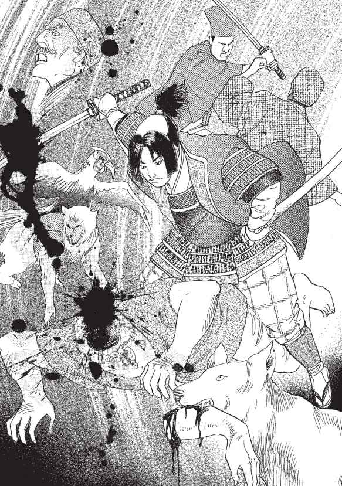
女子どもは犬たちに手足を食い裂かれ、流れ出る血の中で全身をひくひくとけいれんさせながら、死に絶えていきました。死体に、犬や雉たちが群がり、肉を貪り食うさまは、まさにこの世の地獄というべき光景でした。
桃太郎は酔ってほとんど足もともおぼつかなくなった〝鬼〟の体に飛び乗り、押さえつけると、刀でのど笛を真一文に掻き切りました。その時切られた〝鬼〟が、のどをヒューヒューいわせながら、最期の言葉を発しました。
「おまえたちはいったい......、なぜわしらを......？」
桃太郎はそれを聞いて、意気揚々と答えました。
「我こそは、帝から〝鬼〟退治の役割を仰せつかまつった桃太郎。陸奥の〝鬼〟たちを皆殺しにするためにやってきたのじゃ！」
男はそれを聞くと、とぎれとぎれにいいました。
「〝鬼〟はわしらじゃない......、やつらこそ〝鬼〟なのじゃ......」
そういい終わると、〝鬼〟は息絶えました。
「やつらって......？」
桃太郎の心にその言葉がひっかかりました。
城の中心に桃太郎たちが上っていくと、そこには桃太郎がかつて一度も見たことのないほどの量の金が積まれていました。
桃太郎はその金を、打ち取った鬼の首といっしょに荷車に積むと、動物たちに引かせて、帝のもとへと運びました。
帝は桃太郎が〝鬼〟退治をしたことを聞くとたいそう喜び、また金を持ち帰ったことにも上機嫌でした。
「やはりやつらは金鉱を持っていたのか。これで金も手にすることができたし、陸奥の統治もしやすくなるというものじゃ」
帝は高笑いをすると、桃太郎に褒美を取らせようといいました。
「なんでもよいぞ。ほしい物をいってみよ」
そこで桃太郎はいいました。
「ひとつ疑問があります。それにお答えいただけますでしょうか？」
「なんじゃ、いってみよ」
桃太郎は意を決したようにいいました。
「やつらは殺しても殺しても、決して〝鬼〟の姿を現しませんでした。そして、死ぬ間際に〝鬼〟ではないといったのです。やつらは鬼だったのでしょうか、それともただの人間だったのでしょうか」
すると帝はさも驚いたような顔をしました。
―こやつはまさか、やつらを本当の〝鬼〟だと思っていたのか？
そして桃太郎をバカにしたように嘲笑しながらいいました。
「桃太郎よ、よく覚えておけ。〝鬼〟は狡猾な生き物じゃから、そうそう正体を現わさぬ。しかしおまえが退治し、持ち帰った二千もの首、あれはまちがいなく〝鬼〟のものじゃ」
帝の言葉を聞いて桃太郎はほっと胸をなで下ろしました。
―女子どもまで切り刻んだのだ。あれがすべて人間だったなら、わしこそ本物の〝鬼〟になるところだったわい。
桃太郎は帝から褒美をもらいましたが、召し抱えられることもなく、郷里に戻されました。
そして、その後、桃太郎が戦いの舞台に出てくるということは二度とありませんでした。
しかし〝鬼〟退治に手柄を立てた桃太郎は、その後、英雄として子どもたちにまで知られる存在となったのです。
江戸時代の赤本『桃太郎』『桃太郎昔話』を皮切りに、豆本、黄表紙、青表紙などに登場するこの昔話は、水辺から発見される「小さ子譚」の典型だ。
このように水辺から発生した子は、神の申し子といわれ、不思議な力を持っているとする信仰が日本には古来からあった。桃太郎以外にも、『爪子姫』
や『花咲かじい』の犬など、小さな子に相当する例は多い。
この桃から生まれた桃太郎が、鬼が島へ鬼退治に行く。そして尋常ではないカを発揮して鬼を退治する―。
その不思議な力を備えた『桃太郎』は、今や知らない者などいない国民的な英雄である。
しかし、彼は本当に、英雄だったのだろうか。
ひとつ考えてほしいことがある。桃太郎は、暴れている鬼に偶然出くわしたり、鬼にいじめられている人に頼まれて鬼を退散させたのではない。わざわざ、人里離れた「鬼が島」まで出かけて行って、退治しているのだ。中には、村に出ては悪さをするので、と申し訳を述べているものもあるが、いかにも取ってつけたようだ。鬼は、鬼が島でただおとなしく暮らしていただけなのだ。
ここで、鬼という存在について考えてみよう。頭に角を持ち、赤や青など色とりどりの肌をしている鬼はもちろん架空のものだが、鬼の正体についてはいくつかの仮説がある。
ひとつは、漂流して日本にたどり着いた碧眼紅毛の外国人だという説。これは昔の日本人が、自分たちとは違う髪や目の色、恐ろしいほど高い鼻、大柄な体を見た驚きを考えれば、同じ人間として村や町などの共同体で異人種を受け入れてやらなかったことは想像にかたくない。
一方、村から離れた山奥に住んで、鉄をつくっていた集団も鬼と呼ばれ、集団から疎外されたという説もある。
『桃太郎』はこういう「弱者」を迫害したり、彼らから搾取することを、時の政府が正当化した物語だともいわれている。
実際に歴史をひもといても、朝廷では蝦夷征伐、熊襲征伐などといって、自らの支配を拡大するために、遠方で独自の生活を営んでいる部族たちを、力ずくで支配下に置こうとした事実が記録されているのだ。
この時「征伐」された人々は、決して、朝廷や都の人々に害をなすようなことはしておらず、先祖代々の土地で、独自の生活を営んでいただけなのだ。
第二次世界大戦中の軍国主義、戦後のイデオロギー闘争に、昔話のヒーローである桃太郎が旗手としてかり出されている事実を考え合わせても、彼は時の政府に利用されていただけの単なる偶像にすぎないのではないだろうか。
ぽたっ、ぽたっ。
規則正しく落ちる朝露に襟首をたたかれて、娘は目を覚ましました。
まわりを見まわすと、見なれない竹やぶの中で、娘はひとり横たわっておりました。
ぼんやりとかすむ朝靄から、節の立派な青々とした竹が顔を出し、空に突き刺すように高く伸びています。
体を持たせかけていた麻の袋から上半身を起こすと、袋の中でちゃりんと金属のぶつかり合う音がしました。
娘は小首をかしげましたが、ふいに肌に寒さを覚え、身震いしました。
視線を落とすと、自分がまとっているのは、薄い袷の着物一枚。
娘は両腕で体を包み込みました。
そしてしばらく、そのままぼんやりとしておりました。
霞が消え、日の光が差し込むころになっても、娘は動こうとしませんでした。
娘は途方にくれていたのです。
―いったいここはどこなんだろう。
―なぜわたしはこんな薄着をしているのだろう。
―こんなところでわたしは何をしているんだろう。
そして、
―わたしはだれなんだろう。
と......。
竹取りの翁は、いつものように、よい竹を求めて竹やぶの中を歩いていました。
太い指で竹の感触を一本一本確かめていると、後ろから何かに見られているような気がしました。
振り向いた翁は、そこでぼうっと座って、自分を見ている娘を見つけました。
―こんなところに若い娘が......。いったいどうしたというんじゃろう。
翁はいぶかしく思って、娘に声をかけました。
「これこれ、いったいそこで何をしておるのじゃ」
娘は翁のほうを見ました。
翁は娘が色白であまりにも美しいことに驚きました。
娘は翁をおびえたようにじっと見つめるだけで、口を開こうとはしません。
「怖がらずともよい。わしは讃岐の造と申す、竹取の爺」
翁は名乗り、いろいろと問いかけましたが、娘はまったく反応をしめしません。
やがて翁は娘が体を持たせかけている麻袋に気づきました。
ゆるんだ袋の口から、小判がいく枚かこぼれ落ちています。
翁は息を飲みました。
―すごい、この袋の中身が全部小判だとしたら......。
竹取の翁は、娘を家に連れ帰ることにしました。
「爺、その娘はなんだね」
翁が連れてきた娘を見て、妻の姥が渋い顔をしました。
「竹やぶの中に座っておったのじゃ。ほうっておくわけにもいかんので、連れてきた」
姥はこめかみをぴくぴくさせていいました。
「家にはよそ者を食わせるゆとりなんかないぞ」
翁はにやりと笑うと、声をひそめていいました。
「大丈夫、持参金つきじゃ。実はな......」
翁は娘の持っていた、小判のつまった麻袋を姥に見せ、娘を拾った時のことを話して聞かせました。
姥は聞いているうちに、にんまりと相好を崩していきました。
そして満面に笑みを浮かべると、娘に声をかけました。
「これはよくおいでなされた。いつまでもゆるりとされよ」
老夫婦は、娘の持ってきた小判で、家を立派な長者屋敷のように建て替えました。
娘は、おびえていました。
自分が何者か、どこからきたのかもわからず、言葉を口にするのが不安でした。
しかしそれよりももっと恐ろしかったのは、人の心が透けて見えることでした。
―この娘は金づるじゃ。
―家の下働きでこき使って一生わしらの面倒を見させよう。
翁と姥が親切そうな顔でかける言葉とは別の、音のないもうひとつの言葉が、強く娘の胸に投げ込まれてくるのでした。
翁に竹やぶで拾われた時から、金目当ての相手の魂胆がわかっていました。
けれど、他にどうするあてもないので、不安ながらも後につき従ってきたのです。
しばらくすると、娘は姥に下働きをするよう申しつけられました。
けれど、米とぎから、飯炊き、洗濯など何をやらせても、まるで赤子のように役に立ちません。苦労知らずのような、白い指をもてあそばせているだけです。
「本当に役に立たない娘だね」
姥はある日、堪忍袋の緒を切って、娘を追い出そうとしました。
けれど、それを翁が押しとどめました。
「まあ、かわいそうじゃないか。身よりもなさそうだし」
けれど娘の心には、翁の心の声がこういっているのが聞こえるのでした。
―慌てるな。頭は使いようじゃ。この娘で、もうひと儲けといこうじゃないか。
「うちで貴族の姫君をお預かりすることになってな、これがえもいわれぬ美しい姫で、その風情といったらもう比類ないほどじゃ。『なよ竹のかぐや姫』と呼ばれておるのも、なるほどうなずける」
翁と姥は、翌日から近隣に出かけて行っては、こう吹聴して歩きました。
屋敷を建て替え、急に金持ちになった竹取の翁に首をかしげていた近隣の者たちは、事情は知らぬが姫君を預かるための代金であったか、と納得しました。そして、なよ竹のかぐや姫のことを折あるごとにうわさし合いました。
やがてそのうわさを伝え聞いて、翁の家にはさまざまな人が求婚におとずれるようになりました。
翁と姥は陰でにんまりとほくそ笑みました。
ふたりは降るような求婚者の中から、貴族以外の者、家柄はよくとも貧しい者を振り落とし、慎重に吟味しました。そして、選り抜きの五人に絞ったのでした。
翁と姥は五人の求婚者を呼ぶと、口数の少ない姫を御簾の向こうに押し込めました。
そして娘が何もいわないうちから翁が五人に向かっていいました。
「姫君は、とても貴殿方のような立派な方からひとりを選ぶことはできないとのこと。そこでおのおの方にお願いごとを申し上げるので、それをかなえてくださった方をいちばん愛情深き方と考え、輿入れしたいと申しております」
五人の求婚者は、かたずを飲み、翁の次の言葉を待ちました。
「石作皇子。あなたさまは、天竺にあるという仏の御石の鉢をお持ちくだされ」
翁はそれぞれに蓬萊の玉枝、火ねずみの皮ごろも、ツバメの子安貝、竜の首の五色の玉と、次々にとほうもない物ばかり所望しました。
不思議な力を備えた娘には、御簾ごしでも、翁と姥の腹の中の高笑いが聞こえてくるのでした。
―みなこの世にはない物ばかりだ。さて、何をどうつくってくるか。さぞ高価な物が手に入るだろうよ。
―偽でもかまわん。高価なお宝を持ってきたら、その時は難くせをつけて手に入れてしまえばいい。だれがいちばん金に糸目をつけぬか、それで財力も見られるわい。
翁と姥は、もっとも座位のある者に娘を嫁がせて、左うちわで暮らす算段をしているのでした。
しかも、今日は客人が五人とあって、心の声がざわざわと入り交じっています。
―なあに、そんなもの適当に見つくろえばいいさ。
―姿が美しかろうと家柄は私にまさるものでもあるまいに。
―それほどふっかけるのなら、相当の上物だろう。物にする時が楽しみだ。
相手が口に出さない言葉を、相手の知らぬうちにしっかりと受け取っている娘は、その言葉にどう対処してよいものか、まったくわかりません。
あくまで素知らぬふりを通すしか術がありませんでした。
やがて、五人の求婚者が口々に健闘を誓って帰って行くと、娘は急に疲労を覚え、ぐったりしました。
しばらく月日がたったころ、五人の求婚者たちは次々と約束の物を持って、翁の屋敷をおとずれました。
そして、その品物を手に入れることがどんなに大変であったか、自分がいかに姫のために勇敢に苦難と闘ったかということを、自慢げに話して聞かせるのでした。
翁と姥はさも関心したように、あいづちを打ちながら聞くふりをしていました。
しかし、娘は双方が虚偽に満ちていることを見抜いて、ますます心が疲弊してゆくのでした。
結局、偽の品を持ってきた求婚者たちは、翁と姥にいいようにあしらわれて、宝を置いたまますごすごと帰っていきました。
やがて、どんな殿方にもなびかない姫についての風評が、都の帝の耳にも届くようになりました。
ある日、突然竹取の翁の家に、帝からの使いの者が、帝の文を持って現れました。
文には、まだ見ぬ姿に恋い焦がれる心が、見事な筆跡でつづってありました。
翁と姥は、これ以上のものは望めまいと、手を取り合って喜びました。
そして、なんとか帝の心をつかもうとふたりは躍起になって、返歌を考えました。
ふたりが知恵を絞り出そうと懸命に頭をひねっている時、それまでのどたばたをすべて黙殺していた娘が、ぽつりと思い出したように歌をつぶやきました。
―秋の田の 穂の上に霧らふ朝霞いづへの方にわが恋ひ止まん
翁と姥は驚いて目を見合わせました。
なんと、その歌に込められた感情、歌を詠む声のすばらしいこと。
ふたりは娘にその歌を書かせると、さっそく使いの者に持たせたのでした。
娘が帝の文に、返歌をしたためたのは、帝のまことの心を感じたからでした。
帝の心には、前に訪れた求婚者たちのような表と裏がまったくありませんでした。
その清らかな心を、翁と姥の計算高く醜い心でいいように操らせたくなかったのです。
そんな追い詰められた気持ちから出た歌でしたが、娘自身も驚きました。
―水仕事もままならない私が歌など！ 以前のわたしは歌を詠むような立場にいたのか。
娘は、もしかすると翁や姥のいうように、自分は貴族の生まれなのではないか。
ちらりとそんな考えが胸をよぎりました。
―そうであってほしい。そうすれば、帝の下へも臆せず飛び込んでゆけるのに。
けれど、娘が物思いにふけり、ぼんやりと夜の月を眺めながらそんなことを考えていると、胸の奥がざわめき、娘の中のどこかの声が告げるのでした。
自分は、翁や姥や仕立て上げた高貴な生まれであるはずがない、と。
帝と娘の文のやりとりは、どんどんひんぱんになっていきました。
帝のやさしさに触れるうちに娘は次第に、帝に心ひかれるようになっていました。
翁と姥は、帝の思いが日ごとに強まり、ついには帝の求婚の言葉が見え出すと、娘に早く承諾の返事をするように迫るのでした。
けれど、娘は悲しげに目をふせたまま、心を込め、けれどはぐらかすような返事を送り続けるのでした。
娘は夜な夜な月を見上げては、物思いに沈むようになりました。
帝を受け入れたい気持ちがあるのに、こうして月を眺めていると、体の芯からふわあっと娘の体中に広がり、その言葉をむりやり飲み込ませる何かがあるのです。
その不思議な感覚は、消えている記憶と無関係ではないと娘は思うのでした。
―以前のわたしはいったいどんな人生を送ってきたのかしら。
そして、竹やぶで目覚める前の記憶を懸命にたどろうとするのですが、そのたびに頭の中に鋭く白い閃光がぱあっと広がって、何もかもかき消してしまうのでした。
216
帝の求愛の言葉はだんだん、返事をごまかせない強いものに変わってきました。
「姫、京へ参られよ。姫の館を用意させました」
「決して姫をないがしろにはいたしませぬ。生涯姫おひとりと誓います」
娘には帝の言葉が真実のものであるとはっきりわかります。
帝の心の声が、それに唱和するからです。
娘は苦しみました。
娘は一度帝にお会いしてみよう、それから運命に身をゆだねようと心に決めました。
ふたりの対面は、世間に知られることなく、ひっそりと行われました。
娘が会うことを決心して、そのことを知らせる使いを出した翌日、帝はお忍びで数名のおともだけを連れて、都の外れにある竹取の翁の家の戸をたたいたのです。
娘は、御簾ごしに下げていた頭をそっと上げました。
烏帽子をかぶった立派な影がひとつ、御簾の隙間をとおして見えました。
娘はそれだけで、そのりっぱなお姿に圧倒される心持ちがしました。
「かぐや姫、お目にかかれるこの日をどんなに心待ちにしていたことか」
その声は低く落ち着き、質素な身なりのその人を、貴いお方だとすぐにわからせてしまうのでした。
「どうぞ、御簾ごしなどというつれないことをなさらずに、お顔をお見せください」
娘は迷いました。
当時、貴族社会では姫君が殿方に顔を見せるというのは、裸体をさらすのも同じこと。
姫は迷いました。
姫は、自分が帝の愛を受け入れてよい人間かどうか、わかりませんでした。
薄っぺらい御簾などものともせず、帝の姫を思う気持ちが伝わってきます。
―ああ、帝はこんなにも深く私を思ってくださる。そしてお心を痛めておられる。
と、突然帝が、御簾を持ち上げて、中に入ってきました。
これには娘も驚きました。
なぜなら、帝の心がそうすることを告げてはいなかったからです。
おそらく帝自身、予想していなかった衝撃なのでしょう。
帝は、娘のそばにひざをつくと、手を握りました。
「おお、夢に見た以上に美しいお姿」
帝は姫を胸に引き寄せました。
娘は、くらくらと目眩に似た陶酔を覚えました。
帝の愛が娘の周囲を幾にも包み込みました。
それは強くて温かく、娘の心をわずらわせていたすべてのものを遮って、娘を守ってくれるようでした。
―この方にわたしのすべてをゆだねてみよう。
「わたしのような者にそこまで。もったいのうございます。どうぞよろしくお導きくださいませ」
その言葉を放った瞬間でした。
すべての記憶が今、鮮やかに蘇り、娘の頭の中を疾風のように駆け出したのです―！
あの晩―。
娘は夢中で走っていました。肩にかついだ麻の袋には、小判がぎっしりとつまって、ずっしりと重く、娘の肩にぎりぎりと食い込みました。
細身の体には、男装の黒衣をまとっていました。
闇に溶け込むために選んだ黒い衣装が、血を浴びててらてらと光っておりました。それは娘が舞を舞う時のものでした。
―そうだ、私は貴族の娘などではない。白拍子の松王であったのだ！
貴族の館を流れ歩いては歌を歌い、舞を舞い、時には春を売る白拍子。
けれどそれさえ、世をかたる仮の姿でした。松王は、招かれた屋敷内を素知らぬ顔で観察しては、後日盗みに入る女盗賊だったのです。
そして脳裏に浮かんだ血のりの衣装が、さらにおぞましい事実を思い出させました。
あの晩、盗みに入った貴族の館で、下女に顔を見られてしまったのです。
あせった松王は、持っていた手刀で女の胸をひと突きに貫いたのです。
―わたしは罪人であったのだ！ 盗みを働き、人を殺めていた！
それが「なよ竹のかぐや姫」と呼ばれた娘の正体でした。
組みついてくる女を手刀で刺した時の感触が手に蘇りました。
その女のかっと見開かれた目が、脳裏に映りました。
松王の脳裏を、まっ赤な血しぶきが洗いました。
松王は、記憶を取り戻した今、あまりの衝撃に、心が引き裂かれる思いがしました。そして松王は、帝の求愛を受け入れる言葉を吐き出した口を呪いました。
―わたしには帝の澄んだお心を受け入れる資格などなかったのだ！
松王は自分の邪悪な心を見すかされそうで、帝の顔を直視することもできず、帝の抱擁を振りほどいて、はだしのまま隠れ家を飛び出しました。
金色の中に不吉な赤い色を宿した月が、松王の涙に濡れた頬をさめざめと照らし出しました。松王は暗い竹林の中をひとりさまよっていました。
―あの晩も、こんな月だった。
松王の頭には、あの日の光景がまざまざと思い浮かびました。
人を殺めた動揺から一目散に屋敷を後にした松王は、忌しい出来事を忘れたくて、血のりのついた着物を走りながら一枚一枚むしり取っていきました。
血のりはべっとりと深くしみ込んでいて、ついには一番したの薄い袷だけになってしまったのです。
ふと見上げた月がそれでも、松王に血の色を忘れさせまいとするかのように、赤く光っていました。
挑むようにそんな月を睨む松王の目に、椀のような丸い月から、白よりもさらに強い、けれどやはり白としかいい表しようのない光がにじみ出すのが映りました。
それはやがてかたまりをなすと、松王をめがけ、長い尾をひいてものすごい勢いで飛んできたのです。
まるで月が溶けて、空からこぼれ落ちてきたようでした。
またたきをするひまもないうちに。
その光に松王は、体を刺し貫かれ、気を失ったのでした。
―すべてを見通していた月が、私を罰したのだ。
今、松王は走りながらすべてが氷解していくのを感じました。
―月はずっとわたしを見ていた。だから月を見るたびにあんなに胸騒ぎがしたのだ。
どこをどう走ったものか、やがて竹やぶの中に、ぽっかりと空が口を開けました。
永遠に続くかと思われた竹やぶが切れて、上を見上げ続けていた松王の目に、竹でさえぎられることのない満月が映りました。
その少しの欠けたところもない月は、松王の犯した罪を、その器量の足りぬところを、無言で責めているように思われました。
松王は、足を止めました。
たいまつをともして、すぐにかぐや姫を追った帝は、赤い着物を脱いで、白い小うちぎ姿で崖にたたずむ娘の姿を目に止めました。
「姫っ」
大声で呼びながら、近づこうとしました。
松王が振り返りました。
けれど帝が近づこうとすると、じりじりと後ずさります。
帝は思いつめたようすの松王を、それ以上追いつめぬよう、足を止めました。
松王が立っている向こうは、地面が深く落ち窪んでいるように見えます。
松王はあきらめと悲しみを瞳いっぱいにたたえて、静かにいいました。
「わたしは姫などではありません」
帝は、愛する者に心の手をさしのべました。
「思い出されたのか。だが、あなたがだれでもかまうものか。わたしはただあなたにそばにいてほしいだけだ」
「おやさしい帝に私も心ひかれておりました。けれどわたしは、清らかな帝のおそばにいることなど許されぬ、汚らわしい女なのです」
松王は苦しげに顔をゆがめると、ひとつ大きく息を吐き出しました。
「そなたの心の美しさは十分に存じておる。たとえ氏素性がいかようであろうと......」
松王は静かに首をふりました。
「いいえ、帝。身分が低いぐらいのほうがまだよいのです。わたしは心のいやしい女でありました。それを帝にだけは知られたくございません」
「それならば聞かずにおこう、そなたの過去のことなどは二度と口にすまい」
「帝がご存知なくても、月が......」
「月？」
「月がわたしの罪を知っているのです。月はわたしを決して許しませぬ」
松王はふっと笑いました。それは悲しみを秘めた笑いでした。
と、次の瞬間に暗闇の向こうに身を踊らせました。
はっと帝が身を固くした時、闇の向こうで水音が上がりました。
帝はあわてて松王の立っていたあたりへ近寄りました。
その崖の向こうには、黒い湖が一面に広がっていました。
そして、帝はそこに映ったゆらゆらとゆれている丸い月を見ていました。
「姫は、姫は月へ帰ってしまったのか......」
ぽつりと帝はそうつぶやきました。
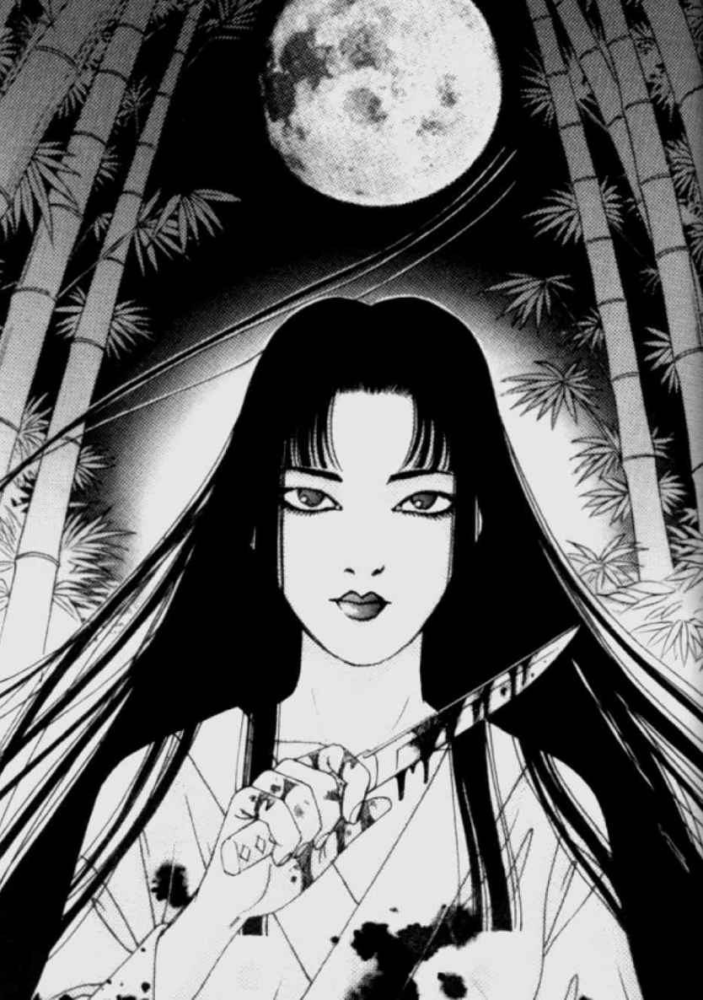
清らかなイメージが先行するかぐや姫だが、原典とされる『竹取物語』を紐解くと、なんと「罪人」である。月で犯した罪を償うために地上に流されたのだ。しかしなんの罪であったかは、明記されていない。
そのかぐや姫＝犯罪者を起点に、まったく新たな説を組み立ててみたのが今回紹介した話でもある。
そもそも「物語の祖」と呼ばれる『竹取物語』は、その成立自体が謎に包まれた作品である。
平安前期ごろに成立したといわれているが、その時期は九世紀半ばから十世紀半ばごろまでと大幅な範囲で諸説あり、絞り込まれていない。
作者についても、三十六歌仙のひとり、僧遍昭、嵯峨天皇の皇子・源融、漢学者の紀長谷雄、学者であり三十六歌仙のひとり源順など、さまざまな説が論じられてきた。
しかし、現在のところは確定できるほど有力な資料はなく、作者未詳が定説となっている。ともあれ仏典や漢籍に通じ、和歌の才能豊かな男性であったと考えられている。
また、もとの書名は『竹取の翁』あるいは『かぐや姫の物語』と呼ばれていたようで、これが紫式部の時代には、すでにかなり知られた物語であった
ことが『源氏物語』の中からも読み取れる。
さらに『万葉集』『今昔物語集』をはじめ、謡曲「羽衣」、昔話『天人女房』など、『竹取物語』との関連を思わせる話も多く残されている。
なお、『竹取物語』は物語の祖であると同時に、宇宙との交流を描いたＳＦ作品でもあった。
確かに月への昇天はもとより、幼子からたったの三か月で、大人の女性に成長してしまうくだりを見ても、何かしら地上の生物ではない生命体をにおわせるものがある。
ただ、今回は月との物理的は交流に代えて、心理的な面から、月との交信を描いている。夜は闇に閉ざされる平安の昔、神秘的な月が、心にやましさを持つ人間を無言で威圧し、狂気に走らせるということが、実際にあったのではないだろうか。
うち続く日照りや洪水、いなごの大発生で、作物が採れず、人々は長い飢饉に苦しんでいました。農民は離散し、町は仕事を求めて流民があふれかえり、町はひどく荒廃していました。
人さらいや盗人が大手を振って歩き、町のいたるところに病で倒れた死体が転がり、思わず鼻を覆ってしまうほどの異臭が漂っていました。そしてそれは甚兵衛という男をたい
そう喜ばせました。
なぜ甚兵衛はそんな町の荒廃した状況を喜んでいたのでしょうか？
それは甚兵衛が生業としている桶屋が繁盛するからです。人が多く死ねば、棺となる桶が必要となり、甚兵衛の商売がもうかるしくみになっていたのです。甚兵衛は死者でもうけた「柳長者」と陰口を叩かれていました。
町はずれの山沿いの一角に、甚兵衛の桶屋はありました。三十も半ばを過ぎた甚兵衛は、いまだに独り者でした。小間使いの女は甚兵衛の屋敷にいくらもいましたが、彼女たちからさえ甚兵衛はまったくもって嫌悪の対象とされていました。
それは甚兵衛が醜い男だったからだとお思いかもしれませんが、しかし実はまったくその逆。甚兵衛は端正な顔立ちをした、なかなかの美男だったのです。
しかしこの男、とても強欲で自分勝手な性格のため、町の者からも別名、「毒蜘蛛甚兵衛」などと揶揄されていました。
これまで甚兵衛に嫁がいなかったわけではありません。何度か若い嫁をめとったこともあったのですが、このけちな男は嫁を働かせるだけ働かせて、ちっとも飯を食わせないので、どの嫁もしばらくするとげっそりとやせ細り、しまいには病気になってしまうのでした。それでもこの薄情な男は、「嫁に食わせるのがもったいない」「薬を買う金などあるものか」と、ろくろく看病もせず、食い物も与えないため、みな実家に逃げ帰ってしまうというありさまでした。
「飯を食うなら、嫁なぞいらん」
それが甚兵衛の口ぐせ。とにかくけちんぼな男でした。
しかも迷惑なことに、甚兵衛はたいそうな女好きで、さらに面食いであるため、美しい女をめとっては里に帰すことの繰り返し。ならば商売女を買えばよいとすすめる人もありましたが、それはけちなこの男のこと、もったいなくてできないというのです。甚兵衛は町の知り合いに、なんとか自分の理想どおりの女はいないかとたずねてまわりましたが、その要望を聞けば、だれもが呆れて取り合ってはくれませんでした。
ある日、甚兵衛は自分で理想の嫁を探し出すために、町中に立て札を出しました。
その文句とはこんな調子でした。
「若くてきれいで、飯を食わず糞をたくさんする、働き者の嫁がほしい」
それを読んだ町の者は、「甚兵衛の求める嫁の条件をすべて表した名文句じゃ」と、ほとほとこの男の強欲さに呆れてました。
「"糞をたくさんする"ってえことは、肥料として売ろうっていう魂胆なんじゃろう。なんて男だ」
「そんな虫のいい話があるわけがねえ。世の中に飯を食わず糞をする人間なぞいるものか。そんな女がいたら、化け物に違いねえ」
立て札の前で、町の者たちは甚兵衛を非難しました。
ところがその数日後、なんと甚兵衛の理想どおりの女が「嫁にしてくれ」と屋敷にやってきたのです―。
それは甚兵衛がうとうとと眠りはじめた四つ時でした。
どん、どん、どん。
激しく戸を叩く者があります。
「だれだ、こんな時間に。ろうそくがもったいないでねえか」
甚兵衛は文句をいいながら、燭台のろうそくに火をともしました。
がらりと戸を開けた甚兵衛は、ろうそくの明かりに照らし出された訪問者の姿を見て、一瞬どきりとしました。
戸口の外には、かかとよりも長く髪を伸ばしたふくよかなひとりの女がつつましく立っていたのです。
甚兵衛の手元の燭台がわずかに震え、炎がゆらゆらと揺れました。女は血のようにまっ赤な唇をゆるめると、妖しくも美しく、甚兵衛にほほ笑みました。
不覚にも一瞬、見とれてしまった甚兵衛は、はっとわれに返り、普段のぶっきらぼうな調子を努めて装いながら、「ご入り用か？」と女にたずねました。
「夜分遅く申し訳ありません。昼間に町中で立て札を見て嫁にしていただきたく思い、お訪ねした者です。おまえ様がお求めなように、わたしは飯をいっさいいただきません。おまえ様の世話をさせていただきますから、どうかおそばに置いてくださいませんか」
女は甚兵衛にそう頼みました。
―こりゃ、たいそうな上玉がきたもんだ。こんないい女が飛び込んでこようとは......。
女はまったく甚兵衛の好みどおりの女でした。太りじしで豊かな胸もと、そして着物から出た手足はまっ白く輝いていました。その肌の白さと対比するかのように、まっ黒に輝く長い長い髪の毛......。
町は飢餓だというのにこの美しさは、甚兵衛には驚きでした。そのうえ、飯を食わないというのだから、その申し出を断る理由はどこにもありません。
「そうか、そうか。まあ、ここではなんだから、中へ入りなされ」
急に目じりを下げた甚兵衛は、女をすばやく招き入れました。
いましがたまでうとうとしていた寝床に女を招き入れると、甚兵衛は女に対する衝動を抑えられなくなっていました。名前や育ちなどを聞く前に、甚兵衛は女を押し倒しました。
「あっ......、お待ちになって。おまえ様の嫁にしてくださるの？」
と女は瞬間、戸惑った表情で、甚兵衛に問いました。甚兵衛は女のそんな問いかけに答えることさえももどかしいといった様子で、女の腰ひもを引っぱると、胸もとをぐっと開きました。
「ああ、いいとも。飯も食わないおまえのような美しい女がこの世にいるとは夢のようじゃ。まさにわしの求めていた嫁とはおまえのことよ」
そういうと甚兵衛は女の乳房をむんずとつかみ、しばらく忘れていた快楽の深みに溺れていったのでした。
それから女は甚兵衛の屋敷に住まうことになりました。女の名はこみちといい、とにかく飯も食わずによく働くので、屋敷の使用人たちもみな感心することしきりでした。これまで甚兵衛が求める嫁などいるわけがないと思っていた使用人たちは、まったくよくできた女もいるものだと感心してそのことをいい触らしたため、あっという間にこみちのことは町中のうわさとなりました。
しかし不思議なことに、こみちの出自を知る者はだれひとりとしていません。
いったいどこからやってきたのか、いくつなのか、こみちに関することは夫である甚兵衛でさえも、知ることはなかったのです。
それでも甚兵衛はまったく気になりませんでした。反対にこみちの両親が後から現れて、無心されたり、世話をすることになるほうがよっぽど面倒だと思っていました。
「それにしてもあれは本当にみごとな女じゃ」
甚兵衛はすっかりこみちの体のとりこになっていました。肉の厚さや肌のなめらかさ、そして一度甚兵衛を抱え込むと、ぴったりと吸いついて離さないその熟れた貝は、これまで甚兵衛がまったく体験したことのない、いやこれまでとはまったく別物のように感じてしまうほどすばらしい物だったのです。さらに甚兵衛をひきつけたのは、こみちの体臭でした。その濃いにおいは野性的な荒々しさがあり、吸い込むとたちまち甚兵衛を奮い立たせました。
甚兵衛はこみちがいかにすばらしい嫁であるかを、町の人々に吹聴してまわりました。
人々はそれを聞くと、たいそう不思議がり、また不気味がりました。
「飯をまったく食わないで、あんなに豊かな体をしているなんて、何か裏があるに違いねえ。きっと甚兵衛どんがいない間に、蔵の米でもむしゃむしゃ食っているのさ。そうでなけりゃ、本物の化け物なのさ」
そんなことをささやき合いました。しかし甚兵衛はそうした町の人々の言葉を、まったく取り合いませんでした。どうせ嫉妬しているのだと思い、反対に彼らをあざ笑っていたのです。
しかし、しばらくたつと、甚兵衛の屋敷で妙なことが起こりはじめました。商売柄、亡くなった人間を桶に入れてひと晩あずかることがあるのですが、ある日桶の中に入っていたはずの死体が、跡形もなく消えてしまったのです。前の晩、桶のふたを釘で打ちつけておいたにもかかわらず、そのふたは強引にこじ開けられ、死体など置かれたことがなかったかのように、中身が空っぽになっていたのです。そして不思議なことに桶の中にはなぜか、黄土色をした粘っこい液体がべったりとこびりついていました。その液体は独特なにおいがしました。
慌てた甚兵衛はその時は桶の中に石を詰めて、そ知らぬ顔をして隣の寺に埋葬していたのでしたが、気味の悪い思いは、甚兵衛の心の中に残りました。
さて、こみちは相変わらず飯を食わず、かいがいしく甚兵衛の世話を焼きました。そして毎晩魅惑的な夜を甚兵衛に味わわせました。甚兵衛はこみちの体から出る甘い蜜をすすると、不思議と嫌なことを忘れ、ぐっすりと眠れるのです。
しかし、死体がなくなるという事件は、その時だけでは終わらなかったのです。
甚兵衛の桶屋はもうかっていましたから、次々と死体の桶をつくる注文がくるのですが、一夜明けてみると、たいてい死体がすっぽりとなくなっているのです。
使用人や職人たちはみなたいそう気味悪がり、甚兵衛が口外しないようにとどんなに釘を刺しても、死体が消えたといううわさは、あっという間に町中に広がりました。
そのうち、さらに恐ろしいことが甚兵衛の屋敷で起こりました。
桶屋の職人の茂助という男が行方不明になったのです。茂助は体のがっちりとした腕の立つ職人でした。
「あのまじめな茂助が何もいわずにいなくなるなんて......」
甚兵衛は不思議でなりませんでした。ところが、続いて茂助と恋仲だった小間使いの女がいなくなると、甚兵衛はなるほどと納得しました。
「さては駆け落ちか。わしがあいつに店を持たせるつもりなぞちっともないことを悟って、自分から出ていきおったに違いねえ。わしにとっちゃ、余計ないさかいを起こされることもなく、好都合というわけだ」
そう勝手に合点すると、甚兵衛はさっそく新しい職人を募るために立て札を町に立てました。
しかしいなくなったのは、このふたりだけではありませんでした。屋敷の使用人だけにとどまらず、庭で飼っている犬や鶏、さらには使用人の子どもたちまでが次々と姿を消していったのです。今や、町中の者が甚兵衛の屋敷を恐ろしがって、近づかなくなりました。
「あの金の亡者のような男は、嫁といっしょになって、使用人たちを次々とどこかへ売り飛ばしているに違いない」
そんなうわさが人々の口から口へと語り伝えられました。
使用人や職人を募っても、人はぱったりと集まらなくなってしまいました。甚兵衛の商売は行き詰まり、そのうち大きな屋敷でこみちとふたりっきり、一日中ぼんやりと過ごすようになってしまいました。
「なぜ、こんなことになってしまったのじゃ。何もかも思いどおりにうまくいっていたというのに......」
そんな甚兵衛をこみちはやさしく慰めるようにいいました。
「町で横行している盗人や人さらいが、ぬくぬくと生きていられて、なぜうちがまるで極悪人のようにいわれるのでしょう」
「まったくいわれのない中傷。まことに腹立たしいかぎりじゃ」
甚兵衛はさっぱり理由がわかりませんでしたが、しだいに、敵の多い自分は、だれかの怨霊に取り憑かれているのではないかと心配になってきました。
そしてある日、甚兵衛はこみちに内緒で知り合いの和尚に相談に行くことにしたのです。
和尚はこれまでの出来事をすべて知っていました。そしてさらにこみちのことを詳しく聞きたがりました。
「なぜこみちのことを？」
そう問い返す甚兵衛に、和尚は、
「なぜじゃと？ これまでうまく行っていたおまえさんの商売がこんなことになったのはこみちが嫁にきてからではないのか？ こみちが怪しいと思うのは当然じゃ。それにしてもおまえさんといっしょになってから、こみちは一度も飯を食っておらぬのじゃろう？ そもそもそれを不思議には思わんのか？」
「そういわれてみれば......」
「実はおまえは知らんだろうが、おまえの住むあたりの裏山には、遠い昔に魔物が住んでいたといううわさがあってな。その魔物は夜になると人を食らっていたらしく、さまざまな残酷な出来事があった。それもちょうど今のように世の中が荒れた時代じゃったらしい......」
「ま、まさか、こみちがその魔物というわけでは......？」
「なんともいえんが、わしは怪しいと思う。今晩、おまえさんは体の調子が悪いとかなんとか理由をつけて、決してこみちと交わりを持つな。もし交わってしまっても、決して女の蜜だけは舐めてはならん」
甚兵衛は和尚の話を聞きながら顔をこわばらせました。和尚は続けます。
「そして眠ったふりをしてじっとしていろ。きっと夜中に何かが起こるはずじゃ。その一部始終をとくと見届けろ」
甚兵衛はこみちが人をさらっているなどとはどうしても信じられませんでした。しかし自分が下手人だと思われてはたまりませんから、真犯人がいるのならなんとかこの目で見てやろうと心に決めたのです。
「もしおまえさんの身に何か危険が迫った時には、この寺の菖蒲(しようぶ)の葉の中に逃げ込むとよい。きっと守ってくれるはずじゃ」
和尚は最後にそう甚兵衛に忠告しました。
家に戻った甚兵衛は、いつものようにそ知らぬ顔をして、こみちと夕餉をともにしました。相変わらず、こみちは米粒ひとつ食べず、にこにこと甚兵衛が食べ終わるのを眺めているだけでした。
―こんなに美しく静かなこみちが、本当に人を食らうような魔物なのだろうか？
甚兵衛はこみちの様子をちらちらと盗み見ては、そんなことを考えていました。
夜のとばりが落ち、そろそろ夫婦の営みの時間が近づいていました。
「こみち、わしは今晩、調子が悪い。先に寝かせてもらうよ」
「まあ、それは大変。心配ですから、早くお休みになってちょうだい」
そういうと、こみちは床をさっと用意しました。やさしいこみちの言葉に甚兵衛はほろりとしました。
「おまえは本当にいい女じゃ。これからもわしのそばにいてくれるな」
「もちろんですよ、おまえさん。余計なことは考えずに、ゆっくりとお眠りなさい......」
甚兵衛はふとんの中で目を閉じて寝たふりをしていましたが、実際にはまんじりともせず、こみちの行動に全身の神経を集中させていました。
ちょうど丑三つを過ぎたころでしょうか。
甚兵衛の耳に、がさがさと何かが床を這うような音が聞こえました。甚兵衛は緊張で身を固くしました。それは何か大きな生き物が、ものすごい速さでうごめいているような音でした。甚兵衛の全身の毛穴から冷や汗が吹き出しました。
―何かがこの屋敷にいる......！
しかし、甚兵衛がそのまま床の中でじっとしていると、部屋を這いまわる音は消えてしまいました。
夢だったのだろうか―。
しばらくすると、甚兵衛はうとうとと眠りはじめました。
それからどれくらい時間がたったでしょう？
甚兵衛は妙な音で再び目を覚ましました。
くちゃ、くちゃ、くちゃ。
暗い部屋の中で、何かを食っているかのような、また舐めまわしているような、そんな不気味な音でした。
―今度こそ目をあけて、しっかりと見てやるぞ！
甚兵衛はそうっと目をあけました。
その時、甚兵衛の目に入ってきたのは、月明かりの中に浮かび上がった意外なこみちの姿でした。
こみちは甚兵衛に背を向け、床に裸で両足を広げて座っていたのです。 ―こ、こみち⁉ いったい何をしているのだ？
どうも様子が変です。こみちの背中は妙な動きをしていました。上下、左右、そして斜めにも波打つように動いています。
そして次の瞬間、甚兵衛はぎょっとしました。
こみちのそばに腕のもげた男の体が転がっていたのです！ こみちは、その男の頭をつかんだかと思うと、おもむろに体から引きちぎりました。
甚兵衛はあっと叫びそうになりました。その男の首は、今日、甚兵衛が相談に行った和尚の物ではありませんか。
こみちは引きちぎった首の肉をさらに細かくちぎると、自分の体にある穴という穴、つまり口、鼻、耳、尻......に次々と押し込みはじめました。すると穴がまるで別の生き物の242
ように、肉をくちゃくちゃと食い散らしはじめたのです。
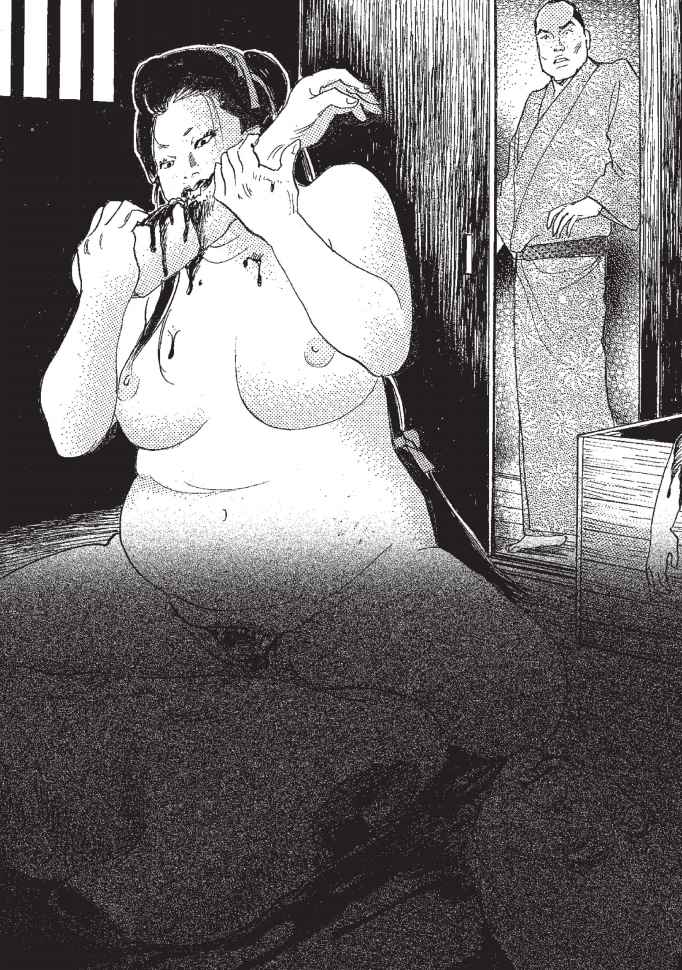
「うぐぇ」
吐き気をもよおした甚兵衛は、思わず声を上げてしまいました。
すると裸体のこみちが、はっと振り返り甚兵衛のほうを見ました。
「うわああああ！ た、助けてくれ〜！」
こみちはにやりと笑うと、
「あんたが今朝、この坊さんのところに行ったことぐらい、お見通しだよ。しかもあたしの正体がばれてしまったからには、おまえもいっしょに食ってやるさ！」
甚兵衛は目を大きく見開いたまま、ガクガクと震えていました。
するとこみちの八つの穴からまるで木の根っ子のような八本の足がにょきにょきと生えてきたのです。そしてこみちの長い髪の毛が、一気に逆立ったかと思うと、するすると伸び、部屋いっぱいに張り巡らされました。
みるみるうちに、こみちは人間の男の倍はあるかというほどの、大きな黒い蜘蛛に姿を変えたのです。甚兵衛が髪の毛と思ったものは、蜘蛛の糸でした。
「そ、それがおまえの正体だったのか......」
「そうさ、毒蜘蛛の嫁も毒蜘蛛だったというわけさ！」
大蜘蛛は長い手足をわさわさと動かしながら、じりじりと甚兵衛のほうへにじり寄ってきます。
「うわあ、ち、近寄るんじやねえ〜！」
足腰が立たなくなった甚兵衛は、四つん這いになったまま、なんとか逃がれようと部屋中を這いまわりました。
「あたしから逃げられるとでも思っているのかい？」
大蜘蛛はせわしく手足を動かしながら、逃げる甚兵衛の後を追いかけてきます。
「あんたはあたしの蜜の味が大好きだったね」
大蜘蛛は黄土色をした液体を口から甚兵衛に向けて、ぴゅっと吹き出しました。
「うわわわあ」
べたべたした液体が顔一面に張りつきました。そのにおいは確かにこみちの股の間から毎夜出ていた、甚兵衛が愛しく思っていたあの蜜の味でした。
―わ、わしは蜘蛛の液を舐めていたのか！
吐き気をもよおしながら、家を飛び出すと、甚兵衛はがむしやらに走り、なんとか寺に逃げ込みました。
―和尚がいっていた菖蒲に隠れなくては！
甚兵衛は何度も転びながら寺をめざして、走り続けました。
しかし、すぐ後ろに迫った大蜘蛛は長い足をにょきにょきと伸ばすと、甚兵衛の右足をすばやく捕えました。
―ああ、もうだめだ、食われてしまう！
ものすごい力で、甚兵衛は足からずるずると蜘蛛のほうへと引っぱられました。
「ああああっ」
甚兵衛は地面を引きずられながら、最後の力をふりしぼると、近くにある草の葉をもぎ取り、大蜘蛛に突き剌しました。
と、その瞬間です。
「うむぉうわ〜！」
奇妙な叫び声を上げたかと思うと、大蜘蛛の両目から、蒸気が立ち上り、全身がみるみるうちに溶けはじめたのです。甚兵衛が呆気に取られていると、絡みついていた蜘蛛の長い毛むくじゃらの足が、力なくだらりとほどかれました。
しばらく呆然としていた甚兵衛がわれに返り、手の中にある物を見ると、なんとそこには和尚のいっていた菖蒲の葉が残っていました。
屋敷に戻った甚兵衛は不審なことがないか、屋敷をくまなく探しました。すると屋敷の物置の天井には巨大な蜘蛛の巣が見つかり、ところどころに繭のように白く巻かれた物体がありました。それらは以前、甚兵衛の屋敷で働いていた使用人や子どもたちの変わり果てた姿だったのです。甚兵衛は、
―わしが強欲だったばかりに、あんな化け物につけ込まれてしまったのだ。みんなには本当に悪いことをしてしまった。すべてはわしのせいじゃ......。
そういって忌まわしい記憶をすべて消すために、蜘蛛の巣が張り巡らされた物置をすべて焼き尽くしました。
甚兵衛はそれまでの自分自身をいたく反省しました。
そして、それからというもの、亡くなった人々のために銭を取らずに桶をつくり続けたということです。
甚兵衛の事件の後、五月の節句には、魔よけとして菖蒲を軒先に飾る習慣が生まれたということです。
飯を食わずに生きられる人間はいない―。
その常識を改めて示すように、日本全国に分布しているこの話の結末では、人間でない女の正体が明らかにされる。とはいえその正体は地域によって異なっている。
大きくわければ、東日本では、頭に巨大な口を持つ山姥、西日本では巨大な蜘蛛だという説が主流である。また、ちょっと異色なものでは、女が体中の穴という穴に、握り飯を放り込み、体中をもぞもぞさせながらかむ話や、体は人間のままなのに、頭だけへびになる話など、さまざまなバリエーションがあってなかなか楽しい。
飯を食わぬ女房の正体がわかってから、結末へ向かっては、さらに大きくふたつにわかれる。
女房の正体が、山姥や鬼であった場合は、けちんぼ男を桶に入れ、山奥へと担いで行こうとする。男は途中で、本の枝にぶら下がり逃げ出すが、それに気づいた山姥に追いかけられる。
あわや、というところで男が菖蒲の生い繁る茂みに飛び込むと、菖蒲に触れた山姥の体が溶けていくというもの。
これは、五月五日に家の軒先に菖蒲を飾る風習の由来として語られる。
またもうひとつ、正体が蜘蛛である場合だと、正体を見破られた女が、いついつの晩に男を食ってやるといい残して去る。男はその日、煮えたぎった
湯を用意しておき、予告どおり現れた化け蜘蛛をその中にたたき落として、ゆで殺してしまう。
こちらは、夜の蜘蛛は「親に似ていても殺せ」ということわざにつながっていくことが多い。また、このふたつが、混在しているものもある。
さて、この女房だが、驚くような量の飯をこっそりと食べていたという話が多いが、それを文字どおり受け取っても、飯とは別に人間も食すと考えられる。なぜなら、同じ話の中で自分の夫であった男を、仲間のみやげとして
連れて行こうとしたり、夜中に襲って食ってしまおうとしているからだ。おとなしい女房の仮面を脱ぐと現れる、人食いの素顔......。
しかし、この女の正体は本当に蜘蛛や山姥といった化け物だったのだろうか。 飢饉やらいくさで、食べ物がほとんど口に入らない......。そして周辺には死んだばかりの死体がごろごろしている。そんな時この桶屋のように、いく
らでも死体が手に入る立場にいたとしたら......？ 死体の肉を剥いで、これを魚の干物とか、鹿の肉といって客を騙して売る人間がいたことだって考えられるのではないか。そして買うほうも、少々のいかがわしさを感じながらも、生きるために深く詮索せずに、買って食べていたのではないだろうか。
この人食い女は、そんな人間のあさましい心が具現化された話だったのかもしれない。
この世に男と女が存在するかぎり、男女をとりまく不幸な話が絶えることはありますまい。
時代がどんなに変化しようとも、また生活がどんなに豊かになろうとも―。
この「雪女」の物語も、男の心変わりが招いた悲劇といえるでしょう。それは越後の雪深いある山村で起こった悲しい出来事から発した物語でした。
その村には長吉というひとりの若者がおりました。長吉は貧しい小作人でしたが、丈夫で立派な肉体を持つ働き者でしたので、村人だけでなく名主からもたいそう信頼される存在でした。
長吉には同じ小作人のお文という恋仲の娘がおり、近い将来、ともに所帯を拷つことを密かに約束し合っていました。
村ではここ何年か豊作が続き、年貢の取り立てが厳しいにもかかわらず、長吉たち小作人でも、なんとか生きていくだけは困らない状態を保っていました。
しかし米作をしていながら小作人たちの食べるものといえば、稗（ひえ）、粟（あわ）、芋、豆ぐらいで、白い米を口に入れることもなく、当時お上が奨励した「生かすな、殺すな」という言葉がまさに生きている時代でした。
秋晴れのさわやかなある日、村では一年の豊作を祝う秋祭りが行われていました。田の神に感謝し、初穂を供え、新米で作った神酒（みき）で神をもてなすこの祭りは、一年で一番にぎやかな行事ごとでした。
村の者が酒を飲み、にぎやかに蹄り歌うなか、長吉とお文はふたりでこっそり祭りを抜け出しました。
普段、日が昇ってかち沈むまで田畑で働き詰めの小作人にとって、祭りのように昼間から自由に羽根が伸ばせる日はまれであり、若い長吉とお文はゆっくりとふたりっきりの時間を過ごそうとしたのです。
ふたりは村のはずれにある粗末な厩（うまや）をその場所に選びました。馬が数頭いるだけのすすけた厩には自分たちのほかにだれもいません。
馬の体臭と藁の湿った臭いが充満した小屋で、ふたりは祭りの解放感と酒に酔った勢いでかなり興奮していました。
厩に入るなり長吉はお文の乳房を粗末な潜物の上からまさぐり、唇を強く吸うと、厩の隅の藁の上に押し倒しました。白い柔肌が昼間の明るい光にさらし出したお文は、長吉を誘うように体を広げると、ふたりは互いの体を貪り合いました。
途中、お文が、
「おっとうが探しているかもしれない。そろそろ帰らにゃ」
と心配顔でいっても、長吉は、
「まだ、大丈夫。もうちょっとだけそぱにいてくんろ」
といってお文を離しませんでした。お文も幸せな思いでうっとりとして、粗末な藁葺き（わらぶき）の屋根を長吉の肩越しにぼんやり眺めていました。
ちょうど同じころ、もうひとり、祭りを抜け出し厩に向かう者がいました。名主の娘、お菊です。お菊はつややかな黒髪が自慢の、大きな瞳の美しい娘でしたが、小作入たちの間では、わがままで高慢ちき、また何をいい出すかわからないお天気屋と思われ、小作人たちはお菊の言動にいつもびくびくしていました。
しかし名主にとってこのお菊は、目に入れてもいたくないはどかわいいひとり娘。わがままな性格も名主にとってはさらに愛しく思うひとつの要素にすぎませんでした。
ですから小作人たちはお菊からどんなに侮辱きれようと、理不尽なことをいわれようとも、決してさからうことはありませんでした。
お菊は小作人たちが昼間から酒を飲んだり、騒いだりする祭りをどうしても好きになれませんでした。プイッと人込みから姿を消すと、ひとりで村外れの厩に向かったのです。
「あんな無粋な輩（やから）と過ごすぐらいなら、馬の相手でもするほうよっぽどましよ」
そういいながらお菊は厩に足を踏み入れました。すると奥から人の声が聞こえてきます。
いたずら好きのお菊はそっと中に忍び込み、祭りを抜け出した小作人を驚かせてやろうとしました。
お菊がその人影に近づくと、つながれた馬の奥に敷かれた藁に、寝転んでいる人影が見えます。お菊は思わず「あっ」と声を出しそうになりました。
お菊は、長吉とお文が藁の上で愛し合う姿を見てしまったのです。
お菊の心臓は、きゅんと痛いほどに縮こまりました。男女が裸で重なり合うのを、お菊は、これまで一度として見たことがありませんでした。
また小作人の日に焼けた無骨な体が、自分をこんなにドキドキさせるものだということも。
お菊にはまるで男が野獣のように猛々しく見えました。
初めての体験に興奮しながらお菊は息を殺して、男の荒い息づかいやたくましい背中、激しい腰の動きを魅入られたように見つめていました。
とそのとき、馬がぬっとお菊に長い顔をすり寄せてきました。
驚いたお菊は「きゃっ」と声を上げてしまいました。「しまった」と思ったときにはすでに遅く、お菊は後ろを振り返った長吉としっかり目を合わせてしまったのです。
お菊の顔は真っ赤に染まり、逃げるように厩から飛び出すと、全速力で走り去りました。
その晩、お菊は厩で見た光景をひとり思い出していました。長吉のがっちりとした背中、引き締まって脂肪のないゴツゴツとした尻、荒々しい動きとともに出される切ない吐息...。
普殿は着物の下に隠れて知らなかった男の体を思うと、お菊の体は火照り、のどはからからに渇くのでした。
「長吉......」
と無意識につぶやいたお菊は、自分が恋してしまったことに気づきました。
「あそこにいたのが、お文じゃなく自分だったら...」
そう考えると、お菊は思わず顔を赤らめてしまうのでした。
秋が過ぎ、徐々に寒さが厳しくなった冬のある日、名主は娘のお菊を自分の部屋へ呼び出し、顔色をうかがいながらいいました。
「おまえもよく知ってのとおり、わが家には不幸にも男が生まれず、おまえはわが家のたったひとりの娘じゃ。世継ぎはおまえしかおらん。十五になったおまえに、そろそろ婿を取ろうと思うのじゃが」
「おとっつあん、実はあたし、もう心に決めた人がいるの」
お菊は父親の目を見てきっぱりとそういいました。父親は思いがけぬ娘の言葉に面くらい、
「心に決めた男とは、そりゃだれのことじゃ？」
と問ただしました。
「長吉じや」
「なに？長吉が小作人ということはおまえもよく知っとろうに。いくら長吉が働き者だからというて、わしの後を継がせるわけにはいかん。それは認められん！」
「じゃあ、あ、あたし、一生独りでいるわ」
お菊はプイっとそっぽを向くと、かわいらしい口びるをツンととがらせました。
「おとっつぁんなんてきらいよ」
「まあまあ、お菊、そうふくれるな。長吉じゃなくとも、もう少しましな男はいくらでもおるじゃろ。わしがいいのを見つけてやるからに」
「いいえ、おとっつあん。あたしは長吉じゃなきゃ絶対にいやなの。絶対にね」
名主は、お菊の思いが堅いことに驚きました。
「しかし長吉はどう思っとる？ あいつは幼なじみのお文と仲が良かろうに」
名主がそういいかけると、お文はヒステリックに返しました。
「それがなんだっていうの！ あたしが夫婦（めおと）になってあげるといったら、長吉は泣いて喜んでわが家に婚に来ることでしょうよ」
名主は娘のわがままに弱り果てました。
しかし長吉が働き者であることはよく知っていましたし、健康で丈夫な体をしている長吉なら、きっと立派な孫を作ってくれるに違いない。
お菊がそこまで惚れているのなら、かわいい娘の望むこと、それもまた悪くはあるまい、と思いはじめていました。
数日後、長吉は名主からお屋敷に呼び出されました。
長吉は秋祭りを途中で抜け出したことを咎（とが）められるのだろうか、それとも何かへまでもしでかしたのだろうかと内心びくびくしていました。
屋敷に通され小さくなっている長吉に名主は、
「おまえ、いくつになった？」
とたずねます。
「はい、おかげさまで今年で一八になりましたが」
「体の調子はどうじゃ？」
「はあ、ごらんのとおりピンピンしとりますが」
長吉はきつねにつままれたような表情で答えました。
「...そうか、それは何よりじゃ。いや、実はな、 お菊のことで話があるんじゃが......」
「はあ」
「何があったのかわしは知らんが、お菊がおまえのことをたいそう気に入ってな。おまえ以外の者とは、夫婦になりたくないというのじゃ」
長吉はあまりにも話の意外な展開に驚き、目をまん丸くして言葉を返すのも忘れていました。
「そこでじゃが、わしはできればお菊を惚れた男と一緒にさせてやりたいと思うておる。しかしお前えにはお文といういいなずけがおるようじゃな。おまえの気持も聞かせてくれんか？」
長吉はなんと答えてよいやら、ただただびっくりしてしまいました。
―わしとお文の厩での交わりを見たあのお菊がなぜわしを？ しかも夫婦じゃて？
しかし次の瞬間、長吉の口からこん言葉がすらすらと出てきました。
そのとっさの言葉は、長吉自身をも驚かせました。
「はあ、お文は小さなころからの幼なじみでして、いいなずけとはいっても、親同士が子供のころに勝手にいっておっただけでして。わしらは特別なつもりはないんですら......」
快活で美しいお菊に惚れられたこと、名主の家へ婿入りすること―それらを前にすると、お文と誓った結婚の約束など、ごみくずのようにどうでもよいものに思えました。
「おお、そうか、そうか。じゃあお文とは特に深い仲というわけではないのだな。それではさっそくお菊との話を進めてみてはどうじゃ？」
「はあ、わしのような身分の低い者でよろしいのであれば喜んで...」
名主の家を呆れ顔で出てきた長吉は、ただもう夢を見ているようでした。そして名主のお屋敷を振り返り、
「これですべてわしのものになるのじゃ」
とひとり感慨深げに見上げました。
―名主の家に婿入りすることになれば、もう日々の食い物の心配をすることもあるまい。日が昇ってから沈むまで休みなく働き、夜は夜で藁草履（わらぞうり）を作る小作人の生活には、もううんざりじゃ。うまい酒を好きなだけ飲み、そして人形のように美しいお菊をこの腕に抱く。わしはそんな生活を送る名主になるのじゃ！
夢のような生活がもう少しで手に入るところまで来ている、長吉にはそう思われました。
「なんとしても手に入れたいものじゃ」
しかしそんな長吉の都合のいい話を阻む大きな障害がありました。
それはお文でした。お文はすでに長吉の子供まで身ごもっていたのです。
「さて、お文のことを名主様にああいうてしもうたが、どうしたもんかのう...」
.働き者でよく気のきくお文のことを決して嫌いではありませんでしたが、名主として人生を送れるかもしれない状況で、お文と一緒になり小作人のまま一生を終える生活を選ぶことなど、長吉にはどうしてもできませんでした。さらにあのわがままで高慢ちきなお菊を我がものにできるということも、長吉の征服欲をかき立てました。
「お菊様の美しさと気高さにくらべれば、お文などどこにでもいる肥（こえ）臭い女のひとりにすぎん。わしのいうことならなんでも聞くただの雌犬じゃ。わしはお菊様のような才のあるお方を女房としたい。お屋敷にどうしても婿入りしたいものじゃむ...:ううむ、なおさらお文をなんとかせにゃならん。さてどうしたものか」
今や長吉にとってお文のお腹にいる子供のことなど、自分とはなんの関係もない遠い存在のように思えました。長吉の頭にあるのは、婿入りするためにお文とそのお腹の子をどう始末すればよいかということだけでした。
次の日、長吉はお文をだれもいない農具小屋に呼び出しました。それは冷たい風の吹く夕暮時で、パタリパタリと壊れた木戸が寂しく鳴っていました。
「...待ったかね」
お文は息を切らせながら駆けてきました。長吉は思案顔で遠い目ををしていました。お文に呼ばれて初めて気づいた長吉は、
「ちょっと歩くか」
というとふたりで山に向かって歩き出しました。
「長吉さん、そろそろおっとうとおっかあにお腹の子のこと話したほうがよかと思う。それにはよ嫁入りしたいがや」
お文は腹をさすりながら笑顔でいいました。
「待てお文、それはいかん。ちょっと面倒なことになつたんじゃ」
長吉は立ち止まって、さも弱ったような顔をしました。
「面倒なことってなんです？」
お文は驚いて長吉の顔を見上げました。
「秋祭りの日、名主様のお嬢様に厩のことを見られたろ。それでわし、名主様に呼び出されたのじゃ」
「なんでや。別に悪いことなんかしてなか。うちら一緒になるんやし」
「いや、責められたわけじゃない。しかし驚いたことに名主様は、わしとお菊様を夫婦にしたいとおつしゃるのじゃ。しかしわしにはおまえがおる。それでわしはお文と一緒になるつもりじゃし、すでにお文はやや子を身ごもっておると名主様に話したんじゃ」
「そしたら、なんじゃて？」
「いや、それでもお菊様は納得せなんだ。わしじゃなきゃ一緒にならんとわがままをいいなさって、わしがうんといわんなら、家族ごと村から追い出すというんじゃ」
「そんなひどい話...」
お文はわっと、両手で顔を覆い泣き出しました。
「いったんは考えさせてくれというて帰って来たんじゃが...・..。でもわしが一緒になりたいのはおまえだけじゃ。子供のころからずっとそう思っとった。おまえ以外には考えられん。でももし断ったら家族が食っていかれなくなる。お菊様のわがままでわしらの将来はめちゃくちゃじゃ。わしはどうしたらいいんじゃ」
お文はしくしくと泣き続けましたが、長吉に強い口調で訴えました。
「長吉さんと一緒になれんだったら、うちは父なし子を孕（はら）んだいうて家から追い出される。うちのおっとうやてそんなことしたら長吉さんを死ぬまで恨むに違いないない」
長吉はこの言葉を聞いて「やはりやるしかない」と決心しました。
どれくらい沈黙が続いたでしょうか長吉が重々しく口を開きました。
「お文、わしと一緒に死のう、それしかわしらがひとつになれる道はない」
お文は一瞬びっくりしましたが、長吉の思いつめた眼差しを見て、意を決したように、
「長吉さんがそういうなら」
と目を真っ赤にしてうなずきました。
それからひと月ほどたつた吹雪の激しい晩、家の者がみな寝静まるのを見届けたけた長吉は、蓑をかぶり深い藁靴をはき、しっかり寒さを防ぐと、お文を家からこっそり誘い出しました。
お文は襦袢（じゅばん）に半纏（はんてん）を羽織っただけという軽装でした。
雪が激しく吹きすさぶ中、険しい山道を登っていくと、体の芯から凍るほどの冷たい風がひゅうひゅうとふたりの耳をかすめました。
長吉はお文の手を強く握り、雪山のの億深くまでぐいぐい引っ張って進みました。
しばらく歩き続けたふたりは、山の中腹にある一本の大きな木の下にたどり着きました。
長吉はお文の両手をつかみ、
「お文、ここがええ」
といって冷たい雪の中に座らせました。
そして自分もその横に腰を下ろすと、無言で寄り添い、降り続ける雪が体をおおってゆくのを見つめていました。
「......長吉さん、痛い...・痛いよ......、お腹が痛いよ....」
と何度も何度もつぶやきながら、お文はすでに寒さで感覚のなくなりつつある手の平に最後の力を込めて、ぎゅっと長吉の手を握りました。そして、長吉も寒さにガタガタと震えていましたが、頭にあるのは「お文が早く眠ってくれないか」ということだけでした。
しばらくするとお文は長吉の思惑どおり、頭を長吉の体にあずけ眠るように目を閉じました。
寒さを必死にこらえていた長吉はお文が眠ったことを見届けると、そっとお文の体を木の幹に寄りかからせました。お文の体の下にある雪は、鮮血で赤く染まっており、腹の子が死んだことを知らせていました。
そして自分は体に積もった雪を払いのけると、来た道をさっさと戻りはじめました。
次の臼、村はお文がいなくなったことで大騒ぎになりました。
お文の家族をはじめ、村人たちは必死で行方を探しましたが、だれもお文を見つけることはできません。
お文が子を宿していたことを知る者はだれもいませんでしたし、長吉が怪しまれることはありませんでした。
そうこうするうちに春になり山の雪も溶けはじめました。
村人はお文の死体が出てくることを期待しましたが、不思議なことに死体が出てくる気配はいっこうにありませんでした。
夏になり、長吉はお菊と結婚し、名主の家へ婿入りしました。
お菊は相変わらずわがまま放題でしたが、なぜか長吉とは仲むつまじく、しばらくするとお菊ば妊娠し、名主をたいそう喜ばせました。
お文の家族はお文の失踪と長吉の結婚が関係あるのではと勘繰りましたが、お文の死体すら出てこない状況で、長吉を責める証拠などどこにもありませんでした。
季節が過ぎ、村の者は忙しい日々の仕事のために、お文の失踪を次第に忘れはじめていました。
秋が過ぎ、また厳しい冬が村にやって来て、そろそろ一年が終わろうとしていました。
正月を前にしたある日、名主に用事をいいつけられた長吉は、雪山を越えてとなり村まで出かけることになりました。
用事を済ませた長吉は、「日が暮れるまでに早く山を越えてしまわねばと家路を急ぎました。
長吉が山の中腹まで来たころ、雪はさらに激しさを増し、視界はほとんど真っ白で、前も後ろもわからない状態になっていました。
夕闇は次第に濃くなり、長吉はすっかり道に迷ってしまったことに気づきました。
それでも手探りで山の奥へとさらに進みました。「どこかの民家にたどり着くのでは」と一抹の望みにかけたのです。
どれほど歩いたことでしょう。長吉は寒さと疲労で歩く気力をほとんどなくしていました。そして一本の大きな木の下に倒れ込むように腰を下ろしました。
とそのとき、一瞬雪が激しく舞い上がり、長吉の体を真っ白く包み込みました。
「うわっ」という言葉と同時に、長吉は両手で目を押さえましたが、粉雪が目に入り開けられません。必死に手でこすり雪を落とすと、ぼんやりとした視界の向こうに、ひとりの見知らぬ女の姿が見えました。
「助かった！ 人がいるぞ」
長吉はうれしくなって、女に「おおい」お大きく手を振りました。
女はゆっくりと長吉に近づいてきます。
雪のように真っ白い肌をした女は白い着物を着て、腕には赤子を抱いていました。
「このあたりに住んでいるかたですか？」
と長吉がたずねると、
「いいえ、となり村からの帰り道、雪が激しく道に迷ってしまった者です」
と女は答えます。そして長吉にこんな頼みごとをしたのでした。
「実は、持ち物を雪の中に落としてしまったようなのです。私が探している間、この子をしばらく抱いていてくださいませんか」
「そんなことはお安いご用。わしがちゃんと見ているから、安心してお探しなさい」
長吉は女から子供を受け取ると、両腕に抱きかかえました。女は子供を長吉に渡すと、あっという間に見えなくなりました。
「白い着物だから雪に紛れてしまったのか？」
長吉は不思議に思いましたが、日の暮れた雪山で入に会えたことが嬉しく、それ以上は考える気も起りませんでした。
雪は激しさを増し、やむ様子がありません。長吉は吹雪の中、女が戻ってくるのをじっと待ちました。
十分、二十分たったでしょうか。それでも女はいっこうに戻る気配がありません。
長吉は腕がだんだんだるくなってきました。心なしか赤子の体重が重くなったような気がします。
三十分、四十分、女はいくら待っても戻ってきません。
赤子の体重は先ほどにも増してどんどん重くなります。
「これはいったいどういうことだ？」
長吉はふとその赤子の顔を見ました。白い雪に月明かりが反射し、赤子の顔を薄明るく照らし出しました。
その瞬間、長吉は「ひいいっ」と叫び声を上げ、思わず腰を抜かしそうになりました。
なんと長吉の腕にしがみついている赤子は、皮膚が腐り、眼球のあたりが深く落ちくぼんだ、ミイラのような顔だったのです-。
長吉はびっくりして赤子を振り落とそうとしましたが、赤子は長吉の体にくっついて腕を離しません。
そうこうしているうちに赤子の体重はどんどんと重くなっていきます。
だんだん手足がしびれてきて、しまいには長吉の足元は、重みで雪の中に沈み込んでいきました。
声を上げて助けの者を呼ぼうとしましたが、声を出すこともできません。
冷えた体は全身の感覚を麻痺（まひ）させ意織も朦朧（もうろう）としてきました。
とそのとき、先ほどの女が雪まじりの風にゆらゆらと着物をたなびかせながら戻ってきます。
「おい女、この子はいったい何者じゃ！ だんだん重くなるぞ。早くどけてくれ！」
と長吉は全身のカをふりしぼって叫びました。すると白く美しかった女の表情はみるみるうちに鬼のような形相になり、半分雪に埋まった長吉を見下ろすと、
「長吉、それはお前の子じゃ！」
とまなじりをつり上げ激しい調子で答えました。
「何をおかしなことをいっとるんじゃ...早くだれか助けの者を......」
そういいかけてはっとしました。
「まさかこの女、お文......！？」
長吉は女の顔をまじまじと見つめました。しかし降りしきる雪がじゃまをして、はっきりとはわかりません。目をこらしていると、突然、女の真っ白い顔が長吉の耳元に現れました。そして怒りを押し殺すように、しかしはっきりといいました。
「わしをだまして雪山に残すくらいなら、いっそひと思いに殺してくれたほうがよっぽどよかったわ。わしはあの晩、寒さの中で再び目を覚ました。しかし隣にいるはずのおまえはすでにおらんかった。寒さに凍えながらお腹の子が死んだことを知ったわしの悔しさがおまえにわかるか！」
「い、いや、あの夜のことは確かにわしが悪かった。わしは途中で怖くなったんじゃ。決しておまえを最初から殺そうとしたわけじゃない。死ぬのが怖くなって逃げだしたんじゃ！」
長吉の必死のいいわけに、女は心底から怒りを表すかのように、長い黒髪をカッと広げて風を舞い上げると、やがて男を蔑むような表惰になりました。
そして雪に紛れ、すっと長吉の目の前から消えてしまいました。
「お文！ 待ってくれ！ 頼む、この子をどけてくれ~！！」
長吉の叫びも空しく、冷たい吹雪の中で、長吉はそのまままずるずると降り積もった雪の中へと埋まっていきました。
しばらくすると雪は止み、あたりはうそのように静けさを取り戻しました。
白々とした月明かりだけが、何事もなかったようにあたりを照らしていました。
冬が過ぎまた春がやってくると、溶けた雪の下から行方知れずになっていた長吉の死体が発見されました。長吉は大きな石を両手で抱いて死んでいたということです。
それからというもの、正月前の夜の雪山には、赤子を抱いた白い着物の女が現れ、若い男に頼みごとをするということです。「この子を抱いてほしい......」と。
長吉が最後まで自分の罪を認めなかったために、成仏できなかったお文の霊なのでしょうか。
人々ば雪山に現れるこの霊を「雪女」といって恐れ、この物語が語り伝えられたということです。
この話は和歌山など温暖な地域でも見られるが、主な分布は、青森や新潟、
山形など、やはり冬の間長く雪に閉ざされる豪雪地域に多く残されている。
昔話に登場する雪女にはいくつかのパターンがある。
ひとつには、雪の中で出会った者を若い女の姿で誘惑し、殺してしまうもの。また、赤子を人に預け、預かった赤子が、抱いている人の腕の中でどんどん重くなっていくもの。これは最後に殺される場合と、大力を得る場合とがある。
その他に突然爺婆の前に現れ、そのまま娘としていつくが、最後は風呂の湯で溶けてしまうというものもある。
雪女は小説でも語られる。
小泉八雲の小説『雪女』に登場する雪女がそうで、これは新潟・富山・長野で伝わっているものと同じパターンだ。
吹雪の日、雪女は山小屋に避難していた猟師の親子の父親を凍死させるが、
息子のほうは、「人に話さぬ」約束で助ける。後に見知らぬ女が息子の前に現れ、夫婦となり子をなす。ある日男が約束をやぶって雪女の話をしてしまうが、子供のために男の命は取らずに去っていく。
雪女は、色白できれいな顔をした女の姿をしているが、その正体もさまざまで、妖怪だという説、吹雪で行き倒れた人の霊魂だという説、お産で死んだ女や孕んだまま死んだ女の霊など諸説がある。
独特なのは、一年の特定の日に現れるものがいること。
岩手の遠野では小正月の夜、あるいは冬の満月の夜に、たくさんの予供を連れて遊ぶのだという。脊森では元旦になると現れ、最初の卯の日に帰っていくそうだ。
こういう場合は、妖怪よりも祭神的な性格が強く、雪女を手厚くもてなしたところ、翌臼雪女が黄金に変わっていたという、昔話『大歳の客』と同じような話も語られている。ちなみに日本には、雪女のほかに、雪入道などの男性や、雪の夜に木の枝にぶら下がり発光する雪なめなど、雪の妖怪は多く見られる。
みなさん、古くから伝わる"本当の"童話はいかがでしたか？ 人肉や汚物を食したり、男色に目覚めたり、強姦したりと、現代ではタブーとされている話ばかりです。
ですが、このエロスやグロテスクな行為、狂気の感情というものが、人間が隠し持っている本能であるとはいえないでしょうか。日本の童話には、今の現代では明るみにできない闇の真実が描かれているからこそ、現代人の目にはより魅力的に映るのではないのでしょうか。
本文中に一部差別的な表現が含まれておりますが、民俗風習学的に見て近代日本の風俗・習慣をそのまま伝えるために使用しておりますことをご了承ください。
『日本昔話大成』関敬吾編／角川書店 『日本昔話名彙』柳田国男監修／日本放送出版協会 『日本伝説大系』荒木・
野村・福田・宮田・渡辺編／みずうみ書房 『日本昔話事典』稲田・大島・川端・福田・三原編／弘文堂 『生き
ている民話』湯山厚／新少年少女教養文庫 『日本昔話百選』稲田浩二・稲田和子／三省堂 『日本児童文学大系』
福田清人他編／ほるぷ出版 『御伽草子（上）（下）』市古貞次校注／岩波文庫 『マンガ日本史』市川正徳編／集
団形星 『昔話 伝説の系譜 東アジアの比較説話学』伊藤清司／第一書房 『日本動物民俗誌』中村禎里／海鳴社
『昔話の時代』稲田浩二／筑摩書房 『陰陽道の本 日本史の闇を貫く 秘技・占術の系譜』／学研 『昔話の深層』
河合隼雄／福音館書店 『女装の民俗学』下川耿史・磔川全次・田村勇・畠山篤／批評社 『蛇物語 その神秘と
伝説』笹間良彦／第一書房 『昔話の民俗学』桜井徳太郎／講談社学術文庫 『日本の民話』日本民話の会編／講
談社 『昔話にみる悪と欲望---継子・少年英雄・隣のじい』三浦佑之／新曜社 『日本の民話４００選』永田義直
編著／金園社 『別冊國文学 昔話・伝説必携』野村純一編／學燈社 『昔話・伝説小事典』野村・佐藤・大島・
常光編／みずうみ書房 『民俗の事典』大間知・川端・瀬川・三谷・大森・大島編／岩崎美術社 『中世寺院の風景』
細川涼一／新曜社 『日本の昔ばなし（Ｉ）（Ⅱ）（Ⅲ）』関敬吾編／岩波文庫 『江戸語・東京語・標準語』水原明
人／講談社現代新書 『昔ばなしとは何か』小澤俊夫／大和書房 『昔話のコスモロジー』小澤俊夫／講談社学術
文庫 『日本の世間話』野村純一／東書選書 『柳田國男全集』／ちくま文庫 『お伽草子』太宰治／新潮文庫 『昔
話と日本人の心』河合隼雄／岩波書店 『昔話の年輪
80
選』稲田浩二／筑摩書房 『日本昔話通観』稲田浩二・小
澤俊夫編／同朋舎 『日本神話の起源』大林太良／徳間文庫 『日本伝説集』高木敏雄編／宝文館出版 『遠野物語』
柳田国男／角川文庫 『グリム童話集』金田鬼一訳／岩波文庫 『お伽草子と民間文芸』大島建彦／岩崎美術社
『民話の思想』佐竹昭広／平凡選書 『ライバル日本史 挑戦』ＮＨＫ取材班／角川文庫 『１００問１００答 日
本の歴史』歴史教育者協議会編／河出書房新社 『民話＝変身と抵抗の世界』瀬川拓男／一声社 『処刑・拷問大全』
村野薫／同文書院 『生贄と人柱の民俗学』礫川全次編／批評社 『日本昔ばなし【謎】と【暗号】』歴史の謎研
究会／青春出版 『語られざるかぐやひめ』高橋宣勝／大修館書店 『かぐや姫幻想』小嶋菜温子／森話社
本当は怖い日本の童話
初版発行 2008 年8 月25 日
2015年2月19日（電子版）
著者／桜澤麻衣
表紙デザイン 小林沙織
本文デザイン・DTP ユーホー・クリエイト
編集長 坂本夏子
編 集 森本順子
編集人 真瀬崇
発行人 瀬戸龍哉
発行所 株式会社ジー・ビー
〒102-0072 東京都千代田区飯田橋4-1-5
電話 03-3221-8013（営業）
03-3221-8060（編集）
FAX 03-3221-8814（紙書籍注）
(C) C G.B.Company 2008
本書は1999 年に刊行された「世界でいちばん怖い血ぬられた日本の童話」「続・世界でいちばん怖い血ぬられた日本の童話」を新装・改訂したものです。